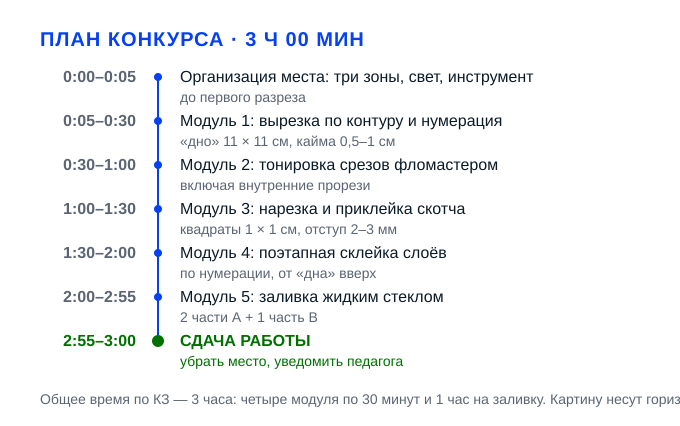
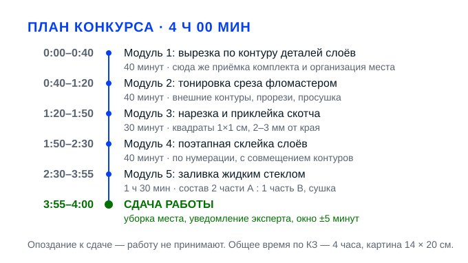
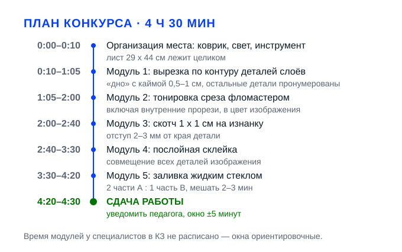

Современная техника декорирования (папертоль) (ФВ)
Задания ниже — официальные файлы «Абилимпикс» (источник: abilympics-russia.ru), разложенные по категориям. Решения написаны по тексту задания, регламенту и критериям оценки; в них указано, что именно проверяет эксперт.
Школьник
14–16 лет, базовый уровень заданияВ официальном файле категории не разделены отдельными разделами — приводим задание целиком; различия по категориям смотрите в таблице модулей.
Пошаговое решение
Задание для школьников — картина в технике папертоль размером 11 на 11 сантиметров по заданной теме, и на неё отведено три часа: четыре модуля по тридцать минут и час на заливку. Модуль 1 — вырезать по контуру детали слоёв, модуль 2 — затонировать срезы фломастером в цвет изображения, модуль 3 — нарезать и приклеить вспененный двусторонний скотч квадратами 1 на 1 сантиметр, модуль 4 — собрать слои по нумерации, модуль 5 — залить жидким стеклом. Техника держится на двух вещах: чистоте контура и точности совмещения слоёв, а объём появляется только за счёт скотча, приклеенного с отступом 2–3 миллиметра от края. Внимательно отнеситесь к последнему модулю: состав смешивается в пропорции две части А и одна часть В, размешивается медленно, и ошибка в пропорции или спешка портят всю предыдущую работу. План ниже разложен по модулям с указанием времени, чтобы вы могли сверяться по ходу работы.

Задача 1. Организовать рабочее место и разобрать наборМодуль 1 · 30 минут
До первого разреза стол должен быть превращён в маленькую мастерскую: три разделённые зоны, проверенный инструмент, разложенные по порядку листы и размеченное «дно» картины. Папертоль — работа с десятками мелких бумажных деталей, и если они лежат в общей куче, время уходит не на вырезание, а на поиск. На весь первый модуль по конкурсному заданию отведено 30 минут, и первые пять из них экономят остальные двадцать пять.
Действие 1.1. Обустроить стол, свет и инструмент
Шаг 1.1.1
Освобождаем стол полностью: убираем всё, что не относится к заданию, оставляем набор, инструменты и салфетки. Делим поверхность на три зоны — слева неразрезанные листы, в центре коврик для резки, справа лоток или чистый лист для готовых деталей. Между центром и правой зоной оставляем полосу сантиметров пятнадцать, чтобы вырезанные детали не оказывались под локтем, пока вы работаете с очередным слоем.
Организация рабочего места — первый пункт последовательности выполнения задания: в КЗ она стоит раньше самой картины, потому что по ней видно, понимает ли участник природу техники. В папертоли одновременно живут три потока материала — целые листы, детали в работе и готовые слои, — и если они перемешаны, каждая минута модуля тратится на разбор завалов, а модуль длится всего 30 минут.
Три зоны различимы глазом и не пересекаются, на столе нет телефона, упаковки и посторонних предметов, справа лежит пустой лоток. Проверьте локтем: работая в центре, вы не должны задевать правую зону — если задеваете, сдвиньте лоток дальше к краю.
Самая частая ошибка — разложить весь набор по всей поверхности: через десять минут листы уезжают под обрезки, а вырезанные детали прилипают к рукаву. Вторая — держать готовые детали прямо под руками, у центра: тонкая бумага сминается, и деталь приходится вырезать заново, а запасного листа в наборе нет.
Эксперт подходит к столу в первые минуты модуля 1 и смотрит именно на организацию: разделены ли зоны, лежит ли инструмент на своих местах, нет ли на столе лишнего.
Шаг 1.1.2
Садимся так, чтобы лампа была слева и чуть впереди, а тень от руки не падала на линию реза. Свет должен быть ярким и ровным: одна настольная лампа на 4000–5000 К плюс общий свет в аудитории достаточно, а вот направленная лампа сбоку даёт жёсткую тень и мешает видеть белый срез на белой бумаге. Стул поднимаем или опускаем так, чтобы предплечье лежало на столе, а не висело: при работе кончиками ножниц любое движение корпуса уводит линию реза.
Тонировка и вырезание в этой технике идут по белой бумаге, и при плохом свете граница детали сливается с фоном — отсюда косые резы и непрокрашенные срезы, за которые снимают баллы в модулях 1 и 2. Посадка влияет на точность не меньше инструмента: на 11 сантиметрах картины ошибка в миллиметр уже видна, а рука на весу даёт именно такую погрешность.
Тень от руки не перекрывает линию реза, блик лампы не бьёт в глаза, предплечье лежит на столе. Проверьте просто: положите лист под лампу и посмотрите, видно ли контур в самом тонком месте рисунка — если приходится наклоняться, света мало.
Работать вполоборота к лампе, прикрывая лист собственной тенью: контур виден только частично, и на поворотах линии ножницы уходят в сторону. Вторая ошибка — сидеть слишком далеко от стола и тянуться к листу: к концу модуля устаёт плечо, и точность падает как раз на мелких деталях.
Эксперт отмечает посадку и свет как часть организации труда, но главное для него — виден ли вам контур: по характеру реза это читается сразу. Смотрит он и на посадку: по ней видно, удобно ли участнику работать всё задание.
Шаг 1.1.3
Раскладываем инструмент по правую руку в порядке использования: маникюрные ножницы с прямыми кончиками для мелких деталей, ножницы среднего размера для крупных, канцелярский нож с новым лезвием, коврик, простой карандаш, ластик, линейка, пинцет, клеевой карандаш и салфетки. Проверяем ножницы на обрезке: они должны резать кончиками, а не рвать бумагу у шарнира, и не зажёвывать тонкий лист.
Тупые или разболтанные ножницы оставляют лохматый край, а лохматый срез невозможно аккуратно затонировать фломастером — ворсинки торчат и впитывают краску пятнами. Это прямо бьёт по результату модуля 2, где требуется обработать края деталей в цвет картинки, поэтому инструмент проверяют до старта, а не в процессе.
На обрезке бумаги ножницы дают чистую линию без зажёванных волокон, лезвие ножа не имеет зазубрин и не гуляет в держателе, коврик не скользит по столу. Проверьте каждый инструмент одним движением — это тридцать секунд.
Взять ножницы «какие дали» и обнаружить тупость на первой же детали: перерезать нечем, а замена инструмента в середине модуля съедает время и сбивает ритм. Вторая ошибка — работать канцелярским ножом на весу или на глянцевом листе без коврика: лезвие режет стол и рвёт бумагу.
Эксперт смотрит, каким инструментом выполнен рез: ровный край с двух сторон читается как владение техникой, рваный — как спешка. Проверяет он и нож: лезвие должно быть новым, без зазубрин.
Действие 1.2. Разобрать набор на слои и проверить комплектность
Шаг 1.2.1
Выкладываем листы на левую зону и разбираем их по принципу «от полного к мелкому»: сначала лист с целым изображением, затем листы с всё более узкими фрагментами. В наборе папертоля каждый лист — это один слой, и на нём напечатано одно и то же изображение, но с вырезанными участками; полный лист без вырезов всегда один, он и становится «дном» картины.
Без этой сортировки невозможно ни вырезать в правильном порядке, ни собрать слои: в модуле 4 склейка идёт строго по последовательности, и перепутанный слой приходится снимать уже с приклеенного скотча. Разбор занимает две-три минуты, а экономит их десятками.
Листы разложены слева столбиком или веером, полный лист лежит отдельно и сверху, видно, что каждый следующий слой — часть предыдущего. Сверьте количество листов с перечнем в наборе: если листов меньше, чем указано, скажите об этом сразу.
Разложить листы как попало и вырезать первый попавшийся: в результате «дном» оказывается частичный слой, картинка не собирается, а исправить это уже нельзя — лист-основа порезан. Вторая ошибка — не пересчитать листы и хватиться пропажи в середине сборки.
Эксперт проверяет, правильно ли определён нижний слой: это база всей картины, и ошибка здесь обнуляет работу целиком. Ошибка видна по первому же приложенному слою: он не совпадает с остальными.
Шаг 1.2.2
Берём полный лист и кладём его перед собой лицевой стороной вверх, остальные листы пока отводим в сторону. Определяем лицевую и оборотную сторону: лицевая — та, где печать ярче и чище, оборотная обычно чуть бледнее и шершавее на ощупь. Если лист пришёл с заломами, проглаживаем его через чистый лист бумаги или осторожно растягиваем пальцами от центра к краям, не касаясь печати.
Все пометки, номера и приклеенный скотч идут на обороте, поэтому сторона должна быть определена до первой пометки карандашом — иначе номер отпечатается на лице и останется в готовой картине. Заломы на листе не разглаживаются под скотчем: после сборки они превращаются в светлые полосы на изображении.
Лист лежит ровно, печать смотрит вверх, заломов нет. Посмотрите на лист против света: на просвет видны все вмятины, которые не заметны сверху. Проверьте и углы листов: именно там заломы прячутся от глаз.
Подписать лист с лицевой стороны и потом заклеить номер скотчем: цифра просвечивает через бумагу и портит небо или фон. Вторая ошибка — тянуть заломанный угол, чтобы «распрямить»: бумага рвётся по волокну, и деталь теряет форму.
Эксперт осматривает листы на предмет заломов и загрязнений: чистота материала входит в общее впечатление от работы. Отдельно он смотрит на углы листов и на состояние каймы.
Шаг 1.2.3
Считаем слои и прикидываем, сколько деталей предстоит вырезать: обычно в наборе для школьников от шести до десяти слоёв, и в каждом от одной до пяти отдельных деталей. Записываем на черновике или просто держим в голове схему: какой слой идёт первым, какие детали на нём крупные, где расположены внутренние прорези — окна, просветы между ветками, промежутки между листьями.
Такая прикидка — это и есть планирование, без которого 30 минут модуля 1 не хватает: внутренние прорези режутся ножом и занимают втрое больше времени, чем внешний контур. Заранее увидев, где их больше, вы распределите силы и не бросите вырезание на середине.
Слои пересчитаны, число деталей записано, отмечены листы с прорезями. Если деталей больше двадцати, планируйте по две минуты на деталь — это ровно 30 минут модуля с небольшим запасом. Запишите число деталей на черновике и держите его под рукой.
Начать вырезать, не оценив объём: к двадцатой минуте выясняется, что сделана половина, и дальше работа идёт в спешке, с косыми резами и потерянными мелочами. Вторая ошибка — вырезать все крупные детали и оставить мелочь «на потом»: мелкие детали всегда отнимают больше времени, чем кажется.
Эксперт по ходу модуля оценивает темп: успевает ли участник вырезать все слои к тридцатой минуте или бросает работу на середине. Он же отмечает момент, когда участник начинает спешить и резать небрежно.
Действие 1.3. Разметить «дно» и распределить время
Шаг 1.3.1
На полном листе размечаем квадрат 11 на 11 сантиметров — таков размер картины для категории «Школьники». Кладём линейку параллельно краю изображения, отмеряем от центра, а не от края листа: набор может быть напечатан с полями, и отсчёт от края даёт смещение. По всем четырём сторонам оставляем белую кайму 0,5–1 сантиметра, проводя линии тонко, простым карандашом, едва касаясь бумаги.
Кайма — не отход, а рамка картины: по КЗ нижний слой вырезается по периметру с запасом 0,5–1 сантиметра белой каймы, и именно этот запас держит все последующие слои и защищает края от залива жидким стеклом. Размер 11 на 11 проверяется линейкой у эксперта, поэтому разметка должна быть точной.
Обе диагонали квадрата равны, противоположные стороны совпадают до миллиметра, кайма по всем сторонам одинаковая. Проверьте угольником или вторым измерением по диагонали — расхождение больше двух миллиметров уже заметно на готовой работе.
Разметить квадрат «на глаз» и получить перекошенное «дно»: все слои лягут с перекосом, а кайма с одной стороны окажется вдвое шире, чем с другой. Вторая ошибка — провести линии жирным карандашом с нажимом: борозда остаётся на лицевой стороне и видна под заливкой.
Эксперт измеряет готовую картину и кайму линейкой: 11 на 11 сантиметров и ровная рамка — обязательное условие зачёта модуля. Проверка идёт по внешним сторонам квадрата, а не по линиям рисунка.
Шаг 1.3.2
Расписываем тридцать минут модуля 1 по операциям: три минуты на разбор набора и разметку, двадцать две минуты на вырезание всех деталей, пять минут на нумерацию и раскладку по слоям. Внутри вырезания держим правило: сначала внешние контуры всех слоёв, потом внутренние прорези, потому что нож и ножницы требуют разной посадки руки и переключение между ними стоит времени.
Модуль 1 по КЗ длится ровно 30 минут, и он не продлевается: следующий модуль начинается по общему сигналу. Участники, которые вырезают «пока не получится идеально», теряют модуль 2 целиком, а тонировка без вырезанных деталей невозможна — два модуля из пяти провисают из-за одного.
К двадцать пятой минуте все детали вырезаны, к двадцать восьмой — пронумерованы и разложены. Проверьте по часам на столе: если на десятой минуте готовы меньше трёх деталей, темп надо поднимать, упрощая внутренние прорези до прямых линий.
Планировать «как пойдёт» и увлечься одной деталью: на неё уходит десять минут, а остальные слои остаются неразрезанными. Вторая ошибка — оставить нумерацию на конец и не успеть: без номеров сборка в модуле 4 превращается в угадывание.
Эксперт сверяет фактическое время по каждому модулю с регламентом КЗ: растянутый модуль 1 фиксируется как нарушение последовательности. Он сверяет время по часам, а не по словам участника.
Задача 2. Вырезать по контуру детали слоёвМодуль 1 · 30 минут
Главный результат модуля 1 по конкурсному заданию — готовые детали для выполнения картины. Речь не о «вырезанных картинках», а о деталях с чистым контуром, без белых ободков, без заломов и без потерянных перемычек: каждая из них потом встанет на своё место в многослойной конструкции. Здесь закладывается геометрия всей работы — тонировка и склейка только проявляют то, что сделано ножницами.
Действие 2.1. Вырезать нижний слой — «дно» картины
Шаг 2.1.1
Берём полный лист и режем по размеченному квадрату 11 на 11 сантиметров, держа ножницы вертикально к плоскости стола и поворачивая лист, а не инструмент. Линия разметки должна оставаться под лезвием, а не снаружи: если резать по внешней стороне линии, кайма вырастет на полмиллиметра с каждой стороны, и квадрат перестанет быть квадратом. Углы доводим одним движением от угла, не срезая наискось.
«Дно» — основа, на которую лягут все остальные слои, и его геометрия задаёт геометрию картины: перекошенное дно тянет за собой перекос каждого следующего слоя. По КЗ нижний слой вырезается по периметру с запасом 0,5–1 сантиметра белой каймы, и этот запас должен быть равномерным.
Стороны равны 11 сантиметрам с точностью до миллиметра, углы прямые, кайма одинаковая со всех сторон. Приложите линейку к каждому краю и к обеим диагоналям — диагонали должны совпасть по длине. Проверка занимает полминуты и делается до первой пометки на обороте.
Резать «примерно по линии» и получить дно на 10,5 сантиметра: картина выйдет меньше заявленного размера, а эксперт измеряет её линейкой. Вторая ошибка — срезать угол, чтобы «выровнять»: на готовой работе это читается как скол рамки, и заливка стечёт по косому краю.
Эксперт первым делом измеряет именно «дно»: размер 11 на 11 и ровная кайма — точка отсчёта для оценки всей картины. Он же проверяет, что кайма не срезана под линейку «для ровности».
Шаг 2.1.2
Переворачиваем вырезанное «дно» и проверяем оборот: на нём не должно быть карандашных линий, выходящих за пределы квадрата, и следов пальцев. Если разметка была с нажимом, аккуратно стираем лишние линии мягким ластиком от края к центру, не задевая печать. Затем подписываем «дно» или ставим цифру 1 в углу оборота — маленьким, еле заметным знаком. Пометку ставим один раз и больше не правим.
Оборот «дна» после сборки закрыт не полностью: кайма остаётся открытой, и всё, что на ней написано или нарисовано, будет видно с изнанки, а при заливке жидким стеклом тонкая бумага может просветить. Стирание ластиком по печати смазывает краску, поэтому работаем только по чистому полю.
Оборот чистый, номер стоит в углу и не просвечивает на лицевую сторону. Посмотрите деталь на просвет у лампы: цифра не должна читаться с лица. Если номер читается с лица, переверните деталь и подпишите другой угол.
Подписать дно жирно, «чтобы не потерялось»: цифра просвечивает через бумагу и остаётся в готовой картине под заливкой. Вторая ошибка — стирать карандаш мокрой салфеткой: бумага идёт волной, и дно перестаёт быть плоским.
Эксперт осматривает лицевую сторону «дна» на загрязнения и следы разметки: чистота основы видна через прозрачную заливку. Смотрит он и на кайму: на ней не должно быть следов ластика и разводов.
Шаг 2.1.3
Укладываем готовое «дно» в правую зону лицом вверх и накрываем чистым листом бумаги, чтобы не оседала пыль и не садились отпечатки. Дальше все слои будут проверяться именно на нём: деталь, положенная на дно, сразу показывает, попадает ли она в свой контур. Поэтому дно держим на виду до конца модуля, а не убираем в стопку. Накрываем так, чтобы лист не касался печати и не тёр её при работе.
Сверка с «дном» — самый быстрый способ контроля: не нужно ничего измерять, достаточно наложить деталь и посмотреть, совпадают ли линии. Если дно убрано в стопку, ошибки вырезания обнаруживаются только в модуле 4, когда исправлять их уже нечем. На такую сверку уходит секунда.
Дно лежит отдельно, лицом вверх, накрыто листом, не участвует в общем ворохе обрезков. Проверьте через десять минут: на нём нет ни одной обрезки. Проверьте и то, что лист-покрытие лежит ровно и не сдвигается, когда вы работаете рядом.
Свалить дно в общую стопку с остальными листами: его края мнутся, а на кайме появляются вмятины от ножниц. Вторая ошибка — использовать дно как подложку при резке: на нём остаются царапины от ножа. Дно — единственная деталь, у которой нет запаса.
Эксперт проверяет состояние «дна» перед сборкой: вмятины и царапины на основе не скрываются ни тонировкой, ни заливкой. Он же смотрит, не загнут ли угол «дна» и не помята ли кайма.
Действие 2.2. Вырезать крупные и средние детали по контуру
Шаг 2.2.1
Кладём лист очередного слоя на коврик и начинаем с самого крупного фрагмента. Ножницы держим так, чтобы лезвия шли вертикально, а кончики работали на поворотах: длинную прямую ведём всей длиной лезвия, а изгиб проходим кончиками, мелкими «шажками» по два-три миллиметра. Лист поворачиваем левой рукой, не меняя положения правой, — так линия остаётся плавной.
Резать по контуру нужно точно, потому что лишний белый ободок вокруг детали потом виден как светлая окантовка на цветном изображении; в модуле 2 его придётся закрывать фломастером, а на изгибах это почти невозможно. Плавность линии — это то, что отличает работу, вырезанную в технике, от работы, вырезанной на скорость.
Край ровный, без ступенек и зажёванных волокон, линия контура ушла под ножницы целиком. Проведите пальцем по срезу: он должен быть гладким, а не пилообразным. Приложите деталь к «дну» — контур совпадает.
Резать, двигая ножницами вокруг неподвижного листа: на поворотах лезвие «клюёт» и оставляет зубцы. Вторая ошибка — оставлять белый ободок в миллиметр «на всякий случай»: после сборки он складывается в светлую полосу по всему контуру и портит изображение.
Эксперт смотрит на срез вблизи: ровный, без бахромы край — признак владения инструментом, и именно по нему отличают уверенную работу. Срез он смотрит и на просвет, и с торца, поворачивая деталь в руках.
Шаг 2.2.2
Внутренние прорези — окна, просветы между ветками, промежутки между листьями — вырезаем канцелярским ножом на коврике. Прокалываем бумагу в центре будущего отверстия, отступив от контура, и ведём лезвие к линии, затем обходим контур по часовой стрелке, поворачивая лист. Нож держим строго вертикально и не поворачиваем его в толще бумаги: поворот лезвия под углом рвёт волокна.
Внутренняя прорезь — самая заметная часть папертоля: именно сквозь неё виден нижний слой, и именно она создаёт ощущение глубины. Рваный край прорези невозможно затонировать, он лохматится и впитывает краску пятнами, а модуль 2 требует обработать края деталей, включая внутренние прорези.
Прорезь повторяет контур, углы прорезаны насквозь, бумага не тянется за лезвием. Поднимите деталь на просвет: края отверстия должны быть ровными по всей длине, без «ступенек» и надрывов. Проверьте и углы прорези: там чаще всего остаются надрывы и «ступеньки».
Прорезать контур по краю, а не внутри: лезвие выходит за линию и срезает перемычку, деталь распадается на части. Вторая ошибка — резать ножом на весу или на глянцевом листе: лезвие проваливается, и прорезь получается с рваными концами.
Эксперт осматривает прорези на просвет: аккуратные окна — один из признаков качественной подготовки деталей в модуле 1. Отдельно он смотрит, не срезана ли перемычка у самой прорези.
Шаг 2.2.3
Вырезаем детали по порядку слоёв, начиная с нижних: слой за слоем, а не все крупные сразу. После каждого листа раскладываем вырезанное на «дне» — так сразу видно, что контур совпал, и не приходится возвращаться. Обрезки сдвигаем в отдельную коробку или пакет, чтобы они не мешались под руками и не прилипали к липкой стороне скотча. Коробку для обрезков ставим слева, подальше от липких деталей.
Порядок «слой за слоем» держит логику сборки: в модуле 4 слои клеятся по нумерации, и если детали вырезаны вперемешку, их приходится сортировать заново. Уборка обрезков по ходу — не педантизм: бумажная пыль и мелкие обрезки прилипают к скотчу и остаются внутри картины.
К концу действия вырезаны все крупные и средние детали, каждая проверена наложением на дно, обрезки убраны. Пересчитайте детали: их число должно совпадать с прикидкой из действия 1.2. Разложите детали по номерам слоёв и пересчитайте каждую стопку.
Вырезать всё в кучу и разбирать потом: детали сминаются, а тонкие перемычки ломаются при перекладывании. Вторая ошибка — сдувать обрезки со стола: они разлетаются по всей зоне и попадают на липкий скотч.
Эксперт наблюдает за порядком на столе по ходу модуля: работа без завалов из обрезков оценивается выше. Он же отмечает, не лежат ли обрезки на лицевой стороне вырезанных деталей.
Действие 2.3. Вырезать мелкие детали и тонкие перемычки
Шаг 2.3.1
Мелкие детали — листья, блики, мелкие фигурки — берём маникюрными ножницами с прямыми кончиками. Деталь держим пинцетом или двумя пальцами за самый край, режем по контуру короткими движениями, не отрывая взгляда от линии. Если деталь меньше сантиметра, удобнее положить её на коврик и работать кончиками лезвий, поворачивая коврик, а не деталь в руке.
Мелкие элементы в папертоли несут самые выразительные акценты — блик в глазу, ягода, кончик ветки, — и именно они выдают качество работы. Потерянная или смятая мелочь видна сразу, потому что на её месте остаётся белое пятно незакрытой бумаги. Это самый заметный дефект на готовой картине.
Деталь вырезана целиком, контур читается, на ней нет заломов и следов пальцев. Наложите её на дно: она должна попасть точно в свой контур без сдвига и без белого зазора. Проверьте и оборот: на нём не должно быть вмятин от пинцета и следов ногтя.
Резать мелкую деталь «на весу», держа её в воздухе: она выскальзывает, сминается, и восстановить форму уже нельзя. Вторая ошибка — вырезать мелочь крупными ножницами: кончики не видят линию, и деталь теряет характер.
Эксперт рассматривает мелкие детали через лупу или вблизи: качество именно на них показывает уровень владения техникой. Смотрит он и на то, не потерялись ли мелкие детали по пути.
Шаг 2.3.2
Тонкие перемычки — стебли, ветки, провода, линии между элементами — не дорезаем до конца одним движением: ведём ножницы с двух сторон, оставляя перемычку шириной около миллиметра. Если линия совсем тонкая, лучше подрезать её кончиками ножниц и довести ножом, придерживая деталь пинцетом, чем тянуть ножницами до последнего миллиметра. Ножницами тонкую линию тянуть нельзя: она рвётся у шарнира.
Перемычка тоньше миллиметра рвётся при тонировке и при снятии защитного слоя скотча, а порванная деталь уже не держит форму и не ложится в свой контур. Толще миллиметра — выглядит грубо и не совпадает с линией рисунка, поэтому ищем середину. Проверяется это на ощупь и на просвет.
Перемычки целые, одинаковой толщины по всей длине, деталь не распалась на части при подъёме. Возьмите её пинцетом за середину и приподнимите: она должна держать форму, а не провисать. Проверьте каждую перемычку отдельно, а не всю деталь целиком.
Дорезать тонкую линию «до чиста» и разорвать деталь пополам: склеить её нечем, стык виден под заливкой. Вторая ошибка — оставить перемычку толстой, чтобы «было прочнее»: на готовой работе она читается как лишняя полоса поверх изображения.
Эксперт проверяет целостность деталей: разорванная перемычка — прямой минус за качество вырезания. Он смотрит детали на просвет и отмечает разрывы, даже мелкие, у самого края.
Шаг 2.3.3
Заканчиваем вырезание внутренних прорезей на мелких слоях и сразу проверяем каждую деталь наложением на «дно»: совпал контур — кладём в правую зону лицом вверх, не совпал — подрезаем там, где лишняя бумага, а не там, где удобнее. К этому моменту у вас должны быть вырезаны все слои целиком, включая самые маленькие фрагменты верхнего слоя. Проверка идёт сразу после резки, а не в конце модуля.
Результат модуля 1 по КЗ — готовые детали для выполнения картины, и «готовые» означает все, а не большинство: недоделанный слой остановит сборку в модуле 4, потому что порядок склейки жёсткий. Подрезка по факту наложения — самый надёжный способ поймать ошибку, пока бумага ещё целая.
Все слои вырезаны, каждая деталь проверена наложением, лишние белые полоски подрезаны. Разложите детали по слоям стопками — число стопок равно числу слоёв в наборе. Сверху положите листок с номером слоя, чтобы не перепутать стопки при сборке.
Оставить «потом подрежу» на самый мелкий слой: именно он сидит сверху и первым бросается в глаза, а его дефекты уже не закрыть. Вторая ошибка — подрезать деталь, приложив её не к тому месту дна: срезается нужный край.
Эксперт в конце модуля 1 пересчитывает готовые детали и проверяет, все ли слои подготовлены к тонировке. Он же смотрит, не осталось ли на столе неразрезанных листов.
Действие 2.4. Пронумеровать детали и разложить по слоям
Шаг 2.4.1
Нумеруем детали простым карандашом по последовательности сборки: цифра ставится на обороте, в углу или у края, маленьким знаком, без нажима. Номер слоя — первая цифра, номер детали внутри слоя — вторая, например 3.2 означает вторую деталь третьего слоя. Пишем так, чтобы номер был виден на просвет с оборота, но не читался с лицевой стороны. Номер ставим один раз и больше не правим.
Нумерация — требование КЗ: вырезанные детали нумеруются по последовательности простым карандашом. Без неё в модуле 4 приходится угадывать, какой слой следующий, и ошибка стоит всей картины: снятый слой деформируется, а скотч теряет клейкость. Проверяется это на сборке, когда слои идут по порядку.
У каждой детали есть номер, номера не повторяются, последовательность восстановлена от дна к верхнему слою. Выложите стопки по порядку и пройдите по номерам: 1, 2, 3 и так далее без пропусков. Номера должны читаться при свете настольной лампы.
Нумеровать шариковой ручкой: чернила просвечивают через тонкую бумагу и видны на лицевой стороне. Вторая ошибка — ставить номер на липкую сторону будущего скотча: он не приклеится. Третья ошибка — нумеровать после тонировки: краска смазывает цифры.
Эксперт проверяет, есть ли нумерация: в КЗ она прописана отдельным пунктом и оценивается как часть подготовки деталей. Он смотрит и на то, читаются ли номера при слабом свете и на весу.
Шаг 2.4.2
Раскладываем детали по слоям: каждую стопку — на отдельный листок или в отдельный конверт, сверху номер слоя. Верхние слои с мелкими деталями кладём в последнюю очередь и накрываем листом, чтобы ничего не сдуло и не примяло. Всё это остаётся в правой зоне, под рукой, до начала модуля 2. Отдельно держим лист-подложку, на котором детали лежат лицом вверх: так их видно и не нужно переворачивать при проверке.
Разложенные по слоям детали — это готовая к тонировке заготовка: в модуле 2 нужно обрабатывать срезы в цвет изображения, и удобнее идти слой за слоем, а не выискивать детали по всей стопке. Потерянная мелкая деталь обнаруживается только на сборке, когда восполнить её нечем.
Стопок ровно столько, сколько слоёв в наборе, номера на листках совпадают с номерами деталей, ни одна деталь не лежит отдельно. Пересчитайте общее количество — оно должно совпадать с прикидкой из действия 1.2.
Сложить все детали в одну стопку «по номерам и так разберу»: тонкие перемычки ломаются под весом верхних слоёв, а номера на обороте перетираются. Вторая ошибка — оставить детали открытыми на сквозняке: мелочь сдувает со стола.
Эксперт оценивает порядок в раскладке: подготовленные и разложенные детали показывают, что участник контролирует процесс. Он же смотрит, не лежат ли детали на самом краю стола.
Задача 3. Тонировать срезы деталей фломастеромМодуль 2 · 30 минут
Результат модуля 2 по конкурсному заданию — обработанные края деталей в цвет картинки. У бумаги белая середина, и на срезе любой вырезанной детали видна светлая полоса; если её не закрыть, картина соберётся из белых ободков и потеряет глубину. Тонировка превращает технический срез в продолжение изображения, и делать её нужно по всем тридцати минутам модуля, включая внутренние прорези.
Действие 3.1. Подобрать цвета и проверить фломастеры
Шаг 3.1.1
До первой детали проверяем фломастеры на обрезке той же бумаги: проводим короткую линию и смотрим, как ложится краска. Нужен цвет на полтона темнее самого изображения у линии контура, потому что белый срез всегда выглядит светлее, чем краска на нём, и «точный» цвет на торце читается как светлая полоса. Спиртовые фломастеры сохнут за десять секунд и почти не коробят бумагу — на тонких деталях это важно.
Тонировка — отдельный модуль на 30 минут, и её результат оценивается как «обработаны края деталей в цвет картинки». Цвет, подобранный на глаз без пробы, на половине деталей оказывается светлее нужного, и белая кромка остаётся видимой — модуль формально выполнен, а эффекта нет.
Проба на обрезке: краска ложится ровно, без «жучков» и без светлых проплешин, после высыхания цвет не светлеет. Сравните пробу с изображением у линии контура при том же свете, при котором работаете. Проверка занимает минуту и делается до первой детали.
Взять фломастер «по названию цвета» и не проверить: у разных наборов один и тот же оттенок уходит в холод или в тепло, и на картине появляется цветной контур, не совпадающий с изображением. Вторая ошибка — брать фломастер на водной основе: бумага идёт волной, деталь коробится.
Эксперт смотрит на стык детали с фоном: если срез читается как аккуратная линия рисунка, а не как белый ободок, тонировка зачтена. Смотрит он и на верхние слои: там стык среза виден лучше всего.
Шаг 3.1.2
Раскладываем фломастеры по цветовым зонам картины и держим их под рукой в том порядке, в котором пойдёт работа: небо и вода — голубые и синие, листва и трава — зелёные двух оттенков, стволы и земля — коричневые, кожа и тёплые акценты — охристые и красные. На каждую зону оставляем один рабочий фломастер и один запасной того же оттенка, потому что на двадцати деталях стержень садится.
На 11 сантиметрах картины переходов цвета мало, и работать «одним коричневым на всё» нельзя: тонированный срез должен продолжать цвет именно этой части изображения, иначе на стыке неба и листвы появляется полоса чужого оттенка. Разложенные по зонам фломастеры экономят время, которого в модуле ровно 30 минут.
Фломастеры сгруппированы по зонам, у каждой группы есть запасной, и ни один не высох. Проведите каждым черту на обрезке перед началом: высохший стержень не пишет, а царапает бумагу. Отметьте на обрезке номер каждого фломастера, чтобы не путать оттенки.
Начать с одного фломастера и переключаться на другой, отыскивая его в общей куче: на переключениях уходит по минуте, а в конце модуля не хватает времени на прорези. Вторая ошибка — не проверить запас: фломастер садится на середине слоя, и часть срезов остаётся белой.
Эксперт оценивает цветовое соответствие срезов изображению в целом: ровный контур по всей картине, без пятен чужого цвета. Он же смотрит, не осталось ли белых участков на прорезях.
Действие 3.2. Тонировать внешние срезы деталей
Шаг 3.2.1
Берём деталь пинцетом или двумя пальцами за угол и держим на весу, чуть наклонив к себе. Фломастер ведём по торцу бумаги под углом примерно 45 градусов к плоскости детали, кончиком стержня, без нажима, короткими движениями вдоль среза. Торец у обычной офсетной бумаги — десятые доли миллиметра, поэтому краска наносится не «линией», а касанием, и срез должен потемнеть целиком.
Если красить, положив деталь на стол, фломастер неизбежно заезжает на лицевую сторону и оставляет цветную полосу поверх изображения, а стереть её нельзя. Держа деталь на весу и наклонив её, вы подставляете под стержень именно торец — это единственный способ прокрасить срез, не испортив лицо.
Срез прокрашен по всей длине, белой полоски не видно ни с лица, ни с изнанки. Посмотрите на деталь с торца, на уровне глаз: если торец матово-белый — краска не легла, если цветной — готово. Проверьте и внутренние срезы, если они уже вырезаны.
Красить деталь, лежащую на столе: фломастер соскальзывает на лицевую сторону, и на изображении остаётся цветная дуга. Вторая ошибка — сильно давить на стержень: бумага разлохмачивается, и срез превращается в бахрому, которая уже не тонируется.
Эксперт берёт деталь в руки и смотрит на срез сбоку: именно так проверяется, прокрашен торец или только край лицевой стороны. Смотрит он и на кайму «дна»: её срез тоже считается.
Шаг 3.2.2
Ведём фломастер от себя, начиная с дальнего конца среза, и стараемся не останавливаться на изгибах: остановка даёт тёмное пятно, потому что краска на торце копится. На вогнутых участках поворачиваем деталь, а не фломастер, и проходим их двумя-тремя короткими касаниями. Прямые длинные срезы («дно» и крупные детали) проходим одним движением на всю длину.
Равномерность важнее насыщенности: пятно на срезе видно на готовой картине как тёмный узел, а недокрашенный участок — как белый разрыв контура. По КЗ требуется обработать края в цвет картинки, то есть ровно, а не «местами густо». Пятно на срезе исправить уже нельзя: краска впиталась в бумагу.
Срез одного цвета по всей длине, без тёмных сгустков и светлых пропусков. Проведите пальцем в чистой перчатке или салфеткой: краска не должна оставаться на пальце после высыхания. Проверьте срез при боковом свете, а не только сверху.
Красить срез в несколько слоёв «чтобы потемнее»: спиртовые чернила размывают предыдущий слой, и на торце появляется грязный оттенок. Вторая ошибка — останавливать фломастер на углу: там копится краска и остаётся тёмная точка.
Эксперт осматривает картину целиком: равномерный контур по периметру деталей читается как аккуратность, пятна — как спешка. Он смотрит картину с расстояния вытянутой руки и вблизи.
Шаг 3.2.3
Каждую тонированную деталь откладываем в сторону срезом вверх и даём краске высохнуть десять-двадцать секунд, прежде чем положить в стопку. Стопку собираем так, чтобы детали не касались друг друга тонированными краями: прокладываем их полоской чистой бумаги или кладём в один слой на лист. Порядок слоёв сохраняем тот же, что был до тонировки. Проверяем, чтобы стопка не сдвигалась с места при сушке.
Недосохшая краска переносится на соседнюю деталь и на пальцы, а потом оказывается на лицевой стороне изображения — отпечаток на светлом участке не убрать. Прокладка занимает секунды, а испорченная деталь — это потерянный слой и минус за качество. Прокладка — это страховка на случай, если краска не досохла.
На срезе нет блеска сырой краски, при касании салфеткой след не остаётся, детали в стопке не слиплись. Проверьте нижнюю деталь стопки: на её лице не должно быть цветных отпечатков. Проверьте и торцы: они не должны лосниться от сырой краски.
Складывать детали сразу после тонировки, срез к лицу следующей детали: краска отпечатывается полосами, которые видны на готовой картине. Вторая ошибка — сушить детали на газете: типографская краска переносится на бумагу.
Эксперт проверяет лицевые стороны деталей на отпечатки: чистая поверхность — обязательное условие зачёта модуля 2. Он смотрит детали при боковом свете, где отпечатки видны как тёмные пятна.
Действие 3.3. Тонировать внутренние прорези и мелкие детали
Шаг 3.3.1
Внутренние прорези тонируем кончиком фломастера, водя им по кромке отверстия изнутри, а не по лицевой стороне. Удобно положить деталь на коврик и придерживать пинцетом за край, поворачивая её так, чтобы кромка прорези оказалась сверху. На узких прорезях работаем самым тонким фломастером из набора: широкий стержень не входит в отверстие и пачкает лицо.
Прорези — это места, через которые виден нижний слой, и белая кромка вокруг них читается как светлая рамка вокруг каждого окна, разрушая эффект глубины. В КЗ отдельно указано, что тонируются срезы деталей, включая внутренние прорези, — то есть без них модуль не закрыт.
Кромка прорези прокрашена по всему периметру, включая углы, на лицевой стороне вокруг отверстия нет цветных мазков. Посмотрите на деталь на просвет: белая линия вокруг окна должна исчезнуть. Проверьте каждый угол прорези отдельно.
Красить прорезь, не придерживая деталь: она продавливается стержнем и теряет плоскую форму. Вторая ошибка — заходить стержнем на лицо у кромки: цветная кайма вокруг окна видна сильнее, чем исходная белая.
Эксперт смотрит картину на просвет и под углом: невытонированные прорези дают светлые ободки, которые сразу заметны. Он же проверяет, не затекло ли краской лицо вокруг окна.
Шаг 3.3.2
Мелкие детали тонируем, положив их на лист белой бумаги: на белом фоне видно, где срез остался светлым. Придерживаем деталь пинцетом за угол и проходим фломастером по контуру по часовой стрелке, поворачивая лист под деталью. Детали меньше пяти миллиметров удобнее держать на кончике пинцета и тонировать, не снимая с него. Фломастер при этом держим почти вертикально, чтобы не задеть лицо детали.
Мелкие детали лежат на верхних слоях, ближе всего к зрителю, и их срез виден лучше всего — именно на них белая кромка заметнее всего. Кроме того, тонировка упрочняет тонкие перемычки: пропитанная краской бумага меньше рвётся при снятии защитного слоя скотча.
Все мелкие детали тонированы, ни одна не потерялась в процессе, перемычки целые. Пересчитайте их по номерам: число должно совпадать с тем, что было после вырезания. Разложите их по номерам на листе и пересчитайте ещё раз перед сборкой.
Тонировать мелочь, зажав её пальцами: деталь сминается, а на срезе остаётся вмятина от ногтя. Вторая ошибка — складывать тонированную мелочь в общую коробку: она перетирается и теряет краску на срезах.
Эксперт обращает внимание на верхний слой: он рассматривается в первую очередь, и качество тонировки мелочи видно сразу. Он смотрит на мелкие детали вблизи и под углом к свету.
Задача 4. Нарезать и приклеить вспененный двусторонний скотчМодуль 3 · 30 минут
Результат модуля 3 по конкурсному заданию — скотч, приклеенный к элементам картины. Вспененный скотч и есть тот самый объём, ради которого делается папертоль: он поднимает каждый слой над предыдущим на свою толщину, и между деталями появляется воздушная прослойка с тенью. От аккуратности этого модуля зависит, встанут ли слои ровно и не будет ли видно липких краёв внутри картины.
Действие 4.1. Нарезать скотч на квадраты и полоски
Шаг 4.1.1
Берём рулон вспененного двустороннего скотча и, не снимая защитный слой, отрезаем полосу длиной сантиметров десять. Кладём её на коврик защитным слоем вверх и размечаем простым карандашом через каждый сантиметр: по КЗ скотч нарезается на квадраты 1 на 1 сантиметр. Разметку наносим едва заметно, чтобы не продавить вспененную основу. Полосу режем ножницами, а не рвём руками: край должен быть ровным.
Квадрат 1 на 1 сантиметр — рабочий размер для картины 11 на 11: он держит деталь, но не упирается в край и не выходит за контур. Крупные куски выступают за срез, липнут к пальцам и к соседним слоям, а мелкие не обеспечивают сцепления — деталь отходит.
Квадраты одинаковые, сторона около сантиметра, защитный слой не надорван. Проверьте линейкой первые три: разброс больше двух миллиметров означает, что разметка сбилась и её надо повторить. Проверьте и толщину квадратов: она должна быть одинаковой.
Резать скотч «на глаз» и получить куски в полтора сантиметра: они выступают за край мелких деталей и приклеиваются к нижнему слою раньше времени. Вторая ошибка — резать, сняв защитный слой: липкая сторона собирает пыль и ворс, и скотч перестаёт держать.
Эксперт смотрит на изнанку собранной картины и на просветы между слоями: выступающий скотч виден как блестящая полоска. Он смотрит и на просветы между слоями при боковом свете.
Шаг 4.1.2
Нарезаем квадраты ножницами, держа полосу скотча на весу и отрезая по разметке одним движением, либо ножом на коврике, прижимая полосу линейкой. Готовые квадраты складываем на чистый лист защитным слоем вниз, чтобы они не прилипали друг к другу. Нарезаем с запасом: на картину 11 на 11 обычно уходит тридцать-сорок квадратов, и лучше иметь десяток лишних, чем останавливать сборку.
Запас нужен потому, что скотч расходуется неравномерно: на крупные детали уходит по пять-шесть квадратов, на мелкие — по одному, и пересчитывать в середине модуля некогда. Модуль длится 30 минут, нарезка занимает пять-семь, и остаток времени должен уйти на приклейку.
Квадратов нарезано не меньше сорока, они ровные, лежат защитным слоем вниз, не слиплись. Возьмите один: он должен отделяться от листа целиком, не разрываясь по вспененной основе. Проверьте десяток квадратов подряд, а не только первый.
Нарезать ровно столько, сколько кажется нужным: на середине приклейки скотч заканчивается, и приходится прерываться на нарезку, теряя ритм. Вторая ошибка — резать ножницами с нажимом: вспененный слой сминается, и квадрат становится тоньше остальных, отчего слой ложится с перекосом.
Эксперт наблюдает за темпом модуля 3: успевает ли участник нарезать и приклеить скотч в отведённые 30 минут. Он же смотрит, не тратит ли участник время на нарезку в ущерб приклейке.
Шаг 4.1.3
Отдельно нарезаем узкие полоски шириной 2–3 миллиметра для тонких деталей: стеблей, веток, перемычек, краёв прорезей. Полоску отрезаем от той же ленты, размечая её вдоль, и режем вдоль волокон защитного слоя, чтобы он не рвался при снятии. Такие полоски клеим на тонкие элементы вместо квадратов: квадрат на перемычке в миллиметр просто не помещается.
Тонкая деталь с квадратом 1 на 1 сантиметр не проклеивается: скотч выходит за её края, прилипает к нижнему слою и приподнимает деталь в этом месте, отчего слой встаёт с наклоном. Полоска 2–3 миллиметра повторяет форму детали и держит её ровно. Это видно на готовой картине как разрыв линии.
Полоски ровные, шириной 2–3 миллиметра, не растянуты, защитный слой целый. Приложите полоску к самой тонкой детали: она должна уместиться с отступом от края. Проверьте полоску на изгибе: она не должна ломаться при сгибании.
Клеить квадраты на тонкие детали «как получится»: слой встаёт криво, а исправить это после прижатия нельзя. Вторая ошибка — тянуть полоску при нарезке: вспененная основа растягивается и потом сжимается, уводя деталь в сторону.
Эксперт проверяет посадку тонких деталей: перекошенная перемычка видна на готовой картине как разрыв линии. Он смотрит на тонкие детали сбоку: наклон виден как тень под кромкой.
Действие 4.2. Приклеить скотч на изнанку деталей
Шаг 4.2.1
Кладём деталь лицом вниз на чистый лист и приклеиваем квадрат скотча на изнанку, отступив от края 2–3 миллиметра. Отступ обязателен: если скотч приклеен вплотную к срезу, его липкий край выступает за контур и цепляется за всё, что рядом, а после сборки блестит в просвете. Прижимаем квадрат пальцем через защитный слой на две-три секунды, не сдвигая его.
Отступ 2–3 миллиметра прописан в КЗ и решает сразу две задачи: скотч не выходит за контур и не виден с лица, а край детали остаётся свободным, поэтому срез не топорщится. Приклеенный вплотную скотч приподнимает кромку, и на картине появляется светлая линия там, где должна быть тень.
Скотч не выходит за контур детали, отступ одинаковый по всему периметру, квадрат держится крепко. Переверните деталь и посмотрите на неё с лица: край не должен быть приподнят или отогнут. Проверьте и углы детали: там отступ чаще всего нарушен.
Клеить скотч по самому краю «чтобы крепче держалось»: липкая полоса выступает за контур, собирает пыль и прилипает к пальцам при сборке. Вторая ошибка — прижимать квадрат, сдвигая его: вспененная основа сминается, и слой встаёт с перекосом.
Эксперт осматривает изнанку деталей: отступ от края и отсутствие выступающих липких участков — прямой критерий модуля 3. Он же проверяет, не прилип ли скотч к пальцам участника.
Шаг 4.2.2
Распределяем квадраты по площади детали: по одному у каждого угла и по одному через каждые три-четыре сантиметра вдоль длинного края, плюс один-два в середине. На деталях размером меньше трёх сантиметров хватает одного квадрата по центру. Правило простое: расстояние между точками крепления не должно превышать четырёх сантиметров, иначе середина детали прогибается.
Пустоты между квадратами — это места, где бумага «дышит» и проминается при нажатии: на готовой картине появляются вмятины, а при заливке жидким стеклом состав продавливает неподдержанный участок. Равномерная сетка крепления держит плоскость каждого слоя.
Квадраты стоят по углам и вдоль краёв с шагом не больше четырёх сантиметров, середина поддержана. Нажмите на деталь пальцем в разных местах: она не должна прогибаться и щёлкать. Проверьте и края: они не должны отходить от подложки.
Клеить по одному квадрату в центр крупной детали: края висят, при сборке они задираются вверх, и слой не прилегает. Вторая ошибка — лепить квадраты вплотную друг к другу: расход скотча растёт, а толщина слоя становится неравномерной.
Эксперт проверяет, насколько ровно лежат слои: провисающие края и вмятины видны при боковом свете. Он смотрит на слои сбоку и отмечает, где бумага провисает между точками крепления.
Шаг 4.2.3
На узкие и фигурные детали клеим полоски 2–3 миллиметра, повторяя форму элемента: вдоль стебля, по кромке листа, вокруг прорези. На деталях с внутренними прорезями скотч ставим с двух сторон от отверстия, но не над ним — иначе прорезь закроется и глубина исчезнет. Каждый кусок прижимаем через защитный слой, не касаясь липкой стороны пальцами. Проверяем каждый кусок на месте, не сдвигая деталь.
Прорезь, заклеенная скотчем, перестаёт работать: через неё должен просвечивать нижний слой, а не белая пена. Полоски вместо квадратов нужны ещё и потому, что квадрат на изогнутой детали не прилегает по всей площади и отходит краем. Проверить это можно, посмотрев на деталь на просвет.
Прорези остались открытыми, полоски держатся по всей длине, липких участков на лице нет. Посмотрите на деталь на просвет: в окнах не должно быть белых пятен скотча. Пересчитайте прорези: их число должно совпасть с числом окон в наборе.
Заклеить прорезь квадратом «для прочности»: окно пропадает, и весь эффект многослойности в этом месте теряется. Вторая ошибка — клеить полоску, натягивая её: после прижатия она стягивается и уводит тонкую деталь в сторону.
Эксперт смотрит на прорези в собранной картине: закрытые окна — заметный дефект, снижающий оценку за технику. Он смотрит картину на просвет: заклеенное окно не даёт света снизу.
Шаг 4.2.4
Готовые к сборке детали укладываем стопками по слоям, защитный слой не снимаем до самого момента приклейки. Стопки прокладываем чистым листом и держим подальше от края стола: сдуть или задеть их легко, а поднять с пола — значит собрать пыль на липкие участки. В конце модуля пересчитываем детали со скотчем по номерам. Отдельно держим «дно»: оно лежит накрытым и в стопки не попадает.
Защитный слой — единственное, что сохраняет скотч рабочим: снятый заранее, он собирает ворс и пыль, и сцепление падает вдвое. Пересчёт по номерам закрывает модуль 3: к его концу у каждой детали, которая поднимается над нижним слоем, должен быть скотч.
Все детали, кроме «дна», оклеены скотчем, номера на месте, защитный слой целый. Разложите стопки по порядку и пройдите по номерам: пропусков быть не должно. Проверьте и то, что защитный слой не надорван на углах квадратов.
Оставить одну-две детали без скотча «они и так лягут»: они приклеятся вплотную к нижнему слою, и в этом месте пропадёт объём. Вторая ошибка — снять защитный слой заранее, чтобы «ускорить сборку»: скотч забивается пылью и держит хуже.
Эксперт перед сборкой проверяет, у всех ли поднимающихся деталей есть скотч: это результат, зафиксированный в КЗ для модуля 3. Он смотрит изнанку деталей до начала сборки, а не после.
Задача 5. Собрать слои картины по нумерацииМодуль 4 · 30 минут
Результат модуля 4 по конкурсному заданию — готовая картина. Все вырезанные, тонированные и оклеенные скотчем детали должны встать на свои места строго по нумерации, слой за слоем, каждый на своей высоте. Именно здесь видно, работала ли подготовка: если детали вырезаны по контуру и пронумерованы, сборка идёт спокойно и укладывается в тридцать минут.
Действие 5.1. Собрать первый слой на «дно»
Шаг 5.1.1
Кладём «дно» перед собой лицом вверх и находим два-три ориентира, по которым будем совмещать слои: пересечение линий, угол постройки, границу неба и земли, кончик ветки. Ориентиры выбираем на разных краях изображения, а не рядом друг с другом, — так перекос виден сразу. Берём деталь второго слоя, прикладываем её к дну, не снимая защитный слой, и проверяем совпадение по всем выбранным точкам.
Совмещение — самая ответственная операция всей техники: если слой встал со сдвигом в миллиметр, следующий слой придётся класть по уже сдвинутому контуру, и ошибка накапливается к верхним слоям. По КЗ при склейке необходимо совместить все детали изображений, и проверяется это по конечному результату.
Деталь ложится на своё место без белых зазоров по контуру, линии совпадают по всей длине. Проверьте по трём ориентирам и по диагонали: сдвиг в одном углу при совпадении в другом означает перекос. Проверка занимает полминуты и делается до снятия защиты.
Снимать защитный слой сразу, как взяли деталь в руки: приложить и поправить её уже нельзя, скотч схватывается за секунду. Вторая ошибка — проверять совмещение по одной точке в центре: перекос в два-три градуса на краях остаётся незамеченным.
Эксперт смотрит на стыки слоёв: сдвинутый контур даёт «двойную» линию, и это первое, что заметно на готовой картине. Он смотрит на стык первого слоя особенно внимательно.
Шаг 5.1.2
Снимаем защитный слой с одного-двух квадратов, а не со всей детали сразу: прикладываем деталь на место, придерживая её за свободный край, совмещаем по ориентирам и только потом снимаем остальную защиту. Прижимаем от центра к краям, ладонью или чистым листом бумаги, двумя-тремя секундами на каждую точку крепления, не сдвигая деталь в стороны. Деталь при этом не сдвигаем с места.
Постепенное снятие защиты даёт возможность исправить положение: пока приклеены один-два квадрата, деталь можно приподнять и переложить. Прижатие от центра к краям выгоняет воздух из-под бумаги, иначе под слоем остаётся пузырь, который виден при боковом свете.
Деталь прижата по всей площади, под ней нет пузырей и складок, контур совпал. Проведите пальцем по поверхности: она должна быть плоской, без «карманов». Проверьте поверхность при боковом свете: пузырь виден как светлое пятно.
Снять всю защиту и приложить деталь «на глаз»: она схватывается сразу и неровно, отклеить её без повреждения невозможно. Вторая ошибка — прижимать от края к центру: воздух загоняется в середину, и там остаётся вздутие.
Эксперт проверяет слои на пузыри и складки при боковом освещении: это видно без увеличительных приборов. Он смотрит на картину под углом к окну, где складки дают тень.
Шаг 5.1.3
Проверяем первый приклеенный слой на просвет и сбоку: между ним и дном должна быть ровная тень от вспененного скотча по всему контуру. Если в каком-то месте деталь легла вплотную к дну, значит, там не хватило квадрата скотча. Такой участок аккуратно приподнимаем пинцетом и добавляем кусочек скотча, не снимая деталь целиком. Кубик скотча режем на половинку, чтобы не выйти за край детали.
Ровная тень по контуру — это и есть объём, ради которого делается папертоль: она читается как глубина и придаёт картине живость. Место, где слой лёг вплотную, выглядит как вклеенная в фон плоская деталь и сразу выдаёт ошибку в модуле 3. Проверяется это под углом к свету, а не сверху.
Тень по контуру одинаковая по всей длине, деталь не прилегает к дну ни в одной точке. Посмотрите на картину под углом 30–40 градусов: рельеф должен читаться как ступенька. Проверьте тень по всему контуру, а не только на прямых участках.
Оставить провисший участок «не видно будет»: при заливке жидким стеклом состав затечёт в щель, и там появится тёмное пятно. Вторая ошибка — снимать деталь целиком, чтобы добавить скотч: вспененная основа рвётся, и деталь приходится вырезать заново, а лишнего листа нет.
Эксперт оценивает глубину рельефа: равномерная тень между слоями — признак правильно выполненного модуля 3. Он смотрит картину сбоку, на уровне стола, где рельеф виден как профиль.
Действие 5.2. Наклеить остальные слои по нумерации
Шаг 5.2.1
Дальше идём строго по номерам: берём стопку следующего слоя, сверяем номер на обороте с порядком, прикладываем без снятия защиты, совмещаем по ориентирам и приклеиваем так же, как первый слой. После каждого слоя делаем короткую паузу и смотрим на картину целиком с расстояния вытянутой руки: на этом расстоянии перекос виден лучше, чем вблизи. Пауза занимает секунды и экономит минуты.
Нумерация существует именно для этого момента: слои различаются не только рисунком, но и высотой, и слой, поставленный не по порядку, перекрывает тот, который должен быть выше. Исправление на этом этапе стоит дорого, а порядок по номерам исключает ошибку полностью.
Каждый слой встал на своё место, номера идут по порядку без пропусков, контуры совпадают по всей площади. Пройдите по стопкам: пустых листов с номерами остаться не должно. Сверьте число приклеенных слоёв с числом стопок на столе.
Клеить слои «по смыслу рисунка», пропустив номер: ближний слой оказывается под дальним, и картина теряет глубину в самом заметном месте. Вторая ошибка — ускоряться к концу и клеить без проверки совмещения: последние слои самые мелкие, и сдвиг на них заметнее всего.
Эксперт проверяет последовательность сборки по номерам на обороте деталей и по логике перекрытия слоёв на лицевой стороне. Он смотрит на перекрытие: каждый слой должен быть выше предыдущего.
Шаг 5.2.2
Если слой встал криво, но ещё не прижат полностью, приподнимаем его за свободный угол пинцетом, отклеиваем прижатые квадраты и перекладываем. Если скотч потерял клейкость или порвался, снимаем остатки, наклеиваем новые квадраты с отступом 2–3 миллиметра от края и повторяем совмещение. Деталь, которая после снятия деформировалась, распрямляем под чистым листом.
Папертоль допускает одну-две поправки, если делать их аккуратно: вспененный скотч выдерживает снятие, а вот повторное прижатие на порванной основе уже не держит. Понимание этого спасает от двух крайностей — паники при малейшем сдвиге и упрямого оставления явно кривого слоя.
Слой после поправки лежит ровно, контур совпал, скотч держит по всей площади. Проверьте пальцем: деталь не «играет» и не отходит при нажатии. Проверьте и края: они не должны быть приподняты над нижним слоем после поправки.
Тянуть слой вверх, чтобы сдвинуть его на миллиметр: вспененная основа отрывается от бумаги вместе с верхним слоем детали, и на лице появляется рваная полоса. Вторая ошибка — оставить явно сдвинутый слой, оправдывая это тем, что «и так сойдёт»: на готовой картине двойной контур виден сразу.
Эксперт осматривает стыки: следы отрыва и рваные края фиксируются как дефект сборки. Он смотрит на стыки при боковом свете: след отрыва даёт ворсинки и светлую полосу по краю детали.
Шаг 5.2.3
Там, где нужен более высокий рельеф — на главном объекте, на переднем плане, — под деталь ставим два слоя скотча: квадрат на деталь и второй квадрат поверх первого, защитными слоями наружу. Высота поднимается примерно вдвое, и тень становится глубже. Двойной скотч ставим только на крупные детали с хорошей площадью, не на перемычки. Второй квадрат ставим строго поверх первого, без сдвига.
Высота рельефа — главный художественный приём папертоля: передний план должен выступать сильнее фона, иначе картина выглядит плоской аппликацией. При этом на тонких деталях двойной слой создаёт рычаг, и они заваливаются вперёд. Проверить это можно, посмотрев на картину сбоку.
Передний план выступает заметнее фона, детали стоят ровно, не заваливаются. Посмотрите на картину в профиль: ступеньки между слоями должны быть видны и одинаковы по высоте внутри одного плана. Проверьте и профиль картины с торца.
Поднимать двойным скотчем всё подряд: картина становится «лестницей», слои перестают читаться. Вторая ошибка — ставить двойной слой на узкую деталь: она наклоняется вперёд и отходит от нижнего слоя. Это видно на защите при боковом свете.
Эксперт оценивает композицию и глубину: грамотно расставленные акценты по высоте отличают работу с замыслом. Он смотрит на картину с расстояния и в профиль, оценивая перепад высот.
Действие 5.3. Проверить картину перед заливкой
Шаг 5.3.1
Кладём собранную картину на ровную поверхность и осматриваем её при боковом свете, поворачивая лист. Проверяем три вещи: нет ли выступающих за контур кусочков скотча, нет ли деталей, приклеенных с перекосом, и нет ли пустых мест, где должен быть слой. Все найденные дефекты исправляем до заливки, потому что под составом они станут заметнее и уже не уберутся.
Жидкое стекло прозрачное и слегка увеличивает: всё, что осталось под ним, видно в подробностях. Выступающий скотч под заливкой даёт мутное белое пятно, а перекошенный слой — двойную линию, которую невозможно объяснить замыслом. Проверить это можно, наклонив картину к свету.
При боковом свете рельеф читается ровно, липких участков не видно, все слои на своих местах. Пройдите по контуру пальцем в перчатке: ничего не должно цепляться. Проверьте и щели между слоями: там чаще всего остаётся ворс.
Оставить мелкий дефект «под заливкой скроется»: прозрачный состав ничего не скрывает, а наоборот подчёркивает. Вторая ошибка — поправлять слои после начала заливки: состав уже не даст деталям встать на место.
Эксперт осматривает картину до заливки: на этом этапе ещё видно качество каждого модуля по отдельности. Он же отмечает дефекты, которые участник не увидел до заливки.
Шаг 5.3.2
Снимаем пыль и ворсинки мягкой сухой кистью или грушей, не касаясь липких участков пальцами. Особое внимание — прорезям и щелям между слоями: там скапливается бумажная пыль от резки. Если ворсинка прилипла к скотчу, снимаем её пинцетом, а не сдуваем: дыхание оставляет капли. Кисть держим почти вертикально и не касаемся липких квадратов: ворс, прилипший к скотчу, под заливкой останется навсегда.
Пыль под прозрачной заливкой видна как светлые точки, и убрать их после отверждения можно только вместе с покрытием. Обезжиривать и промывать картину нельзя: бумага и скотч не переносят влаги. Проверяется это на просвет, причём до заливки: после неё исправить уже ничего нельзя.
На поверхности нет ворсинок и пыли, прорези чистые, липкие участки не тронуты. Посмотрите на картину на просвет: пыль на бумаге видна как тёмные точки. Проверьте поверхность под лампой сбоку: пыль даёт тень и видна лучше, чем сверху.
Протирать картину влажной салфеткой: бумага идёт волной, а скотч теряет клейкость. Вторая ошибка — сдувать пыль ртом: мелкие капли слюны оставляют пятна, которые под заливкой не исчезают. Сдувать пыль над самой картиной тоже нельзя: капли летят вниз.
Эксперт проверяет чистоту поверхности перед финишной обработкой: пыль под стеклом считается дефектом. Он смотрит картину на просвет и под углом к окну.
Шаг 5.3.3
Проверяем геометрию готовой картины: размер 11 на 11 сантиметров, кайма по всем сторонам 0,5–1 сантиметра, углы прямые. Кладём линейку к каждому краю и убеждаемся, что слои не выходят за пределы «дна» и не нависают над каймой. Картину пока не сдвигаем с места: дальше она пойдёт на заливку в том же положении. Если картина уже сдвинута с места, заново выставляем её по уровню и только потом проверяем.
Габарит и кайма — то, что измеряется на защите: если слои выходят за край «дна», картина не впишется в заявленный размер, а при заливке состав затечёт под выступающую деталь. Кайма нужна как поле, по которому составу дают остановиться. Проверка идёт линейкой, а не на глаз.
Стороны равны 11 сантиметрам, кайма одинаковая, ни один слой не выступает за её границу. Проверьте диагонали: они должны совпадать. Приложите линейку к каждому краю и к обеим диагоналям: расхождение больше двух миллиметров уже видно на готовой работе.
Оставить выступающую деталь: она «съест» кайму, и заливка потечёт по краю на подложку. Вторая ошибка — подрезать кайму, чтобы выровнять картину: размер уйдёт из допуска. Проверка идёт до заливки: после неё подрезать кайму нельзя.
Эксперт измеряет готовую работу: размер и ровная кайма проверяются линейкой у каждой картины. Он же смотрит, ровно ли лежит картина на подложке: перекос в два градуса уже даёт потёк.
Задача 6. Залить картину жидким стеклом и сдать работуМодуль 5 · 1 час
Результат модуля 5 по конкурсному заданию — выполненная финишная обработка жидким стеклом. На этот модуль отведён целый час, больше, чем на любой другой, и не случайно: состав готовится по пропорции 2 к 1, размешивается медленно, наносится и оставляется до полного высыхания. Ошибка в пропорции или спешка при размешивании портят всю предыдущую работу за одну минуту.
Действие 6.1. Подготовить место и инструменты под заливку
Шаг 6.1.1
Освобождаем ровную горизонтальную поверхность и застилаем её плёнкой или плотным пакетом с запасом по краям сантиметров двадцать: состав стекает и приклеивает картину к столу намертво. Надеваем перчатки, убираем со стола всё лишнее, открываем окно или форточку — компоненты жидкого стекла пахнут, и работать нужно при притоке воздуха. Волосы убираем, рукава подворачиваем.
Жидкое стекло — двухкомпонентный состав, и его капли не отмываются водой: пролитое на стол схватывается и остаётся пятном. Перчатки и подложка защищают и работу, и мебель, а вентиляция — обязательное условие работы с составом, которое эксперт проверяет вместе с организацией места.
Поверхность ровная (проверьте уровнем или на глаз по краю стола), подложка лежит с запасом, перчатки на руках, окно открыто. На столе нет открытых ёмкостей с водой. Проверьте и то, что подложка не свисает со стола: за неё легко задеть рукавом.
Заливать прямо на столе без подложки: картина приклеивается, и снять её можно только вместе со столешницей. Вторая ошибка — работать без перчаток: состав раздражает кожу, а смыть его водой нельзя. Состав не смывается водой и остаётся на коже.
Эксперт проверяет организацию места под финишную обработку: подложка, перчатки и вентиляция входят в оценку безопасности. Он смотрит и на то, убраны ли волосы и подвёрнуты ли рукава.
Шаг 6.1.2
Кладём картину на подложку и выравниваем её по уровню: подкладываем под угол сложенную бумагу, пока поверхность не станет горизонтальной. Готовим инструменты заранее и раскладываем справа: два чистых стаканчика с меткой и один третий пустой, палочку для размешивания, одноразовую ложечку, плоскую кисточку, салфетки. Всё должно быть под рукой до того, как состав смешан.
Состав начинает схватываться уже через несколько минут после смешивания, и искать стаканчик или кисточку в этот момент некогда: пока вы ищете, масса густеет и перестаёт разравниваться. Горизонтальность критична: на наклонной поверхности состав стечёт к одному краю и оголит другой.
Картина стоит ровно, инструменты разложены, стаканчики чистые и сухие. Проверьте наклон, капнув каплю воды на подложку рядом: она не должна катиться в сторону. Проверьте и то, что картина не выступает за подложку: капли должны падать на плёнку.
Смешивать состав, не приготовив инструмент: пока ищете ложечку, масса густеет, и на картине остаются полосы от разравнивания. Вторая ошибка — использовать влажные стаканчики: вода в смоле даёт мутные разводы.
Эксперт наблюдает за подготовкой: готовность инструмента до смешивания — признак того, что участник понимает скорость реакции состава. Он смотрит на раскладку инструмента и на порядок на столе.
Действие 6.2. Приготовить состав из двух компонентов
Шаг 6.2.1
Ставим фломастером метку на одном стаканчике — это и будет одна часть состава. Наливаем компонент А до метки и переливаем в чистый стаканчик, затем наливаем вторую порцию компонента А до метки и снова переливаем, чтобы в одном стаканчике оказались две части А. Метку ставим на уровне, до которого удобно наливать, и держим её на свет: отклонение в объёме здесь дороже всего.
Пропорция жидкого стекла — две части А и одна часть В, и она задаётся именно меткой на стаканчике. Если А меньше, чем нужно, состав останется липким и не отвердеет; если больше — покрытие будет мягким и мутным. Отмеривание по метке, а не «на глаз», и есть главная страховка модуля 5.
В стаканчике ровно две порции компонента А, метка видна, стаканчик не перекошен. Поставьте его на ровную поверхность и проверьте уровень жидкости по метке с двух сторон. Проверьте метку на свет: на тёмном стаканчике её плохо видно.
Наливать А «примерно» и получить нарушенную пропорцию: покрытие не отвердеет за отведённое время, и работа останется липкой. Вторая ошибка — отмеривать А в разных стаканчиках с разной меткой: части получаются разного объёма.
Эксперт смотрит на порядок отмеривания: работа по метке, а не на глаз, отличает уверенного участника. Он смотрит и на то, не наливает ли участник А «с горкой».
Шаг 6.2.2
В стаканчик с меткой наливаем компонент В и переливаем его в компонент А очень медленно, постоянно помешивая палочкой: тонкой струйкой по стенке, не выливая всю порцию разом. Мешаем спокойно, без взбивания, по кругу, поднимая массу со дна. Резкое смешивание даёт резкий запах и много пузырей, которые потом придётся выгонять с картины. Палочку держим у самого дна, не поднимая её высоко.
Порядок «В в А» и медленное вливание — условие нормальной реакции: при быстром смешивании масса нагревается, мутнеет и густеет раньше времени. Пузыри, поднятые при размешивании, остаются в покрытии как белые точки, а на картине 11 на 11 сантиметров они заметны особенно сильно.
Масса однородная по цвету, без сгустков и полос, пузырей на поверхности немного. Палочка идёт по дну с одинаковым усилием — значит, густых комков нет. Проверьте массу на просвет: в ней не должно быть видно полос и сгустков.
Вылить В в А сразу и размешать быстро, «чтобы быстрее»: масса мутнеет и густеет за минуту, разравнивать её уже поздно. Вторая ошибка — мешать, поднимая палочку высоко над дном: в массу затягивается воздух.
Эксперт обращает внимание на характер размешивания: медленное движение по кругу — правильный приём. Он смотрит на струю: она должна быть тонкой, а не литься потоком.
Шаг 6.2.3
Размешиваем состав медленно в течение двух-трёх минут, затем переливаем его в третий чистый стаканчик и мешаем ещё одну-две минуты. Перелив нужен, чтобы снять с массы плёнку и комки со стенок первого стаканчика. После размешивания даём составу постоять несколько минут, чтобы пузыри поднялись к поверхности, и снимаем их палочкой или ложечкой. Пузыри снимаем у стенки, а не в центре стаканчика.
Двухступенчатое размешивание — требование КЗ: сначала 2–3 минуты в первом стаканчике, потом перелив и ещё 1–2 минуты. На стенках первого стаканчика остаётся неперемешанная часть, и если её не снять переливом, на картине окажутся липкие участки. Отстоявшийся состав даёт прозрачное покрытие без белых точек.
Состав однородный, прозрачный, без сгустков, пузырей на поверхности почти нет. Капля, стекающая с палочки, тянется ровной струёй, а не рвётся комками. Проверьте и стенки стаканчика: на них не должно оставаться густой массы.
Размешать один раз и сразу заливать: неперемешанные участки не отвердеют, и на картине останутся липкие пятна. Вторая ошибка — торопиться и не дать пузырям выйти: в тонком слое они видны как белая сыпь.
Эксперт проверяет готовность состава по внешнему виду: однородность и прозрачность видны на просвет. Он смотрит на просвет и на то, как стекает капля с палочки.
Действие 6.3. Нанести состав и выровнять
Шаг 6.3.1
Выбираем способ нанесения по желаемой толщине: тонкое покрытие около миллиметра наносим плоской кисточкой, ведя ею от середины к краям; более толстое, от трёх миллиметров, наливаем прямо на изделие и разравниваем одноразовой ложечкой. Кисточку после работы выбрасываем — отмыть её невозможно, и в наборе она одноразовая. Для картины 11 на 11 сантиметров чаще берут тонкий слой: он не скрадывает рельеф.
Толщина покрытия определяет, что видно в картине: тонкий слой подчёркивает каждый слой папертоля и не меняет изображение, толстый даёт эффект стеклянной линзы, но прячет мелкие детали и дольше сохнет. По КЗ допускаются оба варианта, и выбор нужно сделать до первого движения кистью.
Состав ложится ровным слоем нужной толщины, не затекая на кайму больше чем на миллиметр. Наклоните картину на пару градусов: слой должен оставаться на месте, а не стекать волной. Проверьте толщину у края и в центре картины.
Наносить толстый слой кисточкой: она оставляет полосы и тянет за собой пузыри. Вторая ошибка — налить состав сразу на кайму: он стечёт по краю и приклеит картину к подложке. Проверяется это на защите, при боковом свете.
Эксперт оценивает равномерность покрытия: полосы и наплывы видны при боковом свете. Он смотрит картину под углом к окну и на просвет: полосы и наплывы видны как тени.
Шаг 6.3.2
Наносим состав, начиная от центра или от верхнего края, и ведём к краям, не возвращаясь по уже залитому: каждое лишнее движение поднимает пузыри. Разравниваем ложечкой плавно, с наклоном, давая составу растекаться самому. Доводим до границы изображения и останавливаемся, не закрывая кайму целиком: она должна остаться полем шириной 0,5–1 сантиметра.
Кайма — это буфер: если залить её полностью, состав перельётся через край и потянет за собой всю плёнку, а картина приклеится к подложке. Движение в одну сторону без возвратов сохраняет прозрачность: при повторных проходах в массе остаются полосы и воздух.
Покрытие ровное, без полос и наплывов, кайма осталась сухой, состав не вышел за пределы изображения. Посмотрите на картину под углом: поверхность должна давать ровный блик без волнистых полос. Проверьте и края заливки: там чаще всего остаётся наплыв.
Разравнивать, возвращаясь по залитому участку: в слое остаются волнистые полосы, которые после отверждения уже не убрать. Вторая ошибка — заливать до самого края листа: состав стекает и приклеивает работу к столу.
Эксперт осматривает поверхность на просвет и под углом: ровный блик — признак качественной заливки. Он смотрит поверхность сбоку, на уровне стола, и на просвет.
Шаг 6.3.3
Пузыри, поднявшиеся к поверхности, убираем тёплым воздухом фена с расстояния двадцати сантиметров в течение нескольких секунд либо снимаем зубочисткой, подводя её сбоку. Дуть ртом нельзя: конденсат оставляет матовые пятна. Сразу после этого накрываем картину колпаком — перевёрнутой коробкой или большой чашкой, — чтобы пыль не оседала на липкую поверхность.
Пузырь в прозрачном слое читается как белая точка, а пылинка — как тёмная: и то и другое остаётся в покрытии навсегда. Колпак не даёт осесть пыли, пока состав течёт, то есть первые двадцать-тридцать минут, когда поверхность ещё липкая. Проверяется это через двадцать минут после заливки.
Пузырей на поверхности не осталось, колпак стоит не касаясь состава, картина не сдвинута с места. Проверьте зазор между колпаком и картиной: он должен быть не меньше двух сантиметров. Проверьте и то, что колпак не касается состава.
Сдувать пузыри ртом: капли слюны дают матовые пятна, которые видны на прозрачном слое. Вторая ошибка — накрыть картину газетой или тканью: ворс прилипает к составу и остаётся в нём. Проверка идёт сразу после заливки, пока состав течёт.
Эксперт проверяет покрытие на пузыри и включения: чистота слоя — часть оценки финишной обработки. Он смотрит покрытие на просвет и под углом к окну, где пузыри дают тень.
Действие 6.4. Дать составу схватиться и сдать работу
Шаг 6.4.1
Оставляем картину в покое на ровной поверхности не меньше двадцати-тридцати минут, не трогая и не переставляя: за это время состав перестаёт течь и покрывается тонкой плёнкой. Полное отверждение идёт дольше модуля, поэтому уносить работу сразу после заливки нельзя — её переносят горизонтально, поддерживая снизу листом или планшетом. Время схватывания уточняем по инструкции к набору.
Сдвинутая или наклонённая картина даёт волну на поверхности и потёки по краю, а это уже неисправимый дефект финишной обработки. По КЗ модуль 5 длится час, и в этом часе заложено время на то, чтобы состав схватился до сдачи. Проверить готовность можно, наклонив картину на пару градусов.
Состав не течёт при наклоне картины на пару градусов, поверхность покрыта ровной плёнкой, потёков по краю нет. Проверьте через двадцать минут: если у края появилась капля, аккуратно снимите её салфеткой.
Унести работу через пять минут после заливки: состав сдвигается волной, и поверхность идёт рябью. Вторая ошибка — переносить картину вертикально: все потёки соберутся у нижнего края. Проверка идёт через двадцать минут после заливки.
Эксперт принимает работу, когда покрытие перестало течь: до этого момента картина считается незавершённой. Он смотрит на поверхность под углом и проверяет, не течёт ли состав.
Шаг 6.4.2
Пока состав схватывается, приводим рабочее место в порядок: стаканчики, палочки, ложечку и кисточку выбрасываем в мусор, не пытаясь отмыть; подложку с каплями сворачиваем внутрь и тоже выбрасываем; стол протираем сухой салфеткой. Состав нельзя выливать в раковину — он застывает в сливе. Обрезки бумаги и использованные салфетки убираем в мусор. Капли со стола убираем сразу, пока они не застыли.
Уборка — отдельный пункт последовательности выполнения задания: рабочее место приводится в порядок до того, как участник сообщает об окончании. Кроме того, выброшенная в раковину смола выводит из строя слив в аудитории, и это уже нарушение, которое фиксируется организаторами.
Стол чистый и сухой, мусор выброшен, на месте не осталось открытых ёмкостей с составом, картина стоит ровно и накрыта. Пройдите по столу глазами эксперта: ни одной капли на поверхности. Проверьте и пол под столом: капли падают вниз.
Оставить стаканчики с остатками состава на столе: они схватываются и прилипают к поверхности, а уборка засчитывается как незавершённая. Вторая ошибка — мыть кисточку водой: смола не смывается, а раковина портится.
Эксперт проверяет чистоту рабочего места после завершения: это последний пункт, который он фиксирует. Он смотрит на стол и на мусорное ведро, а не только на картину.
Шаг 6.4.3
Сообщаем педагогу или эксперту об окончании работы: подходим, называем компетенцию и категорию, говорим, что картина собрана и залита, показываем работу на подложке, не поднимая её вертикально. Если нужно назвать размер — говорим: 11 на 11 сантиметров, пять модулей выполнены. Дальше действуем по указанию эксперта: оставляем картину на месте или переносим на стол для сушки.
Уведомление об окончании — прямое требование КЗ: без него работа считается незавершённой, даже если всё сделано. Спокойный, короткий доклад показывает, что участник владеет своим результатом и понимает, из каких этапов он состоит. Проверяется это по времени сдачи, которое фиксируется в протоколе.
Работа сдана, эксперт знает, что она готова, картина лежит горизонтально и подписана. Убедитесь, что на обороте «дна» есть ваши данные, если их требуют по регламенту. Проверьте и то, что картина накрыта и не сдвинется при переносе.
Уйти, не сообщив об окончании: работу могут не оценить вовсе. Вторая ошибка — поднять картину вертикально, чтобы показать её: состав потечёт и соберётся у края. Проверка идёт по часам: время сдачи фиксируется в протоколе.
Эксперт фиксирует время сдачи и осматривает работу в том положении, в котором её оставили. Он же смотрит, в каком положении работа оставлена: вертикально её не принимают.
Студент
учащиеся колледжей и техникумовВ официальном файле категории не разделены отдельными разделами — приводим задание целиком; различия по категориям смотрите в таблице модулей.
Пошаговое решение
Задание категории «Студенты» — собрать картину в технике папертоль размером 14 на 20 сантиметров за четыре часа: сорок минут на вырезку деталей по контуру, сорок на тонировку срезов фломастером, тридцать на нарезку и приклейку вспененного двустороннего скотча, сорок на поэтапную склейку слоёв и полтора часа на заливку жидким стеклом. Технология проста на словах и безжалостна в деталях: нижний слой режется с белой каймой 0,5–1 сантиметра, остальные — строго по контуру, скотч ставится квадратами 1 на 1 сантиметр в 2–3 миллиметрах от края, а состав смешивается из двух частей компонента А и одной части компонента В. Ошибки здесь не исправляются подчисткой: срезанная кромка не отрастает, снятый скотч не держит, залитая смола схватывается навсегда. Поэтому решение идёт по шагам, и в каждом важно не только что делать, но и каким должен быть результат.

Задача 1. Организовать рабочее место и разобрать комплект слоёвМодуль 1 · 40 минут, подготовка
Сорок минут первого модуля по конкурсному заданию отведены на вырезку деталей, но внутри этих сорока минут первым делом нужно получить комплект, проверить его и разложить так, чтобы рука находила нужный лист, не отрываясь от работы. Папертоль не терпит суеты на столе: детали похожи друг на друга, слои отличаются одной линией, и перепутанный порядок обнаруживается только на склейке, когда исправлять уже поздно. Поэтому организация места здесь не формальность, а условие, при котором все пять модулей укладываются в четыре часа.
Действие 1.1. Принять комплект и проверить листы
Шаг 1.1.1
Раскладываем на столе все листы комплекта и пересчитываем их, сверяя с контрольным оттиском или схемой на упаковке: один лист — один будущий слой. Смотрим печать на просвет у настольной лампы: контуры должны быть резкими, без смазанных краёв, полос и смещения цветов, а бумага — плотной, примерно 200–250 г/м², чтобы срез не лохматился под ножом. Помятый лист не выбрасываем, а кладём под груз — ровный учебник или папку с инструментом — на десять-пятнадцать минут, пока занимаемся остальным.
Комплект — единственный материал, который выдаётся на конкурсе, второго не будет, и потерянный слой означает, что картина останется плоской в одном месте. Плотная бумага нужна потому, что все детали в этом задании тонируются по срезу и ставятся на скотч: тонкий лист 80 г/м² размокает от фломастера и рвётся по внутренним прорезям. Пересчёт на старте экономит те самые сорок минут первого модуля, которых потом не хватит.
Листов столько же, сколько на схеме, номера на полях совпадают, печать чистая. Проведите пальцем по кромке: если бумага пружинит и не просвечивает рисунок с обратной стороны — плотность достаточная. Помятый лист после груза должен лежать без волны, проверьте на просвет у лампы под углом.
Частая ошибка — начать резать первый попавшийся лист, не пересчитав комплект: нехватка обнаруживается на третьем слое, когда деталь уже вырезана и тонирована. Вторая ошибка — сразу взяться за помятый лист и резать по волне: деталь выходит с перекосом и на склейке не совпадает с нижним слоем.
Эксперт подходит к столу в первые пять минут и смотрит, разложен ли комплект по порядку и сверялся ли участник со схемой. Аккуратно разложенные листы читаются как понимание технологии, а стопка в углу — как работа наугад.
Шаг 1.1.2
Проверяем режущий инструмент до первого реза: в макетном ноже лезвие должно сидеть без люфта, выдвигаться на 5–7 мм и не иметь зазубрин на кромке. Ножницы берём две пары — маленькие прямые для коротких участков и с загнутыми кончиками для внутренних прорезей. Коврик для резки кладём сеткой вверх, под руку — металлическую линейку, рядом ставим маленькую коробку для обрезков, чтобы они не лежали на листах и не прилипали к скотчу.
Тупое или качающееся лезвие не режет, а давит: на плотной бумаге остаётся рваная кромка, и тонировка фломастером ложится на неё неровно, с белыми проплешинами. Замена лезвия занимает двадцать секунд, а переделка детали — пять минут, которых в первом модуле нет. Коробка для обрезков нужна ещё и потому, что обрезки, прилипшие к изнанке детали, попадают под скотч и дают бугор на лицевой стороне.
Проведите лезвием по обрезку бумаги той же плотности: след должен быть ровным, без бахромы, и бумага должна прорезаться за один проход, а не за три. Лезвие не шатается в рукоятке, кнопка фиксации держит. Ножницы режут кончиками, а не серединой лезвий — проверьте на узкой полоске.
Работать одним лезвием весь конкурс — типичная экономия, которая оборачивается рваными срезами к третьему модулю: бумага с клеем и скотчем садится лезвие особенно быстро. Вторая ошибка — резать ножницами по длинной прямой: линия уходит в сторону, и слой перестаёт совпадать с контуром нижней детали.
Эксперт смотрит на кромку уже вырезанных деталей и на сам нож в руке: ровный рез без бахромы и вертикальное лезвие — первый признак, по которому отличают подготовленного участника от новичка.
Шаг 1.1.3
Выкладываем расходники в том порядке, в котором они понадобятся: сначала фломастеры нужных цветов, затем рулон вспененного двустороннего скотча, ножницы для него, пинцет, зубочистка, влажные и сухие салфетки, простой карандаш и ластик. Скотч оставляем в упаковке и отрезаем от рулона по мере надобности, а не разматываем заранее: открытый клеевой слой собирает пыль и ворс, и такой скотч держит вдвое хуже.
Каждый переход между модулями стоит времени на поиск, а его в задании ровно столько, сколько указано: сорок минут на вырезку, сорок на тонировку, тридцать на скотч. Разложенные по порядку расходники снимают десяток мелких пауз, а скотч в упаковке сохраняет липкость — от этого зависит, будет ли верхний слой держаться через сутки, когда состав окончательно встанет.
Проверьте себя простым движением: закройте глаза и возьмите фломастер нужного цвета, затем ножницы для скотча — обе вещи должны оказаться в руке без поиска. На столе не осталось ничего лишнего: телефона, стакана с чаем, личных вещей, которые можно задеть локтем.
Размотанный заранее скотч — ошибка, которая проявляется позже всего: пыль на клеевом слое видна только тогда, когда верхний слой отходит через час после склейки, и винить в этом уже некого. Вторая ошибка — держать на столе открытый напиток: одно неловкое движение, и вода попадает на листы, а мокрая бумага после высыхания идёт волной.
Эксперт оценивает организацию по тому, насколько быстро участник переходит от вырезки к тонировке и от тонировки к скотчу: паузы на поиск инструмента видны и засчитываются не в пользу работы.
Действие 1.2. Организовать стол, свет и безопасность
Шаг 1.2.1
Делим столешницу на три зоны и закрепляем их за собой на все четыре часа. Слева — чистые листы и вырезанные детали под прозрачный файл, по центру — коврик для резки с листом в работе, справа — инструмент, фломастеры и скотч. Готовые детали уходят вверх, на свободное место у лампы, чтобы их не смахнуть локтем и не залить составом на пятом модуле; там же лежит схема комплекта, по которой сверяемся.
Зонирование решает главную проблему папертоля — похожесть деталей. Когда вырезанные слои лежат отдельно от листов, из которых они вышли, невозможно перепутать целый лист с готовой деталью, а именно на этом теряются минуты. Правая рука тянется к инструменту, левая — к материалу; при таком порядке рез идёт непрерывно, а в модуле 1 на все детали отведено сорок минут.
Проверьте ширину рабочей зоны: коврик лежит целиком, не свисая с края, локоть при резке стоит на столе, а не висит. Между зонами остаётся полоса сантиметров десять, чтобы деталь можно было положить, не задев инструмент. Всё, что нужно правой руке, находится в пределах вытянутой руки.
Раскладывать всё вплотную друг к другу — ошибка, которая стоит деталей: обрезки и скотч цепляются за готовые слои, и тонкая прорезь рвётся. Вторая ошибка — держать листы в стопке: нужный слой приходится искать, перелистывая всю пачку, и на каждом переходе теряется по минуте.
Эксперт обходит столы в начале модуля и отмечает, есть ли у участника рабочая зона вообще: коврик, инструмент и материал, разложенные по местам, — это база, с которой начинается оценка организации рабочего места.
Шаг 1.2.2
Ставим лампу слева, если работаем правой рукой, и так, чтобы свет падал на лист под углом примерно 45 градусов, а не вертикально сверху: косой свет даёт тень от лезвия и делает линию контура видимой. Садимся так, чтобы предплечье лежало на столе, а глаза находились в 35–40 сантиметрах от листа. Стул поднимаем или опускаем до высоты, при которой не приходится наклоняться к работе.
В папертоле режут по тонкой линии, которая часто совпадает с цветным контуром рисунка, и при вертикальном свете она теряется в бликах. Косой свет с левой стороны показывает край лезвия и тень от него, поэтому рез идёт точно по контуру, а не рядом с ним. Посадка важнее, чем кажется: четыре часа с наклонённой головой дают к третьему модулю дрожь в руке, а дрожащей рукой тонкие прорези не режутся.
Тень от лезвия видна на линии реза, контур читается без напряжения. Проверьте, не падает ли тень от вашей руки на рабочую зону: если падает, лампа стоит не с той стороны. Через полчаса работы шея и плечи не должны болеть — если болят, посадка слишком низкая.
Свет с правой стороны при работе правой рукой — ошибка, которая проявляется в тенях от собственной кисти: контур уходит в тень, и рез смещается на миллиметр-два, что для слоя с мелкими деталями критично. Вторая ошибка — работать при общем свете аудитории, без настольной лампы: к вечеру глаза устают, и точность падает.
Эксперт фиксирует, пользуется ли участник лампой и как сидит: работа «носом в лист» сразу видна и говорит о том, что человек не работал с мелкими деталями всерьёз.
Шаг 1.2.3
Застилаем стол и закрепляем защиту: под коврик кладём лист плотной бумаги или плёнку, края фиксируем малярным скотчем, чтобы защита не сдвинулась в самый неподходящий момент. Лезвия и нож держим рукояткой к себе, кромкой от себя, использованные лезвия складываем в отдельную баночку с крышкой, а не в общую коробку для обрезков. Нож кладём на стол, а не на край, и никогда не оставляем открытым между резами.
Пятый модуль — заливка жидким стеклом, и состав, попавший на незащищённый стол, остаётся на нём навсегда: он растекается по кромке и застывает каплей. Защита ставится заранее, потому что в момент заливки руки заняты составом и перестилать стол уже нечем. Отдельная баночка для лезвий — вопрос безопасности: острое лезвие в общей коробке находят пальцами, и порез на конкурсе означает остановку работы.
Плёнка лежит ровно, без складок, закреплена по четырём сторонам, коврик не ездит. Нож закрыт или лежит лезвием от вас, рукояткой к руке. Отработанное лезвие ушло в баночку, а не осталось на столе. Проверьте это движение ещё раз перед каждым перерывом в работе.
Работать без защиты стола, рассчитывая на аккуратность, — самая дорогая экономия: капля состава на столе портит и мебель, и репутацию, а на чемпионате ещё и создаёт лишний повод для замечания. Вторая ошибка — сдвигать защиту под рукой: складка плёнки под ковриком даёт перекос, и лист режется неровно.
Эксперт смотрит на безопасность как на отдельный пункт: закрытый нож, лезвия в таре, защита стола. Это те мелочи, по которым видно, работал ли человек в мастерской раньше.
Действие 1.3. Разложить слои и найти «дно» картины
Шаг 1.3.1
Раскладываем листы слева направо в порядке глубины: крайний слева — самый полный, за ним — тот, где появились первые вырезанные области, дальше — всё более фрагментарные. Ориентируемся не на номер, если он не пропечатан, а на площадь изображения: чем меньше на листе осталось рисунка, тем ближе этот слой к зрителю. Подписывать пока ничего не нужно, достаточно разложить и один раз пройтись взглядом по цепочке.
В папертоле слои отличаются друг от друга на одну-две детали, и глаз, увидев лист отдельно, не всегда понимает, где он в стопке. Разложенная цепочка показывает логику картины: каждый следующий слой закрывает часть предыдущего, и именно поэтому его площадь меньше. Это понимание нужно до первого реза — иначе деталь вырезается не с той стороны и встаёт на скотч «вверх ногами» относительно композиции.
Пройдите по цепочке слева направо: каждый следующий лист должен быть фрагментарнее предыдущего, а все контуры — совпадать по масштабу и положению. Если два листа выглядят одинаково полными, положите их рядом и найдите, какая деталь есть на одном и отсутствует на другом: это и есть разница между слоями.
Раскладывать листы по номерам, не глядя на изображение, — ошибка, которая всплывает на склейке: слои встают в неверном порядке, и картина получается плоской, а задний план оказывается поверх переднего. Исправить это можно только разборкой, а разобранный скотч держит уже плохо.
Эксперт смотрит на порядок листов на столе: разложенная цепочка глубины читается сразу, и по ней видно, понимает ли участник, как устроена многослойная картина.
Шаг 1.3.2
Берём самый полный лист — на нём изображение занимает всю площадь и нет вырезанных пустот, — и назначаем его «дном». Кладём его лицевой стороной вверх на отдельное место, к нему больше не прикасаемся ножом: по конкурсному заданию это нижний слой, на который наклеиваются все остальные детали. Проверяем, что на нём нет пометок, пятен и следов ластика, потому что после заливки все они проявятся под стеклом.
«Дно» — единственная деталь, которую не тонируют по срезу и не сажают на скотч: она лежит на основе и задаёт габарит всей картины. Если по ошибке вырезать её как обычный слой, без белой каймы, картина лишится поля, и состав на заливке потечёт за край бумаги. По заданию кайма по всем сторонам составляет 0,5–1 сантиметр, и именно она держит состав на плоскости.
На листе-дне видно всё изображение целиком, без пустот, лицо чистое. Приложите линейку: от края рисунка до кромки листа должно оставаться не меньше пяти миллиметров. Если каймы нет вовсе, деталь вырезана неверно — берём другой лист или отступаем от контура при резке.
Путать «дно» с первым планом — ошибка, которая стоит всей картины: если дно окажется фрагментарным листом, склеивать будет не на что, и слои придётся приклеивать прямо к основе, теряя белое поле. Вторая ошибка — сразу обрезать кайму «чтобы ровно»: без неё состав на заливке уходит за край.
Эксперт проверяет, выбран ли нижний слой правильно и сохранена ли кайма: это первое, что видно на готовой картине, и первый критерий модуля 1 — готовые детали для выполнения картины.
Шаг 1.3.3
Совмещаем все листы по контрольным точкам: находим два-три характерных места — угол дома, ствол дерева, край лица — и проверяем, что на каждом листе они стоят в одном и том же месте относительно кромки. Совмещать удобно на просвет у лампы: сложите два листа и посмотрите на свет, смещение видно сразу. Если листы напечатаны с совмещением, контуры совпадут до миллиметра, и это ваша страховка на склейке.
Совмещение — главный секрет ровной папертоли. Все слои встают друг на друга по одним и тем же точкам, и если на этапе раскладки вы запомнили, где находится контрольная точка на каждом листе, то на склейке в четвёртом модуле вы совместите слои за секунды, а не будете двигать деталь по кругу, размазывая клей. На это в четвёртом модуле отведено сорок минут, и половину из них легко потерять именно на выравнивании.
Два листа, сложенные вместе на просвет, дают одинарный контур без двойной линии. Проверьте по трём точкам в разных углах: если совпадает в одном углу и расходится в другом, лист повёрнут — его нужно развернуть, а не подрезать. Запомните положение контрольной точки относительно кромки и держите это в голове до склейки.
Начинать резать, не проверив совмещение, — ошибка, которая проявляется через два модуля: слои не встают по контуру, и приходится подрезать уже тонированные детали, оголяя белый срез. Вторая ошибка — совмещать «на глаз», держа листы на весу: на весу бумага прогибается, и совпадение кажется лучше, чем есть.
Эксперт может попросить показать, как участник проверяет совмещение слоёв: умение работать по контрольным точкам отличает осознанную работу от механической вырезки.
Задача 2. Вырезать детали по контуруМодуль 1 · 40 минут, вырезка
Вырезка — самый долгий и самый необратимый этап: срезанное уже не вернуть, а именно от точности контура зависит, совпадут ли слои при склейке. По заданию на этот модуль отведено сорок минут, за которые нужно пройти все листы комплекта, начиная с нижнего слоя с белой каймой 0,5–1 сантиметра и заканчивая мелкими деталями переднего плана. Результат модуля сформулирован в задании как готовые детали для выполнения картины, и это значит, что оценивается не скорость, а пригодность деталей к дальнейшей работе.
Действие 2.1. Вырезать нижний слой с белой каймой
Шаг 2.1.1
Кладём лист-«дно» на коврик и размечаем кайму: по всем четырём сторонам отмеряем линейкой 0,5–1 сантиметр от края изображения и ставим карандашом еле заметные точки в углах. Режем по периметру, поворачивая лист, а не нож: нож держим вертикально, лезвие ведём от себя длинным движением, прижимая линейку пальцами подальше от кромки. Углы прорезаем за два прохода — от края к углу и от угла вдоль следующей стороны, не пытаясь развернуться на месте.
Кайма нужна не для красоты: она даёт полю картины белый борт, за который держится состав при заливке, и не даёт смоле стечь на стол. По заданию запас составляет 0,5–1 сантиметр по всем сторонам, и это единственная деталь, которую режут с отступом, — все остальные идут строго по контуру. Поворот листа вместо ножа сохраняет вертикаль лезвия: при повороте руки нож наклоняется, и срез уходит в скос.
Кайма ровная по всем четырём сторонам, ширина в пределах 5–10 миллиметров, углы прямые, без «ушек» и недрезов. Проведите пальцем по кромке: она должна быть гладкой, без бахромы. Приложите линейку к каждой стороне — отклонение больше миллиметра уже видно на готовой картине как перекос.
Резать «дно» по самому изображению, без каймы, — ошибка, которую замечают только на заливке: составу не за что держаться, он уходит за край и тянет за собой бумагу. Вторая ошибка — делать кайму шире сантиметра «на всякий случай»: картина теряет композицию, изображение съезжает, а рамка потом не садится по габариту 14 на 20 сантиметров.
Эксперт измеряет кайму линейкой у готовой детали, причём смотрит все четыре стороны: это первый измеримый параметр всей работы, он прямо прописан в задании и проверяется без всякой субъективности.
Шаг 2.1.2
Проверяем габарит будущей картины: по заданию для студентов размер составляет 14 на 20 сантиметров, значит вырезанное «дно» вместе с каймой должно укладываться в эти размеры с небольшим запасом. Измеряем ширину и высоту линейкой, записываем на полях листа карандашом. Если деталь вышла больше, подрезаем кайму равномерно с двух противоположных сторон, а не с одной: перекос каймы сразу виден на готовой работе.
Габарит задан в конкурсном задании, и от него зависит и композиция, и расход состава на заливку. Слишком большая деталь не встанет в рамку и потребует больше смолы, чем рассчитано; слишком маленькая потеряется на основе и даст широкое пустое поле. Равномерная подрезка сохраняет центр композиции там, где он был напечатан, — а сдвинутый центр виден даже неспециалисту.
Ширина и высота детали совпадают с заданными 14 на 20 сантиметров или чуть меньше, разница между противоположными сторонами каймы не больше миллиметра. Центр изображения остался на месте: приложите линейку по диагоналям, точка пересечения должна попасть в смысловой центр картинки.
Подрезать кайму с одной стороны, «чтобы влезло», — ошибка, которая сдвигает всю композицию вбок, и на стене картина висит с перекошенным изображением. Вторая ошибка — не измерить деталь вообще: о несоответствии габариту участник узнаёт на сдаче, когда исправлять уже нечего.
Эксперт сверяет габарит с заданием и прикладывает линейку к двум сторонам: 14 на 20 сантиметров для категории студентов — цифра из КЗ, и любое отклонение от неё фиксируется отдельно, даже если сама картина выглядит аккуратно.
Шаг 2.1.3
Переворачиваем «дно» лицом вниз на чистый лист бумаги и проводим по изнанке мягким ластиком или подушечкой пальца, убирая карандашные точки разметки. Кладём деталь под прозрачный файл и оставляем в стороне, на полке или в лотке, где на неё не попадут обрезки и брызги. К ножу этот лист больше не возвращается: он готов и ждёт склейки в четвёртом модуле.
Лицевая сторона «дна» уходит под состав, и любая пометка карандашом останется в смоле навсегда, как и след от пальца с клеем. Убрать деталь под файл нужно сразу: на столе идёт резка, и обрезки с клеевой крошкой прилипают к бумаге, а потом дают бугор под заливкой. Чистое «дно» — база, на которую встают все остальные слои, и испортить его значит переделывать картину с нуля.
На изнанке нет карандашных следов, на лице — ни пятен, ни вмятин от ногтя. Деталь лежит в файле отдельно от остальных листов. Проверьте на просвет: если видны тёмные точки, сотрите их ластиком сейчас, пока бумага сухая.
Оставлять «дно» на краю стола, пока режутся остальные слои, — почти гарантированная потеря: его смахивают локтем или заливают случайной каплей. Вторая ошибка — стирать карандаш уже после тонировки: ластик снимает фломастер по срезу, и кромку приходится тонировать заново.
Эксперт осматривает нижний слой на предмет загрязнений и вмятин, поворачивая его к свету: чистая лицевая сторона «дна» — то, что потом видно сквозь стекло по всей площади картины, и скрыть там ничего нельзя.
Действие 2.2. Вырезать верхние слои по контуру
Шаг 2.2.1
Берём следующий по глубине лист и режем строго по контуру изображения, без отступа: линия реза идёт по границе цветного пятна, а не рядом с ней. Нож держим вертикально, мизинец опираем на коврик как на упор, лезвие ведём плавно, без нажима — плотная бумага режется за два лёгких прохода, а не за один сильный. Длинные прямые участки режем по металлической линейке, кривые — от руки, поворачивая лист под лезвием.
Отступ на верхних слоях недопустим: каждый слой ложится на предыдущий, и лишний миллиметр бумаги вылезает за контур нижней детали белой полосой, которую уже нечем закрыть. Именно поэтому «дно» режут с каймой, а все остальные — по контуру. Два лёгких прохода вместо одного сильного дают чистый срез без вмятин по краю, а вмятина после тонировки проступает тёмной полосой.
Кромка детали идёт точно по границе цвета, без белого ореола. Проверьте, приложив деталь к нижнему слою: она должна попадать в свой контур, не выглядывая за него. На просвет у лампы линия реза должна быть одинарной, без «двойного» края от недреза.
Резать с отступом «чтобы не испортить» — самая частая ошибка новичка: белая кайма на каждом слое складывается в белую полосу по всему контуру, и картина выглядит как наклеенная аппликация, а не как объёмная графика. Вторая ошибка — давить на нож: кромка сминается, и фломастер ложится на неё пятнами.
Эксперт смотрит на кромку вырезанных деталей вблизи и прикладывает деталь к нижнему слою: белый ореол по контуру — самый заметный дефект вырезки, и его видно на готовой картине без лупы.
Шаг 2.2.2
Внутренние прорези — окна, просветы между ветвями, промежутки в архитектуре — вырезаем в первую очередь, пока деталь целая и её удобно держать. Начинаем с прокола в середине прорези, затем ведём лезвие к контуру и только потом идём по границе. Мелкие окна удобнее прорезать кончиками маникюрных ножниц с загнутыми лезвиями, а не ножом: ножом в замкнутом контуре сложно развернуться, и угол прорези получается разорванным.
Порядок «сначала внутренности, потом внешний контур» сохраняет жёсткость детали: пока внешний край цел, бумага не прогибается, и внутренние прорези получаются чистыми. Если сначала обрезать внешний контур, тонкая деталь начинает играть в руках, лезвие соскакивает, и прорезь рвётся. В модуле 1 на все детали сорок минут, и переделка одной сложной детали съедает десятую часть модуля.
Прорези чистые, углы прорезаны до конца, а не «наживлены». Вынутая серединка выходит свободно, без заусенцев. Посмотрите деталь на просвет: в прорезях не должно оставаться перемычек бумаги толщиной в волос — их видно, когда слой ложится на предыдущий.
Пытаться вырезать замкнутое окно одним движением ножа — ошибка, после которой угол прорези рвётся, и на слое остаётся залом. Вторая ошибка — вырезать прорезь после внешнего контура: деталь прогибается под лезвием, и линия уходит в сторону на миллиметр, а на мелком элементе это половина детали.
Эксперт проверяет именно прорези и смотрит на углы окон: по ним видно, владеет ли участник ножом. Рваный угол окна невозможно скрыть ни тонировкой, ни стеклом — он остаётся тёмной зазубриной на светлом фоне.
Шаг 2.2.3
Тонкие элементы — травинки, провода, ветки, шпили — режем с небольшой страховкой: оставляем по краю полоску бумаги в полмиллиметра и подрезаем её вторым проходом, когда основная масса уже отделена. Деталь придерживаем пинцетом или подушечкой пальца, но не за кончик, который режется, а за широкую часть. Отрезанные узкие полоски сразу убираем в коробку для обрезков, чтобы они не прилипли к лицевой стороне следующей детали.
Тонкий элемент — самое уязвимое место папертоля: он рвётся и при вырезке, и при тонировке, и при съёме защитного слоя со скотча. Страховочная полоска даёт возможность исправить линию вторым проходом, не начиная деталь заново. Пинцет здесь не украшение, а инструмент: пальцами тонкую деталь сминают, и на сгибе бумага белеет, а белое пятно на цветном изображении уже не закрыть.
Кончик элемента целый, без надлома и побеления на сгибе, ширина по всей длине одинаковая. Проверьте, подняв деталь пинцетом за широкую часть: она не должна складываться под собственным весом. На лицевой стороне нет вмятин от ногтя.
Резать тонкий элемент одним движением «начисто» — почти всегда заканчивается надрывом у основания, и деталь приходится выбрасывать: склеенная из двух частей травинка видна как излом. Вторая ошибка — держать деталь за тот кончик, который режется: палец закрывает линию, и рез уходит в сторону.
Эксперт обращает внимание на целостность мелких элементов: именно они создают эффект глубины, и порванный кончик сразу бросается в глаза на готовой картине.
Шаг 2.2.4
Проходим оставшиеся листы в том же порядке — от дальнего слоя к ближнему, — и после каждого листа раскладываем вырезанные детали на своём месте, не смешивая с другими. Следим за временем: на весь модуль отведено сорок минут, значит на лист уходит в среднем пять-семь минут, а самые мелкие детали переднего плана оставляем на последние десять минут, когда глаз уже натренирован на контуры этой картинки.
Последовательность от дальнего к ближнему не случайна: дальние слои крупнее и проще, на них рука разогревается, а к мелким деталям переднего плана приходит с устойчивым усилием на ноже. Разложенные по местам детали не путаются между собой — а похожих фрагментов в комплекте много. Контроль времени по листам не даёт застрять на одной сложной детали и потерять весь модуль.
К концу модуля на столе лежат вырезанными все детали комплекта, каждая на своём месте, и не осталось ни одного целого листа. Проверьте по схеме: отмечены ли все слои. Если время подходит к концу модуля, а два листа ещё целые, дальше работаем быстрее и проще, но не бросаем детали недрезанными.
Застревать на одной детали — классическая потеря времени: на ней уходит двадцать минут, а остальные слои остаются целыми, и картина получается плоской, потому что склеивать нечего. Вторая ошибка — резать все листы подряд, сваливая детали в общую кучу: на склейке приходится гадать, какая деталь от какого слоя.
Эксперт сверяет количество вырезанных деталей с комплектом: полный набор слоёв — это и есть результат модуля 1, сформулированный в задании как готовые детали для выполнения картины.
Действие 2.3. Пронумеровать детали и разложить по порядку
Шаг 2.3.1
Нумеруем детали простым карандашом по последовательности слоёв: на изнанке, в уголке, у самой кромки, ставим цифру — 1 у нижнего слоя, дальше по возрастанию к переднему плану. Пишем мягко, не продавливая бумагу, и обязательно на изнанке, потому что лицевая сторона уходит под стекло. Если деталь совсем мелкая, номер ставим на её «ложе» — на том листе, откуда она вырезана, — и кладём деталь рядом с этим местом.
Нумерация — это прямая подсказка из конкурсного задания: детали нумеруются по последовательности простым карандашом. В четвёртом модуле на склейку отведено сорок минут, и слои встают строго по номерам; без номеров приходится каждый раз сверяться с картинкой, а на десяти слоях это превращается в бесконечное прикладывание детали то так, то этак. Номер на изнанке, а не на лице — потому что лицевая сторона останется видимой навсегда.
На каждой детали есть номер, номера идут без пропусков, и по ним однозначно восстанавливается порядок. Проверьте: возьмите любые две детали и по номерам скажите, какая ляжет раньше. Если ответа нет — нумерация неполная.
Нумеровать лицевую сторону — ошибка, которую замечают только на заливке: карандашная цифра остаётся под стеклом и портит вид готовой картины, а стереть её уже нельзя. Вторая ошибка — нумеровать «по памяти», пропуская слои: на склейке два слоя получают один номер, и порядок сбивается.
Эксперт может перевернуть деталь и посмотреть на нумерацию: аккуратные цифры на изнанке — признак того, что участник собирается собирать картину осознанно.
Шаг 2.3.2
Раскладываем пронумерованные детали стопками по слоям: каждая стопка — свой слой, сверху лежит та деталь, которая встанет первой. Между стопками оставляем зазор, а сами стопки накрываем прозрачным файлом или листом бумаги, чтобы пыль и обрезки не садились на клеевую сторону. Рядом кладём контрольный лист-схему, по которому видно, сколько деталей в каждом слое.
Стопки по слоям — это готовая карта склейки: в четвёртом модуле не нужно ничего искать, рука берёт верхнюю деталь из нужной стопки. Накрывать файлом обязательно, потому что дальше идёт тонировка фломастером, и брызги, крошка ластика и пыль попадают на бумагу; на лицевой стороне они дают тёмные точки, которые под стеклом выглядят как дефект печати.
Стопок столько же, сколько слоёв в комплекте, в каждой — все детали этого слоя. Проверьте по схеме: количество деталей в стопке совпадает с рисунком. Файл закрывает стопки полностью, края не загибаются.
Сваливать все детали в одну пачку «потом разберу» — ошибка, которая съедает время на склейке: детали одного слоя похожи, и разбор занимает больше времени, чем сама склейка. Вторая ошибка — оставлять стопки открытыми: пыль на клеевой стороне скотча снижает сцепление, и верхний слой отходит через сутки.
Эксперт смотрит на порядок на столе между модулями, когда переходит к следующему участнику: разложенные стопки под файлом читаются как готовая к сборке работа, а куча деталей вперемешку — как хаос, из которого картину собрать ещё нужно.
Шаг 2.3.3
Делаем контрольный проход по всем деталям перед переходом к тонировке: берём каждую стопку, прикладываем детали к нижнему слою и проверяем, что они попадают в свои контуры и не вылезают за них. Отмечаем карандашом на схеме те детали, которые вызывают сомнение, — их подрежем первыми, в начале второго модуля, пока фломастер ещё не лёг на кромку и исправление стоит одной минуты, а не пяти.
Контроль до тонировки, а не после, экономит целый проход: подрезать нетонированную деталь можно в любой момент, а подрезать тонированную — значит оголить белый срез и тонировать его заново. Модуль 2 длится сорок минут, и если в нём обнаруживается несколько деталей с браком контура, времени на исправление уже не остаётся. Поэтому проверка совмещения входит в первый модуль, а не в четвёртый.
Все детали при прикладывании попадают в свои контуры, выступающих краёв больше нет. Сомнительные детали отмечены и подрезаны. На схеме не осталось неотмеченных вопросов — значит, комплект готов к тонировке.
Пропустить контрольный проход и узнать о несовпадении на склейке — самая обидная ошибка, потому что исправлять приходится уже собранную картину: снимать деталь со скотча, а снятый скотч держит плохо и даёт вмятину на нижнем слое. Вторая ошибка — подрезать «на глаз», без прикладывания: контур уходит, и деталь начинает выглядеть меньше нижней.
Эксперт проверяет пригодность деталей к сборке: если детали не совпадают с нижним слоем, модуль 1 не дал того результата, который в задании назван готовыми деталями для выполнения картины.
Задача 3. Тонировать срезы деталей фломастеромМодуль 2 · 40 минут
После вырезки у каждой детали остаётся белый срез — тонкая полоска бумажной основы, которая выдаёт возраст картинки: слой, поставленный на скотч, читается не как объём, а как наклейка. Второй модуль и нужен для того, чтобы этот срез исчез: по заданию его результат — обработанные края деталей в цвет картинки, включая внутренние прорези. На сорок минут отведено всё: подбор цвета, тонировка внешних контуров, прорезей и просушка, поэтому работа идёт быстро, но без спешки — фломастер не прощает небрежности на тонких деталях.
Действие 3.1. Подобрать цвет и проверить его на обрезке
Шаг 3.1.1
Раскладываем фломастеры по цветам и для каждой детали подбираем тот, который совпадает с цветом изображения у самой линии среза. Смотрим не на общий фон картинки, а на узкую полоску цвета, примыкающую к кромке: у листвы это тёмно-зелёный, у неба — голубой, у лица — телесный. Если точного совпадения нет, берём на полтона темнее, но никогда не светлее — светлый срез на тёмном фоне читается белой полосой.
Смысл тонировки в том, чтобы срез перестал отличаться от изображения. Тёмный промах на полтона почти не виден, потому что глаз читает его как тень под слоем, а светлый сразу даёт белую обводку по контуру — ту самую, из-за которой папертоль выглядит аппликацией. В модуле 2 результат сформулирован как обработанные края деталей в цвет картинки, то есть оценивается именно совпадение цвета, а не сам факт покраски.
Приложите кончик фломастера к срезу детали и посмотрите с расстояния вытянутой руки: цвет не должен выделяться пятном. Проверьте на трёх разных участках одной детали — у листвы цвет гуляет от светло- до тёмно-зелёного, и один фломастер на всю деталь не всегда годится.
Брать первый попавшийся фломастер из набора — ошибка, которая видна на готовой картине как цветная обводка: слой будто обведён контуром, и объём пропадает. Вторая ошибка — тонировать весь слой одним цветом, не глядя на переходы: на стыке неба и леса получается резкая граница, которой в изображении нет.
Эксперт подходит в начале модуля и смотрит, как участник подбирает цвет: сравнение фломастера с кромкой детали — это и есть проверяемое умение работать в цвете.
Шаг 3.1.2
Пробуем выбранный фломастер на обрезке того же листа — на полоске бумаги, оставшейся после вырезки. Проводим по торцу полоски так же, как будем вести по детали: под углом около 45 градусов к плоскости, короткими штрихами, без нажима. Смотрим, как ложится краска: ровно, без растекания по волокну, и насколько цвет отличается от исходного изображения после высыхания.
Бумага в комплекте плотная, но не мелованная, и спиртовой фломастер на ней ведёт себя по-разному: на одних листах он сохнет мгновенно, на других растекается по волокну и даёт тёмное пятно на лицевой стороне. Проба на обрезке занимает пятнадцать секунд и показывает это заранее; обнаружить растекание на уже готовой детали — значит переделывать её, а времени во втором модуле ровно сорок минут.
На пробной полоске цвет ровный, без тёмных капель и без светлых проплешин, кромка прокрашена по всей толщине. Через полминуты проведите по штриху сухим пальцем: если краска не мажется, фломастер подходит. Если мажется — дайте деталям больше времени на просушку перед склейкой.
Начинать тонировку без пробы — самая частая причина брака: фломастер с широким стержнем затекает на лицевую сторону, и на изображении остаётся тёмное пятно, которое уже не убрать. Вторая ошибка — проверять цвет на обычном листе, а не на обрезке комплекта: другая бумага ведёт себя иначе.
Эксперт замечает, есть ли на столе обрезок с пробными штрихами: это маленький, но красноречивый признак того, что участник проверяет материал, а не надеется на удачу.
Шаг 3.1.3
Готовим рабочее место под тонировку: детали кладём на чистый лист белой бумаги, фломастеры — в стаканчике стержнем вверх, рядом кладём сухую салфетку для промокания и влажную для рук. Под каждую деталь подкладываем обрезок, чтобы не тонировать по коврику: краска с коврика потом переносится на пальцы и на лицевую сторону следующей детали. Свет направляем так, чтобы срез был виден как тонкая светлая линия, — именно её мы и закрашиваем.
Тонировка идёт по торцу, а торец виден только при косом свете: при вертикальном свете срез сливается с лицевой стороной, и легко прокрасить мимо. Подложка из обрезка нужна ещё и потому, что фломастер с плотным стержнем продавливает бумагу на твёрдом: на детали остаётся вмятина, которая после склейки даёт тень. Всё это мелочи, но их сумма и есть аккуратность, за которую дают баллы в модуле 2.
Срез читается как светлая линия, детали лежат на белой подложке, фломастеры под рукой. Проверьте, что под каждой деталью есть обрезок и что на столе нет раскрытых фломастеров — открытый стержень сохнет и через двадцать минут пишет уже бледно.
Тонировать прямо на коврике — ошибка, из-за которой на следующих деталях появляются цветные разводы с изнанки: они проступают под стеклом как грязные пятна. Вторая ошибка — держать фломастеры открытыми: стержень подсыхает, и на плотной бумаге линия становится рваной, приходится вести по одному месту трижды.
Эксперт смотрит на организацию этого перехода: чистая подложка и закрытые фломастеры — та гигиена рабочего места, которая оценивается на протяжении всего конкурса, а не только в первом модуле.
Действие 3.2. Тонировать внешние срезы деталей
Шаг 3.2.1
Берём деталь за широкую часть, кладём на подложку и ведём фломастером по торцу под углом примерно 45 градусов, короткими штрихами по 1–2 сантиметра, поворачивая деталь, а не руку. Стержень должен идти по срезу, слегка касаясь лицевой стороны, но не заходя на изображение больше чем на полмиллиметра. Тонируем сначала одну сторону контура целиком, затем следующую — так движение остаётся однообразным и рука не сбивается.
Угол 45 градусов выбран потому, что при нём краска ложится и на торец, и на самый край лицевой стороны, и белая полоска исчезает полностью. Если вести фломастер плоско, прокрашивается только торец, и при взгляде сверху остаётся тонкая светлая линия; если вести вертикально, стержень цепляет изображение. Поворот детали вместо поворота руки сохраняет угол: кисть при развороте меняет наклон, и на кривых участках появляются пропуски.
Проведите по контуру взглядом с расстояния 30–40 сантиметров: белой полоски не видно ни сверху, ни сбоку. Наклоните деталь к свету под разными углами — срез должен читаться как продолжение изображения. На изнанке нет потёков краски.
Тонировать с сильным нажимом — ошибка, которая проявляется сразу: стержень продавливает бумагу, срез разлохмачивается, и краска ложится неровно, тёмными пятнами. Вторая ошибка — вести фломастер по кругу, не отрывая: на углах краска скапливается каплей, и угол детали темнеет.
Эксперт смотрит деталь на просвет и под углом: прокрашенный торец без белой полосы — прямой результат модуля 2, и его видно без увеличительного стекла.
Шаг 3.2.2
Проходим все внешние контуры, включая мелкие выступы и вогнутые участки: у вогнутостей удобнее работать кончиком стержня, поворачивая деталь так, чтобы срез был обращён к глазу. У тонких элементов подкладываем под деталь обрезок потолще и придерживаем её пинцетом за широкую часть, чтобы не смять. Каждые пять-семь деталей меняем подложку — на ней скапливается краска, и она переносится на изнанку следующей детали.
Вогнутые участки и тонкие выступы — те места, где белый срез заметнее всего: именно по ним глаз читает край слоя. Если тонировать только длинные прямые участки, на готовой картине остаются белые «заусенцы» в самых заметных точках — на кончиках листьев, на углах окон. Смена подложки — вопрос чистоты: краска с подложки переходит на пальцы, а с пальцев на лицевую сторону.
На каждом выступе и во всех вогнутостях срез прокрашен, белых точек не осталось. Проверьте кончики: у них срез виден с двух сторон, и тонировать нужно обе. Изнанка деталей чистая, без цветных отпечатков.
Тонировать только «лицевые» участки контура, оставляя выступы — ошибка, которую видно на собранной картине: белые точки по краям читаются как мусор под стеклом. Вторая ошибка — держать тонкую деталь пальцами за тонируемый кончик: бумага сминается, и на сгибе появляется белая полоса, которую уже не закрасить.
Эксперт осматривает именно мелкие детали и кончики выступов: по ним видно, тонировал участник вдумчиво, прокрашивая торец с двух сторон, или прошёлся фломастером по крупным контурам для вида.
Шаг 3.2.3
Даём тонировке просохнуть: раскладываем детали в один слой на белой подложке и оставляем на две-три минуты, пока тонируем следующую партию. Не сдвигаем их друг на друга и не накрываем файлом сразу — под плёнкой краска не сохнет, а отпечатывается на соседнюю деталь. Через три минуты проверяем сухость тыльной стороной пальца и только потом убираем детали в стопки по слоям.
Спиртовые фломастеры на плотной бумаге сохнут от тридцати секунд до двух минут, и если убрать деталь в стопку сырой, краска отпечатается на изнанке соседней — получится цветное пятно, которое под стеклом выглядит как дефект печати. Просушка идёт параллельно работе: пока сохнет одна партия, тонируется другая, поэтому две-три минуты ничего не отнимают у сорока минут модуля.
Краска не мажется при касании, детали не липнут друг к другу. Проверьте сухой салфеткой: проведите ею по срезу — следа на бумаге остаться не должно, как и цветного отпечатка на самой салфетке. Только после этой пробы детали уходят в стопку по номерам.
Складывать свежетонированные детали стопкой «чтобы не мешали» — ошибка, которая портит сразу несколько штук: краска переходит на изнанку, и на лицевой стороне соседней детали остаётся цветной отпечаток. Вторая ошибка — сушить под файлом: без доступа воздуха краска остаётся липкой и на склейке пачкает пальцы.
Эксперт проверяет, не пачкаются ли детали, и смотрит на подложку: свежие цветные отпечатки на ней и краска на пальцах участника говорят о том, что просушка пропущена, а на склейке это даст грязные пятна под стеклом.
Действие 3.3. Тонировать внутренние прорези и проверить результат
Шаг 3.3.1
Переходим к внутренним прорезям — окнам, просветам, щелям между элементами. Деталь держим изнанкой к себе: с этой стороны нет рисунка, и промах фломастером не испортит изображение. Стержень подводим к краю окна и ведём по стенке прорези короткими движениями, поворачивая деталь вокруг окна, пока не пройдём весь периметр. У мелких окон удобнее работать тонким фломастером или кончиком стержня, а саму деталь придерживать пинцетом.
Внутренняя прорезь — это тоже срез, и белая стенка окна видна не хуже внешнего контура: через окно виден предыдущий слой, и белая полоска по его краю сразу выдаёт бумагу. По заданию тонируются срезы деталей, включая внутренние прорези, то есть этот пункт прописан отдельно и проверяется отдельно. Работа с изнанки нужна потому, что окно узкое, и фломастер почти неизбежно задевает край рисунка.
Периметр каждого окна прокрашен по всей глубине, белой стенки не видно. Посмотрите на деталь на просвет и под углом к лампе: в окне не должно быть светлого ободка ни с одной стороны. С лицевой стороны нет цветных потёков вокруг окна, а на изнанке краска не вышла за стенку прорези.
Тонировать окно с лицевой стороны — ошибка, после которой вокруг прорези остаётся цветная кайма, и она видна как грязное пятно на изображении. Вторая ошибка — прокрашивать только видимую часть стенки: при взгляде под углом на собранной картине открывается непрокрашенный участок, и окно снова светится белым.
Эксперт смотрит на прорези под углом и на просвет: непрокрашенная стенка окна — один из тех дефектов, которые невозможно закрыть ни стеклом, ни рамкой.
Шаг 3.3.2
Проверяем тонировку на собранном «черновике»: берём нижний слой, кладём на него по очереди тонированные детали без скотча и смотрим на стык — не проступает ли белая полоса по краю. Это занимает пару минут, но даёт точную картину: на плоскости видно то, чего не видно на отдельной детали. Заодно проверяем, не перекрывает ли деталь лишнее: если она закрывает часть изображения, которая должна быть видна, край подрезаем и тонируем заново.
Отдельная деталь всегда выглядит лучше, чем в сборке: на плоскости белый срез проявляется на стыке двух слоёв, особенно там, где цвета контрастны. Проверка на нижнем слое — это последняя возможность исправить тонировку до того, как детали сядут на скотч, и она входит в сорок минут второго модуля. Перекрытие тоже видно только в сборке: слой, который закрывает нужную деталь, ломает всю композицию, задуманную в комплекте.
На стыке слоёв нет белой линии, цвета переходят один в другой. Деталь закрывает ровно то, что должна, по контрольным точкам. Если где-то белая полоска всё же видна, отметьте это место карандашом на схеме и подкрасьте до склейки.
Собирать картину без такой проверки — значит узнать о непрокрашенном стыке на заливке, когда состав уже нанесён и трогать ничего нельзя. Вторая ошибка — проверять на весу, держа деталь над нижним слоем: на весу совмещение кажется точным, а при укладке деталь встаёт иначе.
Эксперт может попросить показать, как участник проверяет стык слоёв: умение смотреть на работу в сборке, а не по деталям, отличает осознанную технологию.
Шаг 3.3.3
Заканчиваем модуль наведением порядка: просохшие детали раскладываем по стопкам в порядке номеров, подложку с пятнами краски меняем на чистую, фломастеры закрываем и убираем в стаканчик, руки вытираем влажной салфеткой. Проверяем по схеме, что все детали комплекта прошли тонировку: у каждой стопки отмечаем галочку карандашом. Оставшиеся пять минут используем на подкраску пропущенных мест, а не на новую работу.
Смена подложки напрямую влияет на следующий модуль: нарезка скотча идёт на тех же деталях, и цветные пятна с подложки переносятся на клеевую сторону. Сверка по схеме закрывает риск, что деталь осталась нетонированной, — такой дефект виден только на готовой картине. Пять минут резерва нужны именно на подкраску: в сорок минут почти всегда закрадывается одна пропущенная кромка.
Все стопки отмечены, ни одной нетонированной детали не осталось. Подложка чистая, фломастеры закрыты, на столе нет открытых стержней. Пальцы и инструмент не пачкают бумагу — проверьте касанием белого обрезка.
Оставлять тонировку «на потом» в расчёте на свободную минуту — ошибка, которая не оставляет свободной минуты: следующий модуль короче, тридцать минут на скотч, и в нём уже не до фломастеров. Вторая ошибка — не менять подложку: на изнанке деталей появляются цветные разводы, которые под стеклом выглядят как грязь.
Эксперт фиксирует состояние стола между модулями и наличие нетонированных деталей: результат модуля 2 в задании сформулирован как обработанные края деталей в цвет картинки, и проверяется он по всему комплекту.
Задача 4. Нарезать и приклеить вспененный двусторонний скотчМодуль 3 · 30 минут
Объём в папертоле держится не на клее, а на воздухе: между слоями прокладывается вспененный двусторонний скотч, и каждый слой поднимается на его толщину. Третий модуль самый короткий — тридцать минут, — но именно он определяет, будет ли картина ровной и не отойдёт ли она через сутки. По заданию квадраты нарезаются 1 на 1 сантиметр и приклеиваются на изнанку деталей в 2–3 миллиметрах от края; результат модуля — приклеенный скотч к элементам картины.
Действие 4.1. Нарезать скотч на квадраты 1 на 1 сантиметр
Шаг 4.1.1
Отрезаем от рулона полосу скотча длиной сантиметров пятнадцать и наклеиваем её на чистый обрезок бумаги, защитным слоем вверх. Размечаем карандашом по линейке квадраты 1 на 1 сантиметр и режем ножницами по разметке, не снимая защитный слой. Готовые квадраты складываем на уголок коврика клеевой стороной вниз, защитным слоем вверх, чтобы их можно было брать пинцетом.
Наклеенная на обрезок полоса не даёт скотчу слипаться и позволяет резать ровно по линейке: в рулоне он пружинит, и квадраты выходят разного размера. Размер 1 на 1 сантиметр прописан в задании не случайно — такой квадрат даёт нужную высоту подъёма и при этом не выступает за край узкой детали. Клеевой стороной вниз квадраты кладут для того, чтобы пинцет не тянул за верхний слой: снятый защитный слой — это уже испорченный квадрат.
Квадраты одинаковые, сторона ровно сантиметр, защитный слой целый. Проверьте несколько штук линейкой: разброс больше миллиметра уже заметен, когда детали встанут в стопку. На ножницах нет клея — если липнут, протрите их салфеткой со спиртом и дайте высохнуть.
Резать скотч «на глаз» — ошибка, из-за которой квадраты выходят от пяти миллиметров до полутора сантиметров: крупные потом не влезают на узкие детали, мелкие не держат. Вторая ошибка — резать, не снимая скотч с рулона: полоса пружинит, ножницы уходят с линии, и квадраты получаются косыми.
Эксперт смотрит на разметку и на готовые квадраты, прикладывая линейку к нескольким из них: ровные, одного размера, с целым защитным слоем — это тот уровень аккуратности, который задан в КЗ цифрой 1 на 1 сантиметр.
Шаг 4.1.2
Для узких деталей — травинок, веток, проводов — сразу готовим второй размер: полоски 3 на 5 миллиметров, и режем их в ту же минуту, пока полоса скотча ещё наклеена на обрезок. Режем их из той же полосы, но по другой разметке, и держим отдельной кучкой. Квадрат 1 на 1 сантиметр на такой детали просто не поместится: он выйдет за кромку, и клей прилипнет к пальцам или к соседнему слою.
Задание задаёт квадрат 1 на 1 сантиметр как основной размер, но реальная деталь часто уже сантиметра, и навязывать ей квадрат нельзя: скотч, выступающий за край, приклеивается к нижнему слою в неположенном месте и не даёт детали встать по контуру. Мелкие полоски при том же отступе от края дают ту же высоту подъёма, потому что толщина у скотча одна. Отдельная кучка нужна, чтобы не искать подходящий размер в общем ворохе.
Полоски ровные, шириной около трёх миллиметров, лежат отдельно от квадратов. Приложите полоску к узкой детали: она должна занимать не больше половины её ширины, оставляя по краям те самые 2–3 миллиметра. Защитный слой на всех целый.
Кроить всё подряд квадратами 1 на 1 — ошибка, которая проявляется на склейке: на тонких элементах скотч выходит за контур, деталь садится с перекосом, и снять её без повреждения уже нельзя. Вторая ошибка — резать полоски «на глаз» и в спешке: они получаются разной толщины, и рельеф картины идёт волной.
Эксперт проверяет, есть ли на столе скотч разного размера и разложен ли он отдельно: это признак того, что участник думает о конкретной детали, а не штампует одинаковые заготовки на всю картину.
Шаг 4.1.3
Заготавливаем квадраты с запасом, но не на весь комплект сразу: на десять-пятнадцать деталей вперёд, чтобы не отвлекаться на нарезку каждую минуту. Нарезанные квадраты держим на уголке коврика под перевёрнутой чашкой или накрытыми обрезком бумаги — пыль на клеевой стороне снижает сцепление. Каждые десять минут проверяем ножницы: если клей начал налипать на лезвия, протираем их салфеткой со спиртом.
Запас квадратов на десять-пятнадцать деталей — это ровно тот объём, который помещается на коврике и не мешает работать; нарезать сразу на всю картину бессмысленно, потому что размер скотча зависит от детали. Накрывать заготовки нужно из-за пыли: ворс и крошка на клеевой стороне не дают слою сесть плотно, и через сутки под деталью образуется пузырь. Клей на ножницах — причина косых квадратов, и протирать их проще, чем переделывать нарезку.
Заготовок хватает на текущую партию деталей, они накрыты, ножницы чистые. Проверьте один квадрат: при снятии защитного слоя он не тянется за бумагой и не расслаивается. Если расслаивается — скотч перегрет или старый, берите следующий рулон через эксперта.
Нарезать сразу двести квадратов «чтобы потом не отвлекаться» — ошибка, которая съедает время модуля и оставляет половину заготовок невостребованными: детали разные, и часть квадратов окажется слишком крупной. Вторая ошибка — оставлять заготовки открытыми: пыль садится за минуты, а снять её с клеевой стороны невозможно.
Эксперт оценивает организацию по темпу: если участник каждые две минуты бросает деталь и бежит резать скотч, тридцать минут модуля заканчиваются раньше, чем работа.
Действие 4.2. Приклеить скотч на изнанку деталей
Шаг 4.2.1
Кладём деталь изнанкой вверх и приклеиваем первый квадрат в углу, отступив от края 2–3 миллиметра: прикладываем пинцетом, прижимаем подушечкой пальца на две-три секунды, не снимая защитный слой. Дальше идём по контуру, ставя квадраты через каждые 3–4 сантиметра, и обязательно добавляем один в центр детали. На деталях крупнее ладони ставим дополнительный ряд по середине — чтобы бумага не прогибалась под собственным весом после заливки.
Отступ 2–3 миллиметра — не формальность: приклеенный вплотную к краю скотч выдавит клей на торец, и тонированный срез запачкается, а деталь прихватится к соседнему слою. Отступить больше — оставить край неподклеенным, и он будет оттопыриваться. Шаг 3–4 сантиметра выбран по жёсткости бумаги: чаще — теряется время тридцатиминутного модуля, реже — между квадратами появляется «пузырь».
Скотч держится, защитный слой сверху, отступ от края одинаковый по всему периметру. Проверьте, приподняв деталь за угол: она не должна складываться, квадраты не отклеиваются. На торце нет следов клея — проведите по нему пальцем.
Клеить скотч вплотную к кромке — самая частая ошибка модуля: клей выдавливается на тонированный срез, и он становится липким и грязным, а при сборке деталь прихватывается к нижнему слою раньше, чем вы успели её выровнять. Вторая ошибка — ставить один квадрат по центру крупной детали: края оттопыриваются, и на картине появляется тень по контуру.
Эксперт смотрит на отступ и на распределение: равномерно расставленные квадраты с одинаковым отступом — это и есть приклеенный скотч к элементу картины, как сказано в результате модуля.
Шаг 4.2.2
На узкие и сложные детали ставим мелкие полоски: 3 на 5 миллиметров, отступ те же 2–3 миллиметра, но полоску кладём вдоль детали, а не поперёк. На деталях с внутренними прорезями скотч ставим между окнами, обходя их: квадрат, попавший на прорезь, заклеит просвет, и через него не будет видно нижний слой. На тонких кончиках — травинках, ветках — достаточно одной полоски у основания и одной у середины.
Прорезь — это часть композиции: через неё виден предыдущий слой, и заклеенный скотчем просвет уничтожает всю многослойность, ради которой делается картина. Полоска вдоль узкой детали повторяет её форму и не выходит за край, а поперечная выступает с двух сторон. Один квадрат на кончик тонкого элемента — лишний риск: он тяжелее самой детали, и при съёме защитного слоя бумага рвётся.
Прорези свободны, скотч нигде не перекрывает окна. Полоски не выступают за контур детали. Тонкие кончики держатся, но не тянут за собой бумагу при подъёме. Проверьте просветы на просвет у лампы: в окнах не должно быть тёмных пятен скотча.
Заклеивать прорезь скотчем «для прочности» — ошибка, которая видна на готовой картине как глухое тёмное окно: вместо глубины получается плоское пятно. Вторая ошибка — ставить квадрат на самый кончик тонкой детали: при съёме защитного слоя кончик отрывается вместе с ним.
Эксперт проверяет прорези и тонкие элементы, подсвечивая деталь с изнанки: именно здесь видно, понимает ли участник, что скотч должен держать слой, а не заклеивать просвет.
Шаг 4.2.3
Заканчиваем наклейку проверкой каждого слоя: переворачиваем деталь лицом вверх и смотрим, не проступил ли скотч с лицевой стороны, нет ли клеевых отпечатков на изображении. Если скотч выглядывает за край, подрезаем его ножницами по контуру, не задевая бумагу. Защитные слои не снимаем до склейки — детали уходят в стопки по номерам, скотчем вверх, чтобы не прилипли друг к другу.
Скотч, выглянувший за край, на склейке приклеится к нижнему слою в неверном месте, и деталь встанет с перекосом, а оторвать её можно только с потерей бумаги. Клеевые отпечатки на лицевой стороне под стеклом выглядят как тёмные пятна, и убрать их уже нельзя. Стопки скотчем вверх — единственный способ не дать деталям слипнуться в ожидании четвёртого модуля.
С лицевой стороны скотча не видно, клеевых следов нет, защитные слои целые. Детали лежат в стопках по номерам. Проверьте, что ни одна деталь не прилипла к соседней: аккуратно приподнимите верхнюю пинцетом.
Снимать защитные слои заранее «чтобы ускорить склейку» — грубая ошибка: открытый клей мгновенно собирает пыль и прилипает ко всему, а детали в стопке слипаются между собой. Вторая ошибка — складывать детали скотчем вниз: они приклеиваются к подложке и отрываются вместе с тонировкой.
Эксперт осматривает стопки перед четвёртым модулем: целые защитные слои и отсутствие клея на лицевой стороне — прямой показатель качества работы в модуле 3.
Действие 4.3. Проверить посадку скотча и распределение высоты
Шаг 4.3.1
Собираем «сухой» макет без снятия защитных слоёв: кладём детали на нижний слой по номерам, не прижимая, и смотрим на просвет между слоями, подложив под работу лист белой бумаги. Скотч должен давать одинаковый зазор по всей площади детали. Если один край приподнят, а другой лежит на бумаге — квадраты распределены неравномерно, и на склейке деталь встанет клином.
Сухой макет показывает то, чего не видно на отдельной детали: равномерность подъёма. Папертоль читается как объём только тогда, когда каждый слой стоит параллельно предыдущему; клин даёт тень с одной стороны и убивает эффект. Проверка занимает три-четыре минуты из тридцати и позволяет переставить квадраты до того, как они приклеятся навсегда.
Зазор между слоями одинаковый по всей площади, деталь лежит параллельно. Посмотрите сбоку на уровне стола: линия слоя должна быть горизонтальной. Если деталь качается при лёгком нажатии на угол — не хватает квадрата в противоположном углу.
Пропускать сухой макет и узнавать о перекосе на склейке — ошибка, которая стоит всей картины: снятую с клея деталь уже не поставить ровно, на нижнем слое остаётся вмятина от скотча. Вторая ошибка — прижимать детали в макете: защитный слой рвётся, и деталь приклеивается насмерть в неправильном положении.
Эксперт смотрит на картину сбоку, пригнувшись к уровню стола: параллельность слоёв — первое, что читается в объёмной работе, и её видно даже с расстояния нескольких шагов, без линейки.
Шаг 4.3.2
Проверяем высоту всей стопки: складываем слои в макете и измеряем линейкой общую высоту от нижнего слоя до верхнего. При толщине скотча около двух миллиметров и восьми-десяти слоях получается 16–20 миллиметров рельефа — это нормальная глубина для картины 14 на 20 сантиметров. Если высота выходит больше, часть слоёв стоит на двойном скотче — проверяем и снимаем лишние квадраты, пока они не приклеены.
Высота рельефа связана с заливкой: слишком высокий рельеф требует больше состава, чем помещается в борта, и смола потечёт через край. Слишком низкий теряет объёмность, ради которой делается папертоль. Понимание итоговой высоты нужно ещё и для расчёта количества состава в пятом модуле, где на заливку отведено полтора часа и второй порции взять негде.
Высота стопки укладывается в 16–20 миллиметров, слои не качаются. Проверьте каждый слой отдельно: толщина скотча у всех одинаковая. Если какой-то слой заметно толще, на нём двойной скотч или наклеены лишние квадраты.
Наклеивать скотч в два слоя «чтобы объёмнее» — ошибка, которая приводит к тому, что состав не покрывает рельеф и верхние детали остаются сухими, а по краю смола уходит за борт. Вторая ошибка — не измерять высоту вообще: о нехватке состава участник узнаёт в середине заливки.
Эксперт оценивает глубину рельефа на готовой картине, глядя на неё в профиль: слишком плоская работа выглядит как аппликация, слишком высокая — как неаккуратная постройка, и в обоих случаях теряется задуманная многослойность.
Шаг 4.3.3
Убираем рабочее место под склейку: сметаем обрезки бумаги и крошки скотча со стола, меняем подложку, проверяем, что под рукой есть пинцет и чистые сухие салфетки. Стопки с деталями ставим в порядке номеров, нижний слой кладём отдельно на чистый лист — с него начинается четвёртый модуль. Заканчиваем модуль с запасом в две-три минуты, потому что склейка начинается сразу и без раскачки.
Крошка скотча на столе — главный враг склейки: она прилипает к открытому клею и оставляет бугры под деталями, а убрать её из-под уже приклеенного слоя невозможно. Порядок стопок экономит время в модуле, где на сорок минут приходится вся сборка картины. Резерв в конце модуля нужен потому, что переход между модулями не объявляется отдельно — время идёт непрерывно.
Стол чистый, подложка свежая, стопки в порядке номеров, нижний слой отдельно. Проведите ладонью по столешнице и по коврику: на руке не должно остаться крошек скотча и обрезков. Пинцет, сухие и влажные салфетки лежат под рукой, ножницы для подрезки скотча — тоже.
Начинать склейку на столе, усыпанном обрезками, — ошибка, которая портит несколько деталей сразу: крошка попадает на клей, деталь садится с бугром, и снять её без разрыва нельзя. Вторая ошибка — оставлять стопки вперемешку: на склейке приходится разбираться, какая деталь следующая, и порядок слоёв сбивается.
Эксперт переходит к следующему модулю вместе с участником и видит состояние стола: чистая поверхность перед склейкой — часть оценки организации рабочего места, которая идёт через весь конкурс.
Задача 5. Склеить слои и залить картину жидким стекломМодуль 4 · 40 минут и Модуль 5 · 1 час 30 минут
Два последних модуля — сорок минут на склейку и полтора часа на заливку — превращают набор деталей в готовую картину. Здесь всё необратимо: снятый защитный слой уже не вернуть, а состав, налитый на работу, схватывается за часы и трогать его нельзя. По заданию результат четвёртого модуля — готовая картина, результат пятого — выполненная финишная обработка жидким стеклом, и это значит, что оценивается не только вид, но и то, дошла ли работа до состояния, в котором её можно сдать.
Действие 5.1. Смонтировать слои по нумерации
Шаг 5.1.1
Ставим основу на стол и проверяем горизонталь: кладём на неё пузырьковый уровень или ставим стакан с водой и смотрим на кромку воды. Если пузырёк ушёл в сторону, подкладываем под ножки стола сложенную бумагу, пока поверхность не станет ровной. Застилаем рабочую зону плёнкой с запасом в десять сантиметров по краям и закрепляем её малярным скотчем по всему периметру, чтобы она не сдвинулась под стаканом.
Заливка идёт на плоскость, и малейший уклон стола превращается в лужу у одного края: состав стекает, пока не схватится, и через полтора часа модуля картина получается с перекошенным слоем и сухим противоположным краем. Проверка горизонтали занимает минуту и делается до того, как открыт первый флакон, — потом переставлять работу с составом уже нельзя. Плёнка нужна потому, что капли смолы стекают по бортам и остаются на столе навсегда.
Пузырёк уровня стоит по центру, кромка воды в стакане параллельна краю стола. Плёнка лежит без складок и закреплена по четырём сторонам. Основа не качается при нажатии на угол — проверьте рукой и, если качается, подложите под ножку сложенную бумагу.
Начинать заливку на столе, который «вроде ровный», — ошибка, которая стоит всей финишной обработки: состав уходит к одному краю, и верхние детали оголяются. Вторая ошибка — работать без плёнки: капля, упавшая на стол, застывает и остаётся уликой на всё время оценки.
Эксперт смотрит, проверяет ли участник горизонталь перед заливкой: это тот технологический шаг, по которому видно понимание материала, а не только желание поскорее закончить.
Шаг 5.1.2
Кладём нижний слой на основу лицом вверх и выравниваем его по краям: кайма должна давать одинаковое поле со всех сторон, а изображение — стоять прямо, без перекоса. Если нижний слой сажается на скотч, снимаем защиту с двух дальних квадратов, прихватываем деталь по контрольным точкам и только потом снимаем остальные, ведя прижим от центра к краям ладонью через чистый лист бумаги, чтобы не оставить отпечатков.
Нижний слой — фундамент: все остальные встают по нему, и перекос «дна» на миллиметр превращается в перекос всей картины. Прижим через лист бумаги нужен потому, что на плотной бумаге остаются блестящие следы от пальцев, а под стеклом они видны как тёмные пятна. Сначала фиксируются дальние квадраты — деталь можно приподнять и поправить, пока клей держит только два угла.
Кайма одинаковая со всех сторон, изображение стоит ровно относительно основы, деталь не ездит при лёгком нажатии. На лицевой стороне нет отпечатков пальцев — посмотрите на свет под углом и сбоку, блики проявляют жир мгновенно.
Снимать защиту со всех квадратов сразу — ошибка, после которой деталь прихватывается намертво в том положении, в котором её держали, и выровнять её уже нельзя. Вторая ошибка — прижимать ладонью без бумаги: жирные следы под стеклом проявляются как разводы.
Эксперт проверяет положение нижнего слоя относительно основы и прикладывает линейку к двум сторонам: ровное поле каймы — первое, что видно на готовой картине, и перекос здесь читается как небрежность всей сборки.
Шаг 5.1.3
Наклеиваем остальные слои строго по номерам: берём деталь из первой стопки, снимаем защитный слой с одного-двух квадратов у дальнего края, прикладываем по контрольным точкам — характерный угол, ствол, линия горизонта — и, убедившись в совпадении, снимаем остальную защиту и прижимаем через лист бумаги от центра к краям. Держим деталь за широкую часть пинцетом, лицевую сторону пальцами не трогаем.
Порядок по номерам — не формальность: каждый следующий слой перекрывает часть предыдущего, и если поставить ближний слой раньше дальнего, он закроет то, что должно быть видно. Прижим от центра к краям выгоняет воздух из-под детали: пузырь, оставшийся между слоями, под стеклом читается как мутное пятно, и убрать его потом невозможно. На сорок минут четвёртого модуля приходится вся сборка, поэтому каждая деталь должна садиться с первого раза.
Деталь встала в свой контур без сдвига, воздушных пузырей под ней нет — проведите ладонью и посмотрите на просвет. Слои идут по возрастанию номеров, ни один не пропущен. Высота стопки растёт равномерно.
Приклеивать деталь, не проверив совмещение, — ошибка, которая не исправляется: снятая деталь деформируется, а на нижнем слое остаётся вмятина от скотча. Вторая ошибка — ставить слои «как удобнее», от ближнего к дальнему: композиция ломается, и передний план оказывается под задним.
Эксперт смотрит на совмещение контуров по всей картине и обходит её с двух сторон: сдвиг слоя на два миллиметра виден сразу, и именно он отличает аккуратную сборку от быстрой.
Шаг 5.1.4
Перед заливкой проходим картину ревизией: убираем пинцетом ворсинки и пыль с поверхности, проверяем, не осталось ли где-то защитного слоя на скотче, и подклеиваем оттопыренные уголки, прижав их через бумагу. Смотрим на работу сбоку, на уровне стола: все слои должны стоять параллельно, без клина. Замеряем высоту рельефа линейкой и записываем цифру — от неё зависит, сколько состава лить.
Пыль и ворсинки под смолой выглядят как тёмные точки в толще стекла, и убрать их можно только вместе со слоем. Оттопыренный уголок после заливки поднимается ещё выше: смола затекает под него и приподнимает бумагу. Высота рельефа определяет толщину налива: при рельефе 16–20 миллиметров нужно столько состава, чтобы он закрыл верхние детали, но не перелился через кайму.
На поверхности нет пыли и ворса, защитных слоёв не осталось, уголки прижаты. Слои параллельны, высота измерена и записана на листе рядом с работой. Кайма по периметру целая, без надрывов — именно по ней будет держаться состав.
Начинать заливку, не сняв пыль, — обида на весь остаток конкурса: работа готова, но в стекле видны точки, и исправить это нельзя. Вторая ошибка — лить состав, не зная высоты рельефа: при недоливе верхние детали остаются сухими и матовыми, при переливе смола уходит за кайму.
Эксперт осматривает картину до заливки, пока видна каждая деталь: чистота поверхности и параллельность слоёв — это результат модуля 4, готовая картина.
Действие 5.2. Приготовить состав из двух частей А и одной части В
Шаг 5.2.1
Готовим три чистых стаканчика, две палочки для размешивания, одноразовую ложку, плоскую кисть, перчатки и салфетки. На одном стаканчике ставим фломастером метку примерно на треть высоты — это и будет одна часть состава. Работаем в перчатках, при открытом окне или вытяжке, волосы убраны, рукава застёгнуты: состав химический, и его капли на коже остаются липкими до смывания.
Метка на стакане — самый простой способ держать пропорцию 2 к 1 по объёму: две порции компонента А и одна порция компонента В. Без метки части отмеряют на глаз, пропорция уходит, и состав либо не схватывается совсем, либо встаёт слишком быстро и с липкой поверхностью. Три стакана нужны по технологии: в первом отмеряют А, во втором отмеряют В, в третьем смешивают после первого перемешивания — на всё это в пятом модуле отведено полтора часа.
На стакане есть чёткая метка, все три стакана чистые и сухие, перчатки на руках. Проверьте, что на столе нет воды: капля воды в смоле даёт мутное пятно и пузыри. Салфетки лежат рядом — каплю с пола или стола убирают сразу.
Отмерять «на глаз» и мешать в одном стакане — ошибка, которая видна на результате: недолитая часть В оставляет поверхность липкой навсегда, перелитая делает состав хрупким. Вторая ошибка — работать без перчаток: смола снимается с кожи только вместе с кожей, растворитель здесь не помогает.
Эксперт смотрит на подготовку посуды и средств защиты: разложенные стаканы с меткой и перчатки на руках — признак того, что участник работал с составом раньше.
Шаг 5.2.2
Наливаем компонент А в стакан с меткой до самого верха отметки, затем переливаем в первый чистый стакан. Повторяем операцию: снова наливаем А до метки и переливаем во второй стакан — теперь у нас ровно две части компонента А. Держим флакон над стаканом, а не над работой, и льём по стенке, чтобы не плескать: А густой, и капля с края флакона тянется за ним.
Две отдельные порции вместо одной двойной нужны для точности: налить «два раза по метке» в один стакан сложнее, чем отмерить две порции по очереди, и погрешность меньше. Пропорция 2 к 1 задана в конкурсном задании, и именно она определяет, встанет ли состав за время, отведённое на пятый модуль. Лить по стенке — чтобы не нахватать пузырей ещё до смешивания: пузыри, поднятые на этом этапе, потом приходится выгонять из готовой заливки.
В двух стаканах одинаковый уровень, оба заполнены до метки. На стенках нет потёков, на столе нет капель. Проверьте на просвет, поставив стаканы рядом: уровень в обоих должен совпадать до миллиметра, иначе пропорция уже нарушена.
Наливать А в один стакан дважды, не переливая, — ошибка в пропорции: второй раз налить до метки в уже полный стакан невозможно, и часть А оказывается недолитой. Вторая ошибка — лить А над картиной: капля густого компонента на бумаге оставляет тёмное пятно, которое уже не убрать.
Эксперт следит за отмериванием и за тем, переливает ли участник каждую порцию: две порции по метке — тот пункт технологии, который прописан в задании пошагово, и отступать от него нельзя.
Шаг 5.2.3
Берём стакан с компонентом В и медленно переливаем его в первый стакан с компонентом А, непрерывно помешивая второй палочкой по стенке: струйка должна быть тонкой, а движения — круговыми, без взбивания. Льём не всю порцию сразу, а примерно за минуту, останавливаясь, если смесь начинает сильно греться. После того как В перелит полностью, в стакане остаётся две части А и одна часть В.
Компонент В — отвердитель, и при быстром вливании он вступает в реакцию пятнами: часть состава схватывается комками, а часть остаётся жидкой. Медленная струйка с постоянным перемешиванием даёт равномерную смесь. Разогрев — признак того, что реакция пошла слишком быстро: такую порцию лучше не выливать на работу, а начать заново, потому что она встанет за десять минут и не успеет растечься по рельефу.
Смесь однородная по цвету, без комков и сгустков, температура стакана тёплая, но не горячая — стенка не должна обжигать палец через перчатку. На стенках нет неразмешанных полос. Проверьте, приподняв стакан к свету и повернув его.
Вливать В одной порцией и мешать потом — ошибка, которая даёт комки и неравномерное отвердение: на картине появляются участки, которые остаются липкими неделю. Вторая ошибка — мешать быстро, взбивая: в смесь затягивается воздух, и заливка выходит в мелких пузырях.
Эксперт смотрит на технику смешивания и на положение стакана: тонкая струйка и спокойные круговые движения — то, что отличает работу по технологии от спешной импровизации.
Шаг 5.2.4
Мешаем состав медленно, круговыми движениями, две-три минуты, не поднимая палочку высоко над смесью. Затем переливаем состав в третий чистый стакан — это убирает неразмешанный осадок со дна и стенок — и мешаем ещё одну-две минуты. После этого оставляем стакан на пять-десять минут в покое, чтобы пузыри вышли на поверхность, и снимаем их ложкой или прокалываем зубочисткой.
Две-три минуты первого перемешивания и одна-две минуты второго — это цифры из задания, и они не случайны: за меньшее время состав не становится однородным, а за большее в него затягивается лишний воздух. Переливание в третий стакан нужно потому, что на дне и стенках остаются сгустки отвердителя. Отстой перед наливом — единственная возможность убрать пузыри: в тонком слое они всплывают сами, а в рельефе остаются навсегда.
Состав однородный, по консистенции как жидкий мёд, тянется с палочки ровной струйкой. Пузырей на поверхности почти нет — оставшиеся лопаются при проколе зубочисткой. Через десять минут состав не начал густеть настолько, чтобы не стекать со стенки.
Мешать одну минуту и сразу лить — ошибка, после которой заливка остаётся липкой в отдельных местах: недоведённая реакция не даёт полного отвердения. Вторая ошибка — держать палочку высоко и размешивать «восьмёркой» с всплесками: воздух, затянутый в смесь, потом виден в толще как серебряные точки.
Эксперт смотрит на таймер, на консистенцию и на третий стакан: две-три минуты и одна-две минуты прописаны в задании, и их соблюдение проверяется по времени и по чистоте посуды.
Действие 5.3. Нанести состав, распределить и досушить
Шаг 5.3.1
Выбираем способ нанесения по желаемой толщине: для тонкого покрытия около миллиметра берём плоскую кисть, обмакиваем в состав и ведём по поверхности от центра к краям, не возвращаясь по уже пройденному месту. Для толстого покрытия от трёх миллиметров и больше льём состав из стакана в центр работы и разравниваем одноразовой ложкой, подталкивая массу к кайме. В обоих случаях состав должен покрыть верхние детали полностью, включая прорези и углы.
Выбор инструмента задан в задании: кисть для миллиметрового слоя, ложка для толстого. Кистью состав ложится тонко и точно, но в рельефе он не заполняет впадины; ложкой масса затекает в углубления и обтекает детали, зато слой получается тяжёлым и требует ровной горизонтали. Возвращаться кистью по уже схватившемуся участку нельзя: на поверхности остаются полосы, которые потом не разглаживаются.
Верхние детали закрыты составом полностью, пузырей и сухих участков нет. Углы и прорези заполнены — проверьте, наклонив работу к свету: сухое место читается матовым пятном. Кайма остаётся сухой, состав до края бумаги не дошёл.
Наносить состав на работу, стоящую неровно, — ошибка, из-за которой он собирается лужей у края, а противоположный угол остаётся голым. Вторая ошибка — гонять кисть туда-сюда: в тонком слое появляются полосы и воздух, а поверхность после отвердения остаётся рябой.
Эксперт смотрит на толщину и равномерность слоя: ровная поверхность без полос и сухих участков — результат модуля 5, финишная обработка жидким стеклом.
Шаг 5.3.2
Сразу после нанесения проходим поверхность тёплым воздухом: фен на минимальной температуре или горелка на расстоянии двадцати сантиметров, короткими движениями вдоль работы, пока пузыри не лопнут. Затем накрываем картину перевёрнутой коробкой на ножках или подставках, чтобы коробка не касалась состава, и оставляем в покое на двадцать-тридцать минут — за это время поверхность перестаёт быть текучей.
Пузыри — главный дефект заливки: они поднимаются из рельефа ещё минут пятнадцать после налива, и если их не снять тёплым воздухом, в стекле останутся круглые линзы. Накрывать коробкой нужно потому, что пыль садится на липкую поверхность за минуты, а вытащить её из смолы невозможно. Коробка ставится на подставки, чтобы не прилипнуть к работе и не оставить на поверхности отпечаток картона.
На поверхности нет пузырей и пылинок, состав закрывает рельеф ровным слоем без наплывов у каймы. Коробка не касается работы — проверьте зазор пальцем сбоку. Через полчаса наклон работы не даёт течения.
Оставлять заливку открытой — ошибка, которую видно на готовой картине: в стекле плавают ворсинки и пыль, и убрать их можно только срезанием слоя. Вторая ошибка — греть феном на полной мощности: горячая струя поднимает волну и затягивает в состав новую порцию воздуха.
Эксперт подходит к работе во время заливки и смотрит на поверхность сбоку: умение снять пузыри и закрыть работу от пыли — это и есть финишная обработка, о которой говорит задание.
Шаг 5.3.3
Пока состав схватывается, приводим в порядок рабочее место: выбрасываем стаканы и палочки, протираем стол, убираем инструмент, снимаем перчатки и моем руки. Затем проверяем работу на просвет и под углом: нет ли сухих участков, потёков за кайму, пыли на поверхности. Полное высыхание состава занимает около суток, поэтому сдаём работу в том виде, в каком она есть, и предупреждаем эксперта, что заливка ещё набирает прочность.
Уборка входит в последовательность выполнения задания отдельным пунктом: привести рабочее место в порядок и уведомить педагога об окончании работы. На конкурсе это ещё и время, которое нельзя тратить на доделки — сдача идёт по часам, и опоздание не принимается. Проверка на просвет нужна потому, что дефекты заливки видны только под углом к свету, а не сверху: сухой участок выглядит матовым пятном, потёк за каймой — тёмной полосой.
Стол чистый, инструмент убран, стаканы выброшены, перчатки сняты. Работа осмотрена с четырёх сторон и на просвет, дефектов не найдено. Эксперт уведомлён об окончании работы, время сдачи зафиксировано по часам.
Оставлять уборку «на потом» — ошибка, из-за которой сдача задерживается, а по условиям конкурса опоздание означает, что работу не принимают. Вторая ошибка — трогать заливку пальцем «проверить, схватилось ли»: на поверхности остаётся отпечаток, который уже не исчезнет.
Эксперт принимает работу и осматривает её при сдаче: чистое место и аккуратно выполненная заливка — последнее, что он видит, и это же остаётся в памяти при выставлении оценки.
Специалист
работающие профессионалыВ официальном файле категории не разделены отдельными разделами — приводим задание целиком; различия по категориям смотрите в таблице модулей.
Пошаговое решение
Конкурсное задание категории «Специалисты» — картина в технике папертоль размером 29 х 44 см по заданной тематике, самый крупный формат из трёх: у школьников 11 х 11 см, у студентов 14 х 20 см. Работа идёт по пяти модулям за 4 часа 30 минут: вырезка деталей по контуру, тонировка срезов фломастером в цвет изображения, нарезка и приклейка вспененного скотча квадратами 1 х 1 см с отступом 2–3 мм от края, послойная склейка с совмещением всех деталей и заливка жидким стеклом в пропорции 2 : 1. Пауз между модулями нет: незатонированный срез и прокладка вплотную к краю обнаруживаются только на заливке, когда исправлять уже нечего. Держите в голове два числа — кайма 0,5–1 см по периметру «дна» и полное высыхание состава перед сдачей.

Задача 1. Вырезать по контуру детали всех слоёв картиныМодуль 1 · вырезка по контуру · ориентировочно 0:10–1:05
Первый модуль даёт то, из чего потом собирается вся картина: готовые детали слоёв. У специалистов формат крупный — 29 х 44 см, поэтому ошибка в миллиметр на этом этапе уже не прячется: она вылезает на срезе, в стыке слоёв и в заливке. Работаем так, чтобы после модуля у вас на столе лежала стопка пронумерованных деталей, каждая вырезана по контуру, без «зализанных» углов и без белых волокон по краю.
Действие 1.1. Организовать рабочее место под формат А3
Шаг 1.1.1
Освобождаем стол под лист 29 х 44 см: коврик для резки кладём справа, если вы правша, и сдвигаем его так, чтобы лист ложился целиком, не свисая с края. Лампу ставим спереди-слева, на высоте 30–40 см над столом, чтобы свет шёл наклонно и не давал тени от кисти прямо на линию реза. Инструмент раскладываем в порядке работы: макетный нож со свежим лезвием, запасные лезвия в закрытой коробочке, металлическая линейка 30–50 см, карандаш ТМ, ластик, пинцет, фломастеры — всё в пределах вытянутой руки.
Модуль 1 по конкурсному заданию заканчивается результатом «готовые детали для выполнения картины», и любая помятая или косо срезанная деталь на формате А3 уже не исправляется: второго листа с этим изображением нет. Наклонный свет сбоку нужен потому, что линия реза здесь длинная — на 44 см рука проходит почти без остановки, и тень поперёк линии это самая частая причина, по которой нож уходит в сторону.
Коврик лежит ровно и не свисает; лезвие новое и не люфтит в держателе; линейка металлическая, с миллиметровыми делениями, не короче 30 см. Проверьте рукой: лист формата А3 должен лежать свободно, а локоть при резке не упираться в соседа или в стену бокса.
Работать на столешнице без коврика: лезвие тупится о пластик за десять минут, и дальше линия идёт рваной, с задирами по краю. Вторая ошибка — включить лампу сверху: тень от кисти ложится точно на контур, срез уходит на 1–2 мм внутрь картинки, и на лицевой стороне появляется белая полоса.
Эксперт смотрит на организацию места в первые минуты модуля, ещё до первой детали: есть ли коврик, чем режут, свободен ли стол. По этому видно, работал ли участник с крупным форматом раньше.
Шаг 1.1.2
Проверяем нож и запас лезвий до начала работы: выдвигаем лезвие на 2–3 мм, зажимаем цангой, пробуем рез на обрезке того же картона — линия должна быть чистой, без белых волокон по краю. Готовим три-четыре запасных лезвия и коробочку для отработанных: тупое лезвие меняем сразу, как только оно начало «жевать» бумагу, а не тянуть разрез. Ножницы держим отдельно — ими режем только скотч, чтобы не заминать лезвие о клейкий слой.
Бумага для папертоля плотная, и тупое лезвие не режет её, а рвёт по волокну: срез получается ворсистым, и потом его невозможно затонировать — фломастер ложится на рваный край пятнами. По заданию срез должен быть обработан в цвет изображения, а на ворсе цвет не держится, поэтому чистота реза это не эстетика, а условие следующего модуля.
На тестовом обрезке край ровный, без «бахромы», линия идёт одним движением и не требует двойного прохода. Если приходится вести нож дважды по одному месту — лезвие уже тупое, меняем, не дожидаясь, пока испортит деталь.
Резать одним и тем же лезвием весь модуль «чтобы не тратить время»: к середине работы срез начинает рваться, а на крупных деталях с плавным контуром это видно сразу. Вторая ошибка — резать ножницами по сложной кривой: линия получается ступеньками, и при склейке слоёв ступеньки складываются в заметный уступ.
Эксперт может попросить показать, как вы держите нож и под каким углом входите в бумагу; оценивается сам приём резки, а не только результат. Отдельно он отмечает запас лезвий: если участник режет одним до конца модуля, срез к финалу идёт рваным.
Шаг 1.1.3
Раскладываем листы по слоям и определяем порядок: на столе слева направо, от дальнего плана к переднему. Каждый лист подписываем на обороте простым карандашом тонко, у самого угла, чтобы не продавить лицевую сторону. Сразу откладываем самый полный лист — он станет «дном» картины, и его кладём отдельно, потому что резать его будем первым и по другой линии, с белой каймой.
По конкурсному заданию первым вырезается самое полное изображение — нижний слой, «дно», на которое наклеиваются все остальные детали. Если перепутать порядок листов, вся нумерация поедет: деталь, вырезанная как второй слой, окажется фоном, и рельеф картины соберётся неправильно — а это уже переделка на этапе склейки, когда снять скотч без повреждения бумаги невозможно.
Листы разложены по возрастанию «полноты» изображения, у каждого на обороте стоит номер слоя, «дно» лежит отдельно и помечено. Проверьте себя: если наложить листы друг на друга, каждый следующий должен быть меньше предыдущего по площади рисунка, без «лишних» крупных фрагментов.
Начать резать первый попавшийся лист, не разобрав стопку: потом выясняется, что «дно» ушло под нож без каймы, а кайма по заданию обязательна — 0,5–1 см по всем сторонам. Вторая ошибка — подписывать листы на лицевой стороне: карандаш остаётся под заливкой и просвечивает через жидкое стекло.
Эксперт проверяет, разобраны ли слои до начала резки: на столе должен быть порядок, а не куча листов. Это первый признак того, что участник понимает устройство техники, а не просто вырезает картинки.
Действие 1.2. Вырезать «дно» картины с белой каймой
Шаг 1.2.1
Берём самый полный лист и находим границы самого изображения: прикладываем металлическую линейку к верхнему и нижнему краю рисунка и отмечаем карандашом две точки — по самой выступающей части композиции, а не по краю листа. Те же две точки ставим по короткой стороне. Получаем прямоугольник изображения; если рисунок скошен относительно листа, ориентируемся на изображение, а не на кромку бумаги, иначе готовая картина встанет в рамку с перекосом.
«Дно» — это фундамент: все остальные слои совмещаются по нему, и любой перекос основы переносится на всю картину. На формате 29 х 44 см перекос в 2 мм по короткой стороне даёт по длинной уже 3–4 мм, и верхний слой «уезжает» относительно нижнего ровно на эту величину — а совмещение всех деталей изображений прямо названо в задании как результат модуля склейки.
Прямоугольник изображения размечен четырьмя точками, проверен по диагоналям: разница диагоналей не больше 2 мм. Если разница больше — точки стоят не по углам изображения, переставьте их. Проверьте также, что отмеченные точки лежат на самом изображении, а не на кромке листа.
Размечать по кромке листа, не глядя на рисунок: на печати изображение почти всегда сдвинуто на 2–5 мм, и кайма получится с одной стороны 3 мм, а с другой 12 мм. Вторая ошибка — размечать «на глаз», без линейки: на большой картине глазомер даёт ошибку до сантиметра.
Эксперт смотрит на разметку «дна» до резки, если подойдёт в начале модуля: ровные карандашные точки и проверенные диагонали читаются как профессиональный подход.
Шаг 1.2.2
Откладываем от размеченного прямоугольника кайму: по всем четырём сторонам 5–10 мм, как требует задание (0,5–1 см белой каймы). Удобно взять 8 мм — середина допуска, тогда при подрезке после заливки остаётся запас и на перекос, и на скол. Проводим четыре линии реза по линейке тонкой карандашной линией, не вдавливая грифель, и проверяем, что углы прямые: линейка прикладывается по длинной стороне, вторая — по короткой, расхождение с углом стола не допускается.
Кайма в этом задании нужна не для красоты: по ней картину берут руками, её закрывает рамка или паспарту, и именно она держит композицию, когда изображение смещено на печатном листе. Если каймы нет или она разной ширины, готовая работа выглядит обрезанной и в рамку 29 х 44 см не встаёт ровно — а габарит по заданию фиксирован.
Ширина каймы одинаковая со всех четырёх сторон — проверьте линейкой в четырёх местах, расхождение не больше 1 мм. Углы прямоугольника прямые: приложите угольник или сложите лист по диагонали и посмотрите на просвет.
Отложить кайму только с двух сторон «потому что так красивее»: картина в рамке встанет с перекосом, а при заливке состав дойдёт до самого края и потечёт по кромке. Вторая ошибка — брать кайму 2–3 см «с запасом»: изображение уменьшается, и композиция на формате 29 х 44 см выглядит потерянной в белом поле.
Эксперт проверяет ширину каймы линейкой после модуля: это один из немногих прямо измеримых параметров во всём задании, и он назван в КЗ цифрой. Ширину каймы он измеряет линейкой в четырёх местах и сверяет с допуском 0,5–1 см из задания.
Шаг 1.2.3
Режем «дно» по размеченным линиям: линейку прижимаем левой рукой всей ладонью, не сдвигая, нож держим вертикально, лезвие ведём от себя одним длинным движением по каждой стороне. На длинной стороне 44 см движение делаем не за один проход от начала до конца, а двумя: первый — от угла до середины, второй — от середины до угла, при этом линейка остаётся на месте. Углы дорезаем отдельно, коротким движением от угла внутрь, чтобы не выйти за пересечение линий.
Крупный формат не режется одним движением: рука устаёт, лезвие уходит от линейки, и на длинной стороне появляется волна в 1–2 мм. Дорезание углов отдельным движением нужно потому, что именно в углу нож чаще всего выскакивает и оставляет «хвост» — а «дно» потом видно по всему периметру под заливкой.
Готовый прямоугольник «дна» — ровно 29 х 44 см по внешнему контуру, углы прямые, кромка без задиров. Проверьте линейкой обе стороны и обе диагонали; положите деталь на стол и посмотрите на просвет у кромки — она не должна заворачиваться вверх.
Резать длинную сторону одним движением «на весу»: к середине рука уходит в сторону, и кромка получает волну, которую видно под заливкой как неровную линию. Вторая ошибка — сдвинуть линейку на втором проходе: на стыке двух движений остаётся ступенька 1–2 мм.
Эксперт осматривает «дно» на просвет и по линейке: ровная кромка и прямые углы на формате А3 — сразу видимый признак квалификации. Его интересует не только ровность кромки, но и углы: недорезанный угол под заливкой виден как светлая точка.
Действие 1.3. Вырезать остальные слои и пронумеровать их
Шаг 1.3.1
Раскладываем листы по порядку от дальнего плана к переднему и проверяем логику: сначала идут крупные фоновые пятна — небо, дальний лес, стена; затем средний план; последними — мелкие детали переднего плана, которые должны оказаться выше всех. На каждом листе обводим карандашом только те участки, которые пойдут в рез, и сразу отсекаем то, что дублирует нижний слой: на печати слои часто перекрываются, и вырезать нужно лишь выступающую часть.
Порядок слоёв — это и есть конструкция картины: если поменять два слоя местами, передний план уйдёт под фон, и рельеф станет плоским. По заданию склейка идёт «в последовательности (по нумерации)», то есть нумерация первична: ошибка в ней обнаруживается только на этапе склейки, когда деталь уже на скотче.
На каждом листе отмечены участки под рез, порядок слоёв записан на отдельном листке или на обороте «дна». Проверьте себя простым вопросом: если смотреть на картину сбоку, какая деталь должна быть ближе к зрителю — та и получает больший номер.
Вырезать все листы «как есть», целиком, не разделяя на слои: детали начнут дублировать друг друга, и при склейке нижние слои будут видны по краям верхних. Вторая ошибка — определять порядок по толщине стопки, а не по рисунку: печать идёт не по порядку.
Эксперт смотрит, как участник читает изображение: умеет ли разделить картинку на планы. Это видно по тому, сколько деталей вырезано с каждого листа. По числу деталей, вырезанных с каждого листа, он видит, разделил ли участник картинку на планы.
Шаг 1.3.2
Режем по контуру каждой детали: линейку используем только на прямых участках, кривые ведём ножом от себя, поворачивая лист левой рукой, а не нож в руке. Лезвие держим строго вертикально к плоскости стола — при наклоне срез получается косым, и на толщине бумаги 0,3–0,5 мм это даёт видимую белую фаску. Мелкие элементы меньше 5 мм вырезаем в последнюю очередь, чтобы не потерять их среди крупных обрезков.
Косой срез — главная причина, по которой тонировка в следующем модуле не получается: фломастер красит фаску, но на лицевой стороне остаётся светлая полоска. Вертикальное лезвие даёт срез, который красится в один проход, и именно этого требует модуль тонировки — «обработаны края деталей в цвет картинки».
Поднимите вырезанную деталь на уровень глаз против света: срез должен быть узкой ровной полоской одинаковой ширины по всему контуру, без «ступенек» и без бахромы. Углы деталей не должны быть «зализаны» — закругление больше 1 мм читается как небрежность.
Вести нож, поворачивая кисть, а не лист: на крупной детали кисть выкручивается до предела, лезвие наклоняется, и на повороте появляется косой срез. Вторая ошибка — вырезать мелкие детали первыми: они теряются в обрезках и мнутся под линейкой.
Эксперт берёт одну-две детали и смотрит на срез сбоку: ровная вертикальная кромка без фаски — то, что отличает специалиста от новичка. Отдельно он смотрит повороты контура: там, где срез косой, после тонировки остаётся светлая полоска.
Шаг 1.3.3
Внутренние прорези — окна, просветы между ветвями, промежутки в архитектуре — вырезаем в таком порядке: сначала прокалываем ножом отверстие в середине ненужного участка, затем от этого прокола ведём разрез к контуру и только потом идём по контуру, поворачивая лист. Прокол делаем под углом 90 градусов, слегка покачивая нож, чтобы не порвать бумагу с лицевой стороны. Ненужный участок удаляем пинцетом, а не пальцами: пальцы оставляют вдавленность на соседних деталях.
По заданию тонируются срезы «включая внутренние прорези», а значит прорезь должна быть чистой, с доступом к кромке со всех сторон — иначе фломастер не подобраться к срезу и он останется белым. Прокол в центре нужен потому, что вход ножом с контура почти всегда даёт заход за линию на 1–2 мм, а на внутреннем окне это сразу видно на лицевой стороне.
Кромка прорези ровная, без захода за контур, ненужный участок удалён целиком, бумага вокруг не продавлена. Посмотрите на просвет: в окне не должно остаться лоскутков и «перемычек» толщиной в волос. Заодно проверьте, что ненужный участок удалён целиком, без перемычек по краям.
Вырезать окно, начиная с контура: нож входит в бумагу с края, и первый миллиметр уходит внутрь изображения — на просвете это видно как срезанный край рисунка. Вторая ошибка — выталкивать вырезанный участок пальцем: кромка окна сминается, и после тонировки она выглядит рваной.
Эксперт специально смотрит на внутренние прорези: их в задании назвали отдельно, и белый необработанный срез внутри окна сразу заметен. Ему важно увидеть, что прокол сделан внутри ненужного участка, а не с контура: заход за линию на окне читается сразу.
Шаг 1.3.4
Нумеруем готовые детали простым карандашом с обратной стороны, тонко, у самого края и не надавливая: номер слоя и, если деталей на слое много, буква — 3а, 3б, 3в. Раскладываем детали по слоям в отдельные конверты или на отдельные листы, подписанные тем же номером, и укладываем стопкой в порядке склейки, первый слой сверху. Мелкие детали кладём в закрытую коробочку с низким бортом, чтобы их не сдуло и не придавило линейкой.
Нумерация — это единственный способ не перепутать слои на этапе склейки, когда на столе одновременно лежат двадцать-тридцать деталей и все они похожи. Задание прямо требует пронумеровать детали по последовательности простым карандашом, и проверяется это не формально: без номеров склейка превращается в угадывание, а времени на модуль склейки отведено меньше, чем на вырезку.
У каждой детали на обороте читается номер, номера не повторяются, стопка собрана в порядке склейки. Проверьте: возьмите наугад три детали — по номеру вы должны сразу сказать, какая из них ляжет выше. И проверьте, что стопка собрана в порядке склейки: первый слой лежит сверху.
Писать номер шариковой ручкой: она продавливает бумагу и оставляет след на лицевой стороне, который не убирается. Вторая ошибка — нумеровать все детали одним номером слоя без букв: внутри слоя порядок тоже важен, и две одинаковые «тройки» потом не различить.
Эксперт проверяет нумерацию после модуля: наличие номеров на обороте — прямое требование задания, и его видно с первого взгляда. Проверяет он и читаемость номеров: смазанный номер на обороте равносилен его отсутствию.
Задача 2. Затонировать срезы деталей в цвет изображенияМодуль 2 · тонировка среза фломастером · ориентировочно 1:00–2:00
Тонировка — модуль, который на готовой картине не виден как отдельная операция, но именно он определяет, выглядит работа как объёмное изображение или как наклеенные друг на друга бумажки. Белый срез толщиной в полмиллиметра читается как контур-обводка, и вся иллюзия глубины пропадает. Задача модуля: пройти фломастером в цвет изображения по всем срезам, включая внутренние прорези, не задев лицевую сторону.
Действие 2.1. Подобрать цвет и проверить его на обрезке
Шаг 2.1.1
Раскладываем фломастеры в цветовой ряд и для каждой детали подбираем тон по её краю: прикладываем стержень к участку изображения рядом со срезом и смотрим, совпадает ли цвет. Нужен набор от светло-голубого и светло-зелёного до тёмно-коричневого и чёрного, плюс серый — он закрывает большинство переходных мест. Там, где срез проходит по границе двух цветов, берём промежуточный тон, а не цвет «на глаз».
Срез должен сливаться с изображением: при взгляде сбоку деталь не должна иметь светлой окантовки. Если тон выбран темнее, чем нужно, деталь выглядит обведённой по контуру, и объём превращается в аппликацию с чёрным контуром. Это ровно тот признак, по которому на конкурсе отличают аккуратную тонировку от формальной закраски края.
Разложите детали по цветовым группам: отдельно голубые, отдельно зелёные, отдельно тёплые коричневые и нейтральные. На каждую группу — один-два фломастера. Если на деталь уходит больше двух тонов, значит, она режется по сложному контуру и тонировать её надо по участкам.
Тонировать всё одним чёрным фломастером: быстро, но по краю голубого неба появляется тёмная линия, и картина читается как рисунок тушью. Вторая ошибка — брать цвет «примерно похожий» из того, что есть: на светлых участках разница в тон видна сильнее всего.
Эксперт смотрит на цветовую дисциплину: сколько фломастеров реально использовано и совпадает ли тон среза с изображением. Его интересует, сколько тонов реально задействовано и нет ли на светлых участках тёмной окантовки.
Шаг 2.1.2
Проверяем выбранный тон на технологическом обрезке: берём полоску той же бумаги, красим срез и смотрим на результат при дневном или нейтральном свете с расстояния 40–50 см. Фломастер на срезе темнеет примерно на полтона относительно того, как он выглядит на стержне, поэтому пробу делаем обязательно, а не «по колпачку». Даём пробе просохнуть 15–20 секунд и смотрим ещё раз: пока краска сырая, цвет кажется насыщеннее.
Бумага впитывает краску торцом, и на срезе цвет всегда темнее, чем на плоскости — это физика бумаги, а не дефект фломастера. Проба на обрезке снимает главную ошибку модуля: участник красит деталь, видит, что получилось темнее ожидаемого, и начинает отмывать или перекрашивать, теряя время и портя кромку.
На пробной полоске цвет среза совпадает с цветом изображения на расстоянии вытянутой руки; при взгляде вплотную разница не больше одного тона. Краска не растекается за кромку и не даёт «ореола» на лицевой стороне.
Пропустить пробу и красить сразу на детали: если тон не тот, срез уже не переделать — спирт и вода размывают бумагу, и кромка идёт волной. Вторая ошибка — оценивать цвет при жёлтой лампе: под ней коричневый и зелёный неразличимы.
Эксперт может подойти в момент пробы и посмотреть, делает ли участник тестовые выкраски, — это признак осознанной работы с цветом. Проба на обрезке — его ориентир: если её нет, он смотрит, совпадает ли тон прямо на деталях.
Шаг 2.1.3
Готовим рабочее место под тонировку: под каждую деталь кладём лист чистой бумаги, чтобы краска не перешла на стол и на обратную сторону соседних деталей; под руку — подушечку из бумажного полотенца, чтобы кисть не опиралась на деталь. Фломастеры держим открытыми в стаканчике, вертикально, стержнем вверх: у лежачего фломастера краска стекает к одному краю и линия получается неровной.
Краска с обратной стороны детали видна на просвет и портит лицевую сторону, а высохший фломастер с подтёкшим стержнем даёт пятно вместо линии. Порядок на столе экономит время: за модуль тонировки нужно обработать все слои картины 29 х 44 см, а это десятки метров среза, и каждая лишняя минута на поиск фломастера — это минус деталь в конце.
Под каждой деталью чистый лист, фломастеры стоят вертикально, на столе нет пятен от краски. Проверьте: проведите пальцем по столу рядом с деталями — следов краски быть не должно. Заодно проверьте, что фломастеры не касаются деталей стержнем.
Работать на голом столе: краска с обратной стороны детали переходит на столешницу, а потом на следующую деталь — на светлых участках остаются цветные разводы. Вторая ошибка — держать фломастеры россыпью: стержни подсыхают, и линия идёт с пропусками.
Эксперт оценивает чистоту рабочего места по ходу модуля, а не только в конце: пятна краски на деталях видны сразу. Пятна краски на подложке и на изнанке деталей он фиксирует как небрежность, даже если срезы окрашены верно.
Действие 2.2. Тонировать внешние срезы деталей
Шаг 2.2.1
Деталь кладём на чистый лист лицевой стороной вверх и держим левой рукой за участок, который не тонируем. Фломастер берём как карандаш, но наклоняем его к плоскости стола под углом примерно 45 градусов и ведём срезом стержня вдоль кромки, а не поперёк. Движение одно, длинное, с равным нажимом: на 10 см среза — примерно 2–3 секунды, без остановок, потому что на остановке остаётся тёмная точка.
Угол 45 градусов позволяет красить торец, не заходя на лицевую сторону: при большем наклоне стержень ложится на изображение, при меньшем — только касается кромки и срез остаётся светлым. Ровный нажим нужен потому, что на торце бумаги краска видна целиком: любая неровность нажима читается как полоса, а по заданию срез должен быть обработан в цвет изображения по всей длине.
Проведите по срезу пальцем в тонкой перчатке или посмотрите на деталь против света: торец должен быть одного тона по всей длине, без светлых пропусков и тёмных сгустков. Положите деталь на белый лист — цветная полоска по краю не должна прерываться.
Красить поперёк среза, «закрашивая» кромку движениями туда-сюда: краска ложится на лицевую сторону, и вдоль контура появляется цветная кайма шириной 1–2 мм. Вторая ошибка — вести фломастер с нажимом: стержень продавливает торец, и кромка идёт волной.
Эксперт смотрит на детали сбоку, при наклонном свете: прерывистая тонировка видна именно так. На срезах, окрашенных в два тона, он проверяет границу перехода: там пропуски заметнее всего.
Шаг 2.2.2
Красим срез в один проход, но если бумага плотная и торец не взял цвет с первого раза, даём 10 секунд просохнуть и проходим второй раз тем же тоном. Второй проход делаем только по светлым местам, не по всей длине: двойная прокраска по всей кромке даёт тёмную полосу. Внутренний угол детали — место, где срез поворачивает, — проходим коротким движением с поворотом кисти, не отрывая стержень от кромки.
Плотная бумага впитывает неравномерно: у торца волокна открыты сильнее, и первый проход может лечь бледно. Повторный проход по всей длине — типичная ошибка: цвет становится на два тона темнее нужного, и деталь начинает «обводиться». Точечная подкраска светлых мест решает задачу без перетемнения.
Срез одного тона по всей длине, включая повороты и внутренние углы. Проверьте на просвет: торец не должен светиться белым. Внутренний угол окрашен без разрыва — именно там чаще всего остаётся белая точка.
Красить весь срез дважды «для надёжности»: кромка темнеет, и на светлом небе появляется коричневая окантовка. Вторая ошибка — не прокручивать кисть на повороте: на угле стержень идёт по касательной, и угол остаётся белым.
Эксперт проверяет углы и повороты контура: там видно, красили срез осознанно или «мазнули по прямой». Внутренние углы он проверяет отдельно: там стержень чаще всего идёт по касательной и оставляет белое пятно.
Шаг 2.2.3
Тонируем детали партиями по слоям: сначала все детали первого слоя, потом второго — так фломастер нужного цвета не приходится менять на каждой детали. Готовые детали откладываем на отдельный лист с подписью слоя, лицевой стороной вверх, в один ряд, чтобы они просохли и не прилипли друг к другу. Между партиями меняем подложку, если на ней остались пятна.
Работа партиями экономит время и снижает риск перепутать детали: после тонировки детали выглядят одинаково с обеих сторон, и номер на обороте читается хуже. Просушка в один ряд нужна потому, что сырая краска переносится на соседнюю деталь, а стирать её уже нельзя — бумага под тонким слоем краски повреждается.
Детали разложены по слоям, каждая в один ряд, краска сухая на ощупь (15–30 секунд после прохода). Подложка чистая, без отпечатков. Номера на обороте читаются — при необходимости подпишите заново. И проверьте, что подложка под каждой партией чистая.
Складывать тонированные детали в стопку сразу: краска переносится на лицевую сторону нижней детали, и на изображении остаётся цветное пятно. Вторая ошибка — тонировать вперемешку, хватая фломастер под каждую деталь: время уходит на поиск, а не на работу.
Эксперт смотрит на порядок на столе во время модуля: разложенные по слоям детали читаются как система. Разложенные по слоям детали для него признак системы: по ним видно, что участник готов к склейке.
Действие 2.3. Тонировать внутренние прорези
Шаг 2.3.1
Деталь с прорезью разворачиваем так, чтобы к кромке окна был свободный доступ: подкладываем под неё пробку или ластик и приподнимаем край, тогда кромка окна оказывается выше плоскости стола и её видно целиком. Фломастер берём тонкий, с стержнем 1–2 мм, и ведём по кромке окна изнутри, начиная с дальнего угла и двигаясь к себе, — так кисть не перекрывает место работы.
Кромка внутреннего окна — самый заметный срез на картине: она видна на просвет, и через неё в работе появляются «окна» с белой окантовкой. Задание отдельно указывает, что тонируются срезы включая внутренние прорези, поэтому обходить их нельзя: одна белая прорезь на фоне аккуратно обработанных краёв выглядит как брак.
Проверьте окно на просвет: кромка окрашена по всему периметру, без белых участков, особенно в углах. Краска не заходит на лицевую сторону больше чем на 0,5 мм. Если кромка окна бледная, пройдите её ещё раз тем же тоном.
Красить окно, держа деталь на весу: кромка прогибается, и стержень проскакивает мимо. Вторая ошибка — тонировать прорезь до вырезания: после резки срез всё равно остаётся белым, и работу приходится повторять.
Эксперт поднимает детали с прорезями на просвет — это самый быстрый способ проверить качество тонировки. Прорезь, оставленная белой, читается на просвет даже через заливку, поэтому смотрит он именно так.
Шаг 2.3.2
Мелкие детали размером до 10 мм и узкие прорези тонируем тонким фломастером или гелевой ручкой в цвет: деталь придерживаем пинцетом за участок, который не будет виден, и красим кромку короткими движениями по 2–3 мм с поворотом детали, а не инструмента. Если срез совсем тонкий, удобно положить деталь на подушечку пальца: палец пружинит и не даёт кромке смяться.
Мелкие детали на крупной картине — это листва, блики, мелкие архитектурные элементы; именно они создают ощущение глубины, и белый срез на них заметнее всего, потому что деталь маленькая и вся состоит из кромки. Пинцет и поворот детали нужны потому, что фломастером на такой площади невозможно вести линию без захода на лицевую сторону.
Кромка мелкой детали окрашена по всему контуру, лицевая сторона чистая, деталь не смята и не потеряла форму. Разложите мелкие детали на белом листе: цветной контур должен быть сплошным. Проверьте также, что мелкие детали не потерялись: их пересчитывают до и после модуля.
Держать мелкую деталь пальцами: кромка сминается, и после тонировки на ней видна вдавленность, которую уже не расправить. Вторая ошибка — тонировать мелкие детали в самом конце модуля: на них не остаётся времени, и они уходят в склейку белыми.
Эксперт рассматривает мелкие детали отдельно: на них видно, насколько участник владеет инструментом. На мелких деталях он оценивает работу пинцетом: смятая кромка говорит о том, что деталь держали пальцами.
Шаг 2.3.3
Финальный контроль модуля делаем до перехода к скотчу: раскладываем все детали лицевой стороной вверх на белом листе в порядке слоёв и смотрим на них с расстояния вытянутой руки и под углом 30–40 градусов, чтобы увидеть торцы. Отдельно проверяем детали с прорезями на просвет. Замеченные белые участки подкрашиваем сразу, пока фломастеры под рукой, и даём просохнуть не меньше минуты перед наклейкой скотча.
Модуль 2 по заданию заканчивается результатом «обработаны края деталей в цвет картинки», и проверять это надо до того, как на детали появится скотч: после наклейки деталь нельзя положить на просвет и нельзя перекрасить кромку, не задев клеевой слой. Один общий просмотр всех деталей занимает 3–4 минуты и закрывает весь модуль целиком.
Все детали лежат лицевой стороной вверх, ни один торец не светится белым, цвет среза совпадает с изображением. Детали сухие: при прикосновении пальцем краска не остаётся на коже. И проверьте, что все детали на месте — по номерам, без пропусков.
Пропустить общий просмотр и перейти к скотчу «потом посмотрю»: белые срезы обнаруживаются на этапе склейки, когда исправлять уже нечем. Вторая ошибка — красить по сырой краске: второй слой смазывает первый, и на кромке остаётся грязное пятно.
Эксперт осматривает все детали после модуля тонировки — это единственный момент, когда видно срез целиком, до склейки. Это последний момент, когда срез виден целиком: после наклейки скотча его уже не проверить.
Задача 3. Нарезать скотч и приклеить его на изнанку деталейМодуль 3 · вспененный скотч · ориентировочно 2:00–2:40
Модуль, который задаёт глубину картины. Вспененный двусторонний скотч работает как распорка: он поднимает каждый слой над предыдущим на свою толщину, и за счёт этого появляется рельеф. Задание фиксирует два параметра — квадраты 1 х 1 см и отступ 2–3 мм от края детали, — и оба они проверяются на глаз сразу: и по глубине, и по тому, видны ли прокладки в готовой работе.
Действие 3.1. Нарезать скотч на квадраты 1 х 1 см
Шаг 3.1.1
Размечаем скотч по защитному слою: у вспененного скотча на подложке есть миллиметровая сетка или её наносят сами карандашом по линейке через каждый сантиметр в двух направлениях. Режем по разметке ножницами с прямыми лезвиями или макетным ножом на коврике, придерживая рулон так, чтобы подложка не заворачивалась. Квадраты складываем в плоскую коробочку защитным слоем вниз, клеевой стороной вверх не кладём — она схватится с соседним квадратом.
Квадрат 1 х 1 см — это единица работы по заданию, и от его размера зависит и глубина, и жёсткость: слишком маленький кусок не держит деталь, слишком большой виден из-под края. Резать по защитному слою нужно потому, что подложка не даёт лезвию уйти в пену и квадраты получаются одинаковыми — а одинаковые прокладки дают ровную глубину по всей картине, без «волн» на крупных деталях.
Из десяти квадратов подряд пять, взятых наугад, дают 10 х 10 мм с допуском 1 мм по каждой стороне. Кромки ровные, пена не раздавлена, защитный слой отделяется от клея без разрыва. Проверьте также, что защитный слой не надорван по краям квадратов.
Резать скотч «на глаз», без разметки: квадраты выходят 8–13 мм, и глубина слоя гуляет на 2–3 мм по площади картины — на формате 29 х 44 см это видно как перекос рельефа. Вторая ошибка — резать тупыми ножницами: пена сминается, и квадрат приклеивается с утолщением с одного края.
Эксперт смотрит на разметку и на готовые квадраты в коробочке: одинаковый размер — признак технологической дисциплины. Размер квадратов он проверяет линейкой на нескольких штуках, взятых из коробочки наугад.
Шаг 3.1.2
Нарезаем с запасом по количеству: на каждый слой считаем примерно по одному квадрату на 3–4 см длины контура плюс по одному в каждый внутренний угол, и умножаем на число деталей. Для картины 29 х 44 см с пятью-шестью слоями это обычно 80–120 квадратов, и заготавливать их лучше сразу все: нарезать скотч между слоями, когда руки в клее, неудобно и долго. Режем партиями по 20 штук и сразу убираем в коробочку.
Нехватка квадратов в середине склейки — реальная проблема: придётся отложить деталь, помыть руки, найти ножницы и резать заново, а клей на пальцах уже испортит лицевую сторону. Запас по количеству стоит двух минут и снимает риск встать на самом ответственном этапе, когда до конца модуля склейки остаётся мало времени.
Квадратов заготовлено с запасом не меньше десяти штук сверх расчёта, они лежат в закрытой коробочке и не слиплись. Прикиньте по числу деталей: если на столе лежит двадцать деталей, а квадратов тридцать — запаса нет.
Нарезать «по ходу»: на третьей детали квадраты заканчиваются, и участник начинает экономить, приклеивая по одному куску на крупную деталь. Вторая ошибка — оставить нарезанные квадраты открытыми: пыль и ворс с коврика садятся на клей, и скотч держит хуже.
Эксперт обращает внимание на подготовку: заготовленный скотч показывает, что участник планирует работу, а не реагирует на проблемы. Заготовленный с запасом скотч он читает как планирование: видно, считал ли участник расход заранее.
Шаг 3.1.3
Проверяем партию квадратов на сцепление: берём один, снимаем защитный слой, приклеиваем к обрезку бумаги и через 10 секунд пробуем оторвать. Держится плотно, пена не расслаивается, клей остаётся на бумаге, а не на подложке — значит, партия рабочая. Если скотч лежал вскрытым и подсох, клей тянется нитями и держит слабо: такой рулон лучше заменить сразу, а не узнавать об этом на готовой картине.
Слабое сцепление проявляется не сразу: деталь держится, пока её не тронули, а при заливке жидким стеклом состав даёт усадку и поднимает края — слой отходит, и в работе появляется зазор. Проверка одного квадрата занимает полминуты и снимает риск переделки всего модуля склейки, который уже не повторить: детали на скотче одноразовые.
Квадрат держится на обрезке плотно, при отрыве пена не расслаивается и не остаётся на бумаге кусками. Клей не тянется нитями. Если сомневаетесь — проверьте второй квадрат из другой части рулона. И проверьте, что подложка отделяется целиком, без разрыва.
Использовать скотч, который лежал открытым: клей на кромке подсох, и детали начинают «гулять» через час. Вторая ошибка — клеить пробный квадрат на саму деталь: он оставляет след на изнанке, и потом на этом месте плохо держится рабочий кусок.
Эксперт может проверить сцепление после склейки, приподняв край верхнего слоя: отклеившийся слой — это минус за весь модуль. Если партия вызывает сомнение, он просит показать, как отделяется защитный слой: разрыв подложки говорит о подсыхании.
Действие 3.2. Наклеить квадраты на изнанку с отступом 2–3 мм
Шаг 3.2.1
Деталь кладём лицевой стороной вниз на чистый лист и придерживаем левой рукой. Квадрат берём пинцетом за угол, снимаем защитный слой и прикладываем к изнанке, отступив от края 2–3 мм, — отступ отмеряем на глаз по толщине ногтя или по линейке на первой детали, дальше он повторяется автоматически. Прижимаем подушечкой пальца на 2–3 секунды, не сдвигая: сдвиг на клеевом слое уже не исправить, пена деформируется.
Отступ 2–3 мм задан в задании не случайно: если приклеить квадрат вплотную к краю, пена выходит на срез и после склейки видна светлой полосой между слоями. Если отступить больше 5 мм, край детали провисает, и на картине появляется «ступенька» — слой не прилегает к нижнему, а висит над ним.
Квадраты стоят ровно, на одинаковом расстоянии от кромки, пена не выступает за контур детали. Проверьте, перевернув деталь: с лицевой стороны не должно быть бугров — если бугор есть, квадрат приклеен на слишком толстый участок или сдвинут под контур.
Клеить квадраты вплотную к краю «чтобы держало крепче»: пена выходит на срез и после тонировки выглядит как белая кайма, а при заливке состав затекает под неё. Вторая ошибка — прижимать квадрат с усилием: пена сминается и становится тоньше остальных, глубина слоя получается неровной.
Эксперт смотрит на детали сбоку: выступающая пена по контуру — самый быстрый признак нарушения отступа. Отступ он измеряет на двух-трёх деталях: 2–3 мм от края названы в задании, и отклонение видно линейкой.
Шаг 3.2.2
Раскладываем квадраты по площади детали с шагом 2–3 см, а не только по контуру: на деталь размером 10 х 15 см уходит 6–9 квадратов, по одному в каждом внутреннем углу и по одному в самых узких местах. На узких выступах шириной меньше 5 мм квадрат не помещается — там деталь держится за счёт соседних прокладок, и ставить кусок всё равно не нужно. Внутренние углы обязательно подпираем: именно они провисают первыми.
Шаг 2–3 см — это компромисс между жёсткостью и расходом: при более редкой расстановке крупная деталь прогибается между прокладками, и на заливке жидким стеклом в прогибе собирается лужа. Внутренние углы — точки концентрации напряжения: если не подпереть их, при нажатии пальцем деталь продавливается именно там и остаётся вмятина.
Под каждым углом и на каждом выступе стоит квадрат, расстояние между соседними прокладками не больше 3 см. Нажмите на деталь пальцем в середине пролёта: прогиба быть не должно, деталь пружинит как единое целое.
Расставлять квадраты только по контуру, оставляя середину пустой: деталь прогибается, и при заливке на ней остаётся воронка. Вторая ошибка — экономить скотч и ставить по одному квадрату на крупную деталь: она держится на весу и отходит по краям.
Эксперт проверяет жёсткость слоя лёгким нажатием при осмотре готовой картины: продавливающаяся деталь читается как недоработка модуля 3. Жёсткость он проверяет нажатием в середине пролёта: продавливающаяся деталь говорит о редкой расстановке.
Шаг 3.2.3
Защитный слой с приклеенных квадратов не снимаем: детали с открытым клеем складывать нельзя, они слипнутся между собой. Укладываем детали на отдельный лист изнанкой вверх, в один ряд, и накрываем вторым листом только сверху, не прижимая. Если деталей много, раскладываем их по слоям на подписанных листах — так на этапе склейки не нужно искать нужный номер.
Открытый клей на изнанке — это ловушка для пыли и для пальцев: стоит детали коснуться соседней, и снять её без повреждения уже не получится, потому что пена рвётся. Раскладка по слоям экономит время модуля склейки, где каждая деталь должна встать на своё место по нумерации.
Все квадраты закрыты защитным слоем, детали лежат в один ряд и не соприкасаются. Защитные слои не отогнуты — если уголок подложки загнулся, клей открыт, и такой квадрат лучше заменить. Проверьте и то, что на каждом листе подписан номер слоя: иначе стопку придётся разбирать на склейке.
Сложить детали стопкой: открытый клей схватывается с изнанкой соседней детали, и разделить их можно только с потерей пены. Вторая ошибка — снять защиту заранее «чтобы быстрее клеить»: детали липнут к рукам и к столу.
Эксперт может пройти мимо стола между модулями: разложенные детали с закрытым клеем — это порядок, стопка липких деталей — потеря времени на следующем модуле.
Действие 3.3. Проверить посадку слоёв до склейки
Шаг 3.3.1
Собираем «сухую» примерку без снятия защиты: берём «дно» и поочерёдно кладём на него каждый слой в порядке нумерации, совмещая по двум-трём реперным точкам — например, по углу здания и по стволу дерева. Смотрим на просвет и сбоку: деталь должна опираться на прокладки по всей площади, а не качаться. Замеченные проблемные места помечаем карандашом на обороте детали и исправляем до начала склейки.
Сухая примерка — единственный момент, когда ошибку в прокладках можно исправить бесплатно: после снятия защиты деталь приклеена навсегда, и снять её без разрыва пены нельзя. Проверка занимает 5–7 минут и показывает сразу три вещи: хватает ли жёсткости, нет ли лишней толщины в узких местах и совпадают ли контуры соседних слоёв.
Каждый слой лежит на предыдущем без качания, зазоры между контурами одинаковые по всему периметру. Деталь не «заваливается» на одну сторону: если положить её и отпустить, она остаётся на месте. Отдельно проверьте нижний, второй слой: несовпадение начинается именно там.
Пропустить примерку и сразу клеить: перекошенная деталь обнаруживается, когда клей уже схватился, и снять её можно только вместе с частью нижнего слоя. Вторая ошибка — примерять только верхний слой: несовпадение начинается снизу, на втором-третьем слое.
Эксперт наблюдает за этапом примерки: участник, который проверяет посадку до клея, экономит себе весь остаток конкурса. Примерка до клея для него маркер: участник, который её делает, экономит время на переделках.
Шаг 3.3.2
Проверяем, что пена не выходит за контур и не просвечивает между слоями: смотрим на собранную стопку сбоку, на уровне глаз, при наклонном свете лампы. Между слоями должна читаться тень от прокладки, а не белая полоса пены. Если полоса видна, квадрат стоит слишком близко к краю — его снимаем пинцетом и переклеиваем с отступом 2–3 мм. Свет держим сбоку, а не сверху: при верхнем свете полоска сливается с бумагой.
Просвечивающая пена — самый частый видимый дефект папертоля: она ярче любого тона изображения и сразу выдаёт технологию. Наклонный свет нужен потому, что при прямом освещении тонкая полоска сливается с бумагой, а сбоку читается как белый шов. К тому же пена, вышедшая на срез, остаётся неокрашенной и читается белым швом.
Собранная стопка сбоку: между слоями видна тень, а не светлая полоса. Толщина зазора одинаковая по периметру, ступенек нет. Проверьте на двух-трёх самых контрастных местах — там дефект заметнее всего.
Оставить квадрат, который чуть-чуть выступает: «под заливкой не видно». Жидкое стекло прозрачное, и пена под ним читается ещё отчётливее, чем без него. Вторая ошибка — переклеивать квадрат, дёргая его за угол: пена рвётся и остаётся на детали лоскутом.
Эксперт осматривает стопку сбоку до заливки: именно на этом этапе видны все огрехи модуля 3. Он смотрит стопку сбоку при наклонном свете: полоса пены между слоями читается как белый шов.
Задача 4. Собрать картину послойно, совмещая детали изображенияМодуль 4 · поэтапная склейка · ориентировочно 2:40–3:30
Здесь слои складываются в картину. По заданию требуется снять защитный слой с прокладок и приклеить слой на «дно», совместив все детали изображения, а затем повторить это для остальных слоёв по нумерации. Ключевое слово — совместить: слой, вставший со сдвигом в 2 мм, уже не исправить, и вся многослойная конструкция читается как небрежная.
Действие 4.1. Подготовить основу и рабочий порядок слоёв
Шаг 4.1.1
Кладём «дно» на ровную твёрдую поверхность лицевой стороной вверх, выравниваем по краю стола так, чтобы к нему был доступ со всех четырёх сторон, и фиксируем положение: подкладываем под углы полоски малярного скотча, приклеенные к столу, — они не дадут основе сдвинуться, когда вы будете прижимать верхние слои. Рядом, слева направо, раскладываем детали в порядке нумерации, первый слой ближе к основе.
Основа, сдвинувшаяся на 3 мм в середине склейки, обнуляет всю работу по совмещению: вы приклеиваете слой относительно «дна», и если «дно» поехало, поехали и все последующие слои. Фиксация малярным скотчем держит основу и при этом не оставляет следов на бумаге. Порядок деталей слева направо экономит движения: на склейку пяти-шести слоёв отведено меньше часа, и поиск нужной детали в куче съедает его половину.
Основа лежит ровно, не качается, зафиксирована и не сдвигается при нажатии ладонью. Детали разложены по номерам, каждый номер виден. Проверьте: дотронувшись до угла основы, вы не должны её сместить. Проверьте и то, что к основе есть доступ со всех четырёх сторон.
Склеивать на весу или на мягкой подложке: основа прогибается под нажимом, прокладки приклеиваются неравномерно, и верхний слой встаёт с перекосом. Вторая ошибка — разложить детали стопкой: нужную приходится искать, перебирая листы, а пальцы уже в клее.
Эксперт смотрит на организацию склейки: зафиксированная основа и разложенные по номерам детали — признак того, что участник работал с крупным форматом. Фиксацию основы он замечает сразу: если она держится только за счёт трения, совмещение поплывёт.
Шаг 4.1.2
Перед снятием защиты делаем контрольную укладку первого слоя: прикладываем деталь на «дно» и совмещаем по реперным точкам — двум-трём местам, где контур нижнего слоя однозначно продолжается верхним: угол постройки, линия горизонта, ствол дерева. Отмечаем карандашом на основе две метки-«усики» длиной 3–5 мм точно под характерными точками детали, чтобы при приклеивании было к чему вернуться.
Совмещение по реперным точкам — единственный надёжный способ попасть в контур: совмещать «по всему периметру сразу» невозможно, деталь при этом ездит под пальцами. Метки-«усики» дают две жёсткие опоры: деталь ставится сначала по одной метке, потом поворачивается вокруг неё до второй. Задание прямо требует совместить все детали изображений, и проверяется это на просвет и по контуру.
На основе есть две-три метки под характерными точками первого слоя, и при примерке деталь садится по ним без натяга. Совмещение проверено с расстояния 30–40 см: контур читается как непрерывная линия. И проверьте, что метки не попали на видимую часть изображения.
Клеить без меток, «на глаз»: сдвиг в 1–2 мм на первом слое на пятом превращается в 5–6 мм, и картина расползается. Вторая ошибка — ставить метки на лицевую сторону детали: карандаш останется под заливкой.
Эксперт наблюдает за моментом совмещения: смотрит, есть ли у участника опорные точки или он ведёт деталь наугад. Метки-«усики» на основе он считает признаком того, что участник работал с крупным форматом раньше.
Шаг 4.1.3
Открываем окно склейки: снимаем защитный слой не со всех прокладок сразу, а с двух-трёх — тех, что у ближнего к вам края детали. Прикладываем деталь на основу, совмещаем по меткам, прижимаем снятую часть ладонью через чистый лист бумаги, и только потом поднимаем край детали и снимаем защиту с остальных прокладок, по одной, прижимая следом. Так деталь фиксируется постепенно и не успевает сместиться целиком.
Постепенное снятие защиты — приём, который отличает аккуратную склейку от «поймал и прижал»: пока снята только часть прокладок, деталь можно поправить, а после прижатия всей площади — уже нет. Прижим через лист бумаги нужен, чтобы не оставить на изображении отпечатков и не смазать краску на срезе, которую вы делали в предыдущем модуле.
Деталь стоит по меткам, прижата по всей площади, не «дышит» при нажатии. Край, который поднимали, вернулся на место без залома. На лицевой стороне нет отпечатков пальцев. Проверьте также, что защитный слой снят полностью, без оставшихся уголков.
Снять защиту со всех прокладок сразу: деталь схватывается в первый момент, и поправить сдвиг уже нельзя — приходится отрывать вместе с пеной. Вторая ошибка — прижимать пальцами без бумаги: на светлых участках остаются тёмные отпечатки, которые под заливкой видны отчётливо.
Эксперт смотрит на технику прижима: работа через лист и постепенное открытие клея — то, что ожидают увидеть у специалиста. Постепенное открытие клея он отличает от приёма «снял всё и прижал»: во втором случае сдвиг уже не поправить.
Действие 4.2. Приклеить слои по нумерации
Шаг 4.2.1
Первый слой ставим на «дно» по меткам и прижимаем: сначала ладонью через лист по центру, затем прокатываем от центра к краям, не отрывая руку. Держим нажатие 5–10 секунд, чтобы клей схватился по всей площади, а не только по краю. Сразу проверяем совмещение по контуру: деталь должна продолжаться там, где заканчивается изображение нижнего слоя, без разрыва линии и без нахлёста.
Прокатка от центра к краям выгоняет воздух из-под детали: пузырь под бумагой потом читается как бугор под заливкой и не убирается. Первый слой — самый важный: он задаёт систему координат для всех остальных, и ошибка в нём умножается на число слоёв. Плюс первый слой задаёт направление всей композиции, и по нему потом выравниваются остальные.
Деталь прижата по всей площади, воздуха под ней нет — при постукивании пальцем звук глухой и одинаковый по всей поверхности. Контур совмещён: линия изображения продолжается без ступеньки. Проверьте и края: они не должны отходить от основы.
Прижимать только по краю: середина остаётся на весу, и при заливке жидкое стекло затекает под деталь, а после сушки там остаётся мутное пятно. Вторая ошибка — двигать деталь после прижатия, чтобы «подогнать»: пена уже схватилась, и сдвиг идёт с заломом бумаги.
Эксперт проверяет первый слой на просвет и на ощупь: прижатая площадь и совмещённый контур — база всей оценки модуля. Он смотрит и на звук при постукивании: глухой тон по всей площади говорит о том, что воздух выгнан.
Шаг 4.2.2
Каждый следующий слой ставим так же: примерка по меткам, открытие клея с ближнего края, совмещение, прижим через лист, прокатка от центра. После каждого слоя отходим на шаг и смотрим на картину целиком с расстояния 1–1,5 м: сдвиг в 1 мм на отдельной детали на общем плане превращается в заметный перекос композиции, и лучше поймать его на втором слое, чем на пятом.
Слои накапливаются, и ошибка растёт вместе с ними: то, что на первом слое было незаметно, на четвёртом читается как съехавшая крыша или разорванная линия горизонта. Просмотр с расстояния нужен потому, что вплотную глаз оценивает детали, а не композицию, — а эксперт смотрит работу именно целиком.
После каждого слоя контуры совпадают по всей площади, вертикали и горизонтали изображения не заваливаются. Проверьте по краю картины: расстояние от детали до кромки основы одинаковое слева и справа. Проверьте также расстояние до кромки основы с обеих сторон.
Клеить все слои подряд, не отходя и не проверяя: перекос накапливается, и на верхнем слое картина «съезжает» в угол. Вторая ошибка — поправлять предыдущий слой, подсунув под него нож: пена рвётся, и слой остаётся на весу.
Эксперт подходит в середине модуля и смотрит на текущее состояние: видно, держится ли совмещение от слоя к слою. Середина модуля — момент, когда видно, накапливается ли перекос от слоя к слою.
Шаг 4.2.3
Узкие и длинные детали — ветки, провода, ограды, линии перспективы — ставим последними в своём слое и обязательно с поддержкой: подкладываем под деталь палец или пинцет, ставим на место и прижимаем точечно, в двух-трёх местах по длине. Если деталь длиннее 5 см, сначала прижимаем середину, потом концы — так она не растянется и не пойдёт волной. Деталь при этом держим за середину, чтобы она не провисла под собственным весом.
Длинная тонкая деталь — самое слабое место конструкции: при прижиме с одного конца она растягивается, и на другом конце контур уходит от нижнего слоя. Прижим от середины делит растяжение на две половины и держит деталь ровно. На картине 29 х 44 см такие детали есть почти всегда, и именно они дают «каркас» изображению.
Длинная деталь лежит ровно, без волны, концы совпадают с контуром нижнего слоя. Проверьте сбоку на просвет: между деталью и основой не должно быть щели больше толщины прокладки. Проверьте и то, что деталь не перекрывает контур нижнего слоя.
Прижимать длинную деталь от одного конца к другому: она растягивается, и противоположный конец уходит на 2–3 мм. Вторая ошибка — ставить такие детали первыми в слое: пока клеите остальные, тонкий конец поддевается пальцем и ломается.
Эксперт смотрит на длинные линии в работе: ровная ветка или провод — показатель аккуратности склейки. Ровная длинная линия для него показатель аккуратности: на ней видно любое растяжение бумаги.
Шаг 4.2.4
Мелкие детали размером до 10 мм берём пинцетом за участок, который уйдёт под верхний слой, снимаем защиту и ставим на место, придерживая пинцетом до прижима. Прижимаем обратной стороной кисти или ластиком на карандаше — палец на такой площади не работает: он закрывает деталь и сдвигает её. Если деталь встала криво, а клей уже схватился, не тянем: снимаем пинцетом за край, предварительно подрезав пену ножом.
Мелкие детали на крупной картине держат передний план и создают ощущение глубины: блик на воде, листва, мелкие окна. Пинцет и ластик вместо пальца нужны потому, что на площади 5 х 5 мм палец перекрывает обзор целиком, и поставить деталь точно физически невозможно. Подрезка пены вместо отрыва сохраняет деталь целой — оторванная по волокну бумага уже не склеится.
Мелкая деталь стоит по контуру, не смята, прижата по всей площади. Проверьте с расстояния 20–25 см: она должна читаться как часть изображения, а не как наклеенная точка. Проверьте, что мелкая деталь не перекрывает соседнюю и не съехала на миллиметр.
Брать мелкие детали пальцами: кромка мнётся, деталь приклеивается под углом, и верхний слой её не закрывает. Вторая ошибка — оставлять мелкие детали на самый конец модуля: на них не хватает времени, и передний план остаётся полупустым.
Эксперт рассматривает передний план вблизи: мелкие детали — самый наглядный показатель работы пинцетом. Передний план он рассматривает вблизи: по мелким деталям видно, работал ли участник пинцетом.
Действие 4.3. Проконтролировать собранную картину
Шаг 4.3.1
Проверяем совмещение по всей площади: берём линейку и смотрим расстояние от кромки основы до одних и тех же элементов изображения на разных слоях — вертикали должны быть параллельны кромке, горизонтали тоже. Отдельно проверяем места стыков: там, где контур одного слоя продолжается другим, не должно быть разрыва линии, нахлёста и «ступеньки» по высоте больше толщины одной прокладки.
Совмещение всех деталей изображения — это и есть результат модуля по заданию, поэтому проверять надо измеримо, а не «на глаз нравится». Параллельность кромке — самый быстрый способ поймать накопленный перекос: если верхний слой завален на 2–3 мм, это видно именно по отношению к кромке, а не по самому изображению.
Вертикали и горизонтали параллельны кромкам с точностью до 1–2 мм по всей длине 44 см. Стыки контуров без разрывов. Проверьте три-четыре характерных места линейкой и запишите для себя, где сомневаетесь.
Проверять совмещение только по центру композиции: перекос всегда накапливается к краям, и именно там он виден в рамке. Вторая ошибка — «подправлять» уже приклеенный слой, подрезая его ножом по месту: срез остаётся белым и без тонировки.
Эксперт проверяет совмещение линейкой и на просвет: это единственный измеримый параметр модуля 4. Он измеряет расстояние от кромки до одинаковых элементов на разных слоях и сравнивает с допуском 1–2 мм.
Шаг 4.3.2
Смотрим картину в профиль, на уровне глаз, при наклонном свете: должен читаться ровный ступенчатый рельеф — каждый слой выше предыдущего на толщину прокладки, без провалов и без мест, где слой «утоплен». Проверяем также кайму: она должна остаться чистой, шириной 0,5–1 см, без клея и без пены, вылезшей за контур. Клеевые следы на кайме убираем ластиком, пока они свежие.
Рельеф — то, ради чего делается вся техника: если глубина гуляет, картина выглядит мятой, а не объёмной. Кайма проверяется потому, что по ней работу берут руками и она видна в рамке: пятно клея на белом поле заметнее, чем любой огрех в середине изображения.
Ступеньки между слоями одинаковой высоты по всей картине, провалов нет. Кайма чистая, одинаковой ширины, без клея и пены. Проверьте пальцем: на кайме не должно быть липких мест. Проверьте и то, что пена не выходит за контур ни на одной детали.
Оставить на кайме следы клея «высохнет и не будет видно»: клей на белой бумаге желтеет, и под заливкой пятно проявляется сильнее. Вторая ошибка — прижать верхний слой слишком сильно: пена сминается, и глубина на этом участке падает.
Эксперт осматривает картину в профиль перед заливкой — после жидкого стекла рельеф уже не поправить. Отдельно он смотрит кайму: клей и пена на белом поле видны даже в профиль.
Задача 5. Залить картину жидким стеклом и сдать работуМодуль 5 · заливка жидким стеклом · ориентировочно 3:30–4:20
Финальный модуль закрывает работу: состав из двух компонентов заливается на изображение и оставляет глянцевую плёнку, которая держит рельеф и защищает бумагу. Пропорция в задании жёсткая — две части компонента А на одну часть В, перемешивание 2–3 минуты, затем перелив в третий стаканчик и ещё 1–2 минуты. Здесь же заканчивается конкурс: уборка места и уведомление педагога входят в последовательность выполнения задания.
Действие 5.1. Приготовить состав 2 : 1
Шаг 5.1.1
Готовим посуду и рабочее место под заливку: три чистых прозрачных стаканчика одинакового объёма, фломастер, деревянная или пластиковая палочка для перемешивания, таймер, одноразовая ложка, плоская кисть, перчатки, салфетки. На первом стаканчике ставим фломастером метку уровня — это и есть одна часть состава; метку проводим по наружной стенке коротким штрихом, на уровне глаз, чтобы видеть её на просвет. Стол застилаем плёнкой или бумагой в два слоя: состав не смывается после отверждения.
Метка на стаканчике — это измерительный прибор, который задан в самом задании: пропорция 2 : 1 держится не на весах, а на одинаковых объёмах, отмеренных одной и той же меткой. Если метка нанесена криво или на разных стаканчиках на разной высоте, пропорция уходит, и состав либо не отвердеет, либо встанет с липкой поверхностью — а переделать заливку на готовой картине невозможно.
Метка одна, нанесена ровно, на всех трёх стаканчиках одинаковый диаметр. Стаканчики чистые и сухие — капля воды в компоненте А портит состав. Проверьте: налейте воду до метки и слейте — уровень должен читаться одинаково с любой стороны.
Наносить метку «на глаз», без линейки, и брать стаканчики разного диаметра: одинаковый объём в широком стакане даёт низкий уровень, и пропорция 2 : 1 превращается в 1,5 : 1. Вторая ошибка — готовить состав на непокрытом столе: капля, попавшая на столешницу, остаётся навсегда.
Эксперт смотрит на подготовку посуды до начала смешивания: ровная метка и три чистых стаканчика — признак того, что участник работал с этим материалом.
Шаг 5.1.2
Отмеряем две части компонента А. Наливаем А в стаканчик с меткой до уровня и переливаем в чистый стаканчик — это первая часть. Повторяем ту же мерку второй раз — наливаем А до метки и переливаем в тот же стаканчик, где теперь ровно две части. Наливаем медленно, по стенке, чтобы не нахватать пузырей: пена в составе потом выходит на поверхность картины мелкими точками.
Двойной перелив через метку — единственный способ отмерить две части одной меркой без второй посуды и без весов; именно так это описано в задании. Наливать по стенке нужно потому, что компонент А вязкий: струя с высоты захватывает воздух, и пузыри остаются в толще заливки, портя глянец.
В стаканчике ровно два объёма по метке, пены на поверхности минимум. Проверьте на просвет: уровень ровно вдвое выше метки, без заметной шапки пены. Проверьте также, что на стенках нет потёков: они укорачивают время работы с составом.
Наливать «примерно две трети стакана»: пропорция сбивается, и состав может не встать. Вторая ошибка — отмерить обе части в один заход, до самого верха: считать части становится невозможно, и легко получить три вместо двух.
Эксперт может подойти в момент отмеривания и посмотреть, как участник считает части: две мерки А должны быть видны в одном стаканчике. Он проверяет и уровень: две мерки должны читаться в стаканчике как удвоенная метка.
Шаг 5.1.3
Наливаем компонент В в стаканчик с меткой до того же уровня — это одна часть. Затем переливаем В в стаканчик с двумя частями А очень медленно, тонкой струйкой, непрерывно помешивая палочкой: льём по стенке, палочка при этом движется по кругу, а не взбивает состав. На весь перелив уходит примерно минута. Мешаем медленно, без резких движений, 2–3 минуты по таймеру — как указано в задании.
Компонент В — отвердитель, и при быстром вливании он вступает в реакцию локально: в составе остаются сгустки, которые потом видны на картине как мутные разводы, а часть смолы не отвердевает вовсе. Медленное вливание с постоянным перемешиванием распределяет отвердитель равномерно. Взбивание по кругу с захватом воздуха даёт пену, которая на глянце читается как сыпь.
Состав однородный, без сгустков и без мути, на стенках нет налипших комков. Пены на поверхности немного, она не шапкой. По таймеру прошло 2–3 минуты непрерывного медленного перемешивания. Проверьте и то, что на дне стаканчика нет непромешанного осадка.
Влить В сразу и энергично размешать: реакция идёт с разогревом, и в толще остаются непромешанные участки — на заливке появляются липкие пятна. Вторая ошибка — мешать быстро, взбивая: в составе остаётся воздух, и поверхность после сушки идёт мелкими пузырями.
Эксперт смотрит на технику смешивания: медленное вливание и спокойное перемешивание — то, что отличает работу по инструкции от спешки. Таймер и характер перемешивания для него важнее скорости: спешка в этом модуле видна на плёнке.
Шаг 5.1.4
Переливаем состав в третий чистый стаканчик и мешаем ещё 1–2 минуты — так требуют и задание, и смысл операции: при переливе на стенках первого стаканчика остаются непромешанные плёнки, а в новом объёме состав перемешивается окончательно. После перемешивания даём составу постоять 2–3 минуты, чтобы пузыри поднялись к поверхности, и снимаем их ложкой или прокалываем зубочисткой. Состав готов, когда он ровный, полупрозрачный и стекает со стенки равномерно.
Перелив в третий стаканчик назван в задании отдельным шагом не для формальности: это дополнительное перемешивание, которое убирает непромешанные участки у стенок и дна. Отстой на 2–3 минуты нужен потому, что пузыри, попавшие в толщу, поднимаются медленно, и если начать заливку сразу, они всплывут уже на картине и останутся в плёнке.
Состав однородный по цвету и вязкости, на стенке третьего стаканчика нет комков и плёнок. Пузырей на поверхности почти нет. По таймеру: 1–2 минуты перемешивания после перелива, затем 2–3 минуты отстоя.
Пропустить перелив и заливать из первого стаканчика: у стенок остаётся непромешанная смола, и на картине появляются мутные полосы. Вторая ошибка — заливать сразу после перемешивания: пузыри всплывают под плёнкой и остаются в ней навсегда.
Эксперт обращает внимание на таймер и на третий стаканчик: это прямо прописанные в задании операции, и их видно. Третий стаканчик он ищет на столе: если его нет, значит, перелив пропущен.
Действие 5.2. Нанести состав и выровнять
Шаг 5.2.1
Выбираем способ нанесения по заданию: тонкое покрытие около 1 мм — плоской кистью, толстое, от 3 мм и больше, — наливом на изделие с выравниванием одноразовой ложкой. Для картины 29 х 44 см с рельефом из пяти-шести слоёв рабочий вариант — налив: он закрывает ступеньки между слоями и не оставляет полос от кисти. Кисть, если её используете, после работы выбрасывается — отмыть её невозможно.
Способ нанесения определяет вид готовой работы: кисть даёт слой 1 мм и повторяет рельеф, налив даёт ровную плёнку и «стеклянный» эффект, ради которого техника и называется жидким стеклом. На картине специалистов рельеф глубокий, и тонкий слой кистью просто не закроет ступеньки — между слоями останутся воздушные карманы.
Способ выбран до открытия состава, инструмент под рукой: ложка, кисть, салфетки, перчатки. Проверьте, что стол застелен и картина стоит строго горизонтально — по уровню или по капле воды на стекле. Проверьте, что ложка и кисть лежат в пределах вытянутой руки.
Заливать на наклонной поверхности: состав стекает к одному краю, и плёнка получается клином — у одного борта 5 мм, у другого бумага видна. Вторая ошибка — использовать ворсистую кисть: ворс остаётся в плёнке и торчит из застывшего стекла.
Эксперт смотрит на выбранный инструмент и на положение планшета: горизонтальность проверяется до заливки. Горизонтальность планшета он проверяет до заливки: по ней потом судят о причине клина.
Шаг 5.2.2
Наливаем состав на картину от центра к краям, тонкой струёй, порциями по 20–30 мл, и сразу распределяем одноразовой ложкой плоской стороной, ведя от середины наружу. Состав должен сам растекаться до каймы: не догоняем его ложкой у самого края, даём дойти. Кайму 0,5–1 см оставляем частично свободной или закрываем полностью — но одинаково по всем четырём сторонам, чтобы граница плёнки читалась как ровная рамка.
Налив от центра даёт плёнке возможность растечься равномерно и выгнать воздух перед собой; если лить от края, состав загоняет воздух под себя, и в плёнке остаются пузыри. Одноразовая ложка названа в задании именно потому, что её плоскость не оставляет борозд, а инструмент потом просто выбрасывается.
Плёнка покрывает изображение целиком, ступеньки между слоями закрыты, пузырей на поверхности не больше двух-трёх на всю картину. Граница плёнки идёт ровно, параллельно кромкам. Проверьте, что состав не ушёл за кайму на стол.
Разгонять состав кистью по уже налитому: на границе двух порций остаётся полоса, которая видна на глянце под любым углом. Вторая ошибка — лить сразу весь объём: состав не успевает распределиться и уходит за кайму на стол.
Эксперт смотрит на заливку при боковом свете: полосы и пузыри видны именно так, а не при прямом. Полосы от ложки и границы порций он видит при боковом свете, поэтому смотрит работу под углом.
Шаг 5.2.3
Убираем пузыри и мусор, пока состав жидкий: крупные пузыри подцепляем зубочисткой и снимаем на салфетку, мелкие проходим тепловым потоком — феном на минимальной температуре с расстояния 20–25 см в течение 10–15 секунд, держа его под углом к поверхности. Пылинки, попавшие в плёнку, вынимаем пинцетом и при необходимости доливаем каплю состава на это место.
Пузырь в застывшем стекле — это лунка с воздухом, которая читается как дефект литья; убрать её после отверждения можно только перешлифовкой, а это уже не формат конкурса. Тёплый воздух снижает вязкость и выпускает пузыри наверх, но перегрев ускоряет реакцию, поэтому фен держат далеко и недолго.
На поверхности не больше одного-двух мелких пузырей, мусора нет, плёнка ровная на просвет. Проверьте, наклонив картину к лампе под углом 20–30 градусов: блик должен быть ровным, без разрывов. Проверьте также, что в плёнке нет ворсинок от салфетки.
Греть феном вплотную на максимальной температуре: состав схватывается сверху коркой, под которой остаётся жидкая смола, и через сутки на этом месте появляется вмятина. Вторая ошибка — вытирать пыль салфеткой по мокрому составу: остаются волокна.
Эксперт осматривает поверхность под углом к свету: ровный блик — главный признак качественной заливки. Ровный блик для него главный признак: на нём читаются и пузыри, и пыль, и следы фена.
Действие 5.3. Высушить, убрать место и сдать работу
Шаг 5.3.1
Оставляем картину сохнуть строго горизонтально, на ровной поверхности, в месте, где её не заденут: на столе, освобождённом от инструмента, без наклона и без вибрации. Накрываем коробкой или колпаком с зазором 3–5 см для выхода воздуха — так на плёнку не садится пыль, но состав дышит. По заданию состав оставляют до полного высыхания; трогать поверхность пальцем до истечения времени нельзя.
Горизонтальность — главное условие: пока состав жидкий (первые 30–40 минут), любой наклон даёт клин, а вибрация от проходящих людей — волны на поверхности. Укрытие с зазором нужно потому, что пыль в мастерской летит постоянно, а закрыть наглухо нельзя: при отверждении выделяется тепло и пары, и под плотной крышкой на плёнке остаётся конденсат.
Картина лежит горизонтально, укрытие стоит на опорах, а не на самой картине, до поверхности есть зазор. Вокруг нет инструмента, который можно уронить. Время сушки записано — вы знаете, когда можно смотреть результат.
Поставить картину сушиться «на попа», прислонив к стене: состав стекает вниз, и внизу образуется валик, а сверху бумага остаётся открытой. Вторая ошибка — накрыть картину плёнкой вплотную: конденсат оставляет на глянце матовые пятна.
Эксперт проверяет, как организована сушка: горизонтально и под укрытием — значит, участник понимает материал. Укрытие с зазором он отличает от плёнки вплотную: под плотной на глянце остаются матовые пятна конденсата.
Шаг 5.3.2
Пока картина сохнет, убираем рабочее место: закрываем и убираем компоненты А и В, выбрасываем использованные стаканчики, палочки, ложку и кисть, снимаем плёнку со стола и складываем её клеевым слоем внутрь, протираем инструмент. Ножи закрываем и убираем в чехол, обрезки бумаги собираем в мусор, коврик очищаем от крошек. Остатки состава не сливаем в раковину — только в отдельную тару на утилизацию.
Уборка входит в последовательность выполнения задания отдельным пунктом, и её оценивают: чистое место после работы — часть результата. Смола в раковине застывает и выводит из строя слив, поэтому остатки собирают отдельно. Убранные ножи и закрытые компоненты — это ещё и техника безопасности, которую на конкурсе проверяют.
Стол свободен от инструмента и обрезков, компоненты закрыты и убраны, мусор в контейнере, ножи в чехле. На столе остались только сохнущая картина и то, что нужно для сдачи. Проверьте, что на столе не осталось капель состава.
Оставить на столе открытые стаканчики с остатками состава: через полчаса они застынут, и убрать их будет уже нельзя без инструмента. Вторая ошибка — выбросить обрезки в общий контейнер вместе с клеевыми плёнками.
Эксперт проходит по рабочему месту в конце конкурса: порядок и закрытые материалы видны сразу. Закрытые компоненты и убранные ножи он относит к технике безопасности, а не к уборке.
Шаг 5.3.3
Проверяем готовую работу перед сдачей: кайма чистая и одинаковой ширины, плёнка ровная, рельеф читается в профиль, номеров и карандашных меток на лицевой стороне не видно, посторонних включений в стекле нет. Затем уведомляем педагога об окончании работы — подходим и говорим, что картина готова, и остаёмся рядом до его подхода: работу принимают в обозначенное время, и опоздание к сдаче не компенсируется.
Уведомление педагога — последний пункт последовательности выполнения задания, и без него работа формально не сдана, сколько бы времени ни оставалось. Финальный осмотр нужен потому, что после заливки видны все огрехи предыдущих модулей: белый срез, просвечивающая пена, сдвинутый слой — и лучше знать о них самому, чем услышать от эксперта.
Все пять модулей закрыты: детали вырезаны, срезы тонированы, скотч наклеен, слои совмещены, заливка выполнена. Работа лежит горизонтально и предъявлена педагогу, время сдачи зафиксировано. Проверьте, что работа лежит горизонтально и её никто не задевает.
Уйти, не уведомив педагога, или начать сдачу за минуту до конца: работу не примут, и все набранные баллы останутся без результата. Вторая ошибка — поднимать картину за угол до полного высыхания: плёнка на этом этапе ещё не держит форму и трескается.
Эксперт принимает работу целиком: смотрит её на столе, при наклонном свете, и сверяет с заданием — размер 29 х 44 см, тематика, наличие всех слоёв. Он сверяет габарит 29 х 44 см и тематику: работа не по заданию не оценивается, сколько бы сил ни вложили.